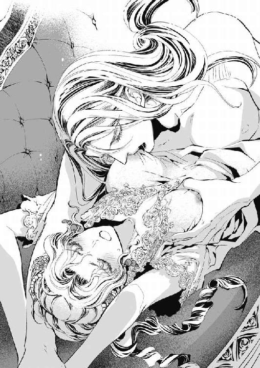

| ミッシング 王太子妃の密室の淫戯 (蜜猫文庫) | |
| 白石まと | |
| 竹書房 (2014) | |
この作品は縦書きでレイアウトされています。
また、ご覧になる機種により、表示の差異が認められることがあります。
一部の漢字が簡略字で表示されていることがあります。
イラスト／ＤＵＯ ＢＲＡＮＤ．
prologue
王太子宮の占有敷地内とはいえ、端にある打ち捨てられた古い塔には誰も近づかない。
その塔の中に入り、出入り口近くにある螺旋階段の横を抜けてまっすぐ奥へ行くと、巨大なタペストリーに隠された鉄の扉がある。普段は錠が下ろしてある扉だ。
それを開けると下りてゆく階段になっていて、その先には、大きな四角い部屋があった。厚手の絨毯が敷き詰められ、作りのいいベッドが鎮座する豪奢な部屋だ。
空調も考慮されて、続き部屋には水周り一式が完備されている。隠されていて見えないが、万が一のときのための脱出口も、鉄扉とは別にあるという。
普通の部屋と違うのは、地下室だから窓がないこと、そして、階段側へ向いた壁一面が鉄格子であることだ。
そよと流れた冷たい空気を察知して、セリアは思わずくんっと鼻の頭を上げた。彼女の手を引いて一緒に階段を下りてきた夫のアーベルが、その様子を面白そうに眺めて言う。
「どうしました。今夜はいつもより緊張しているようですね。......怖いのですか？」
繋いでいるアーベルの手で、セリアの右手がくっと強く握られる。それはまるで《逃がしませんよ》と言っているかのようだが、彼女が逃げることはない。
「怖くなんてないわ。逃げるくらいなら、ついてきません。知っているでしょう？」
「前のときから十日ほど空いてしまいましたので、どうかなと思ったのです。何をされるか分からないから緊張は当然として、それだけでもないような......あぁ、期待かな？」
「......いじわる」
この受け答えでは認めたも同然だ。くつくつと肩を震わせて笑うアーベルは、顔を真っ赤に染めるセリアの様子を見て、さらに笑いを大きくした。
室内は、明かり取りに火が入れられているためか、外と比べても多少薄暗い程度だ。
リネンや羽毛布団など、かなり上質なものが揃えられたベッドは壁際に寄せられている。これは前と同じだ。
ベッドの横になる開いた場所に、ついこの間までは小さな丸テーブルと優雅な曲線を描く猫足の椅子が二脚あったが、今は大きな椅子が一脚だけ置かれていた。
その前に二人は並んで立ったわけだが、セリアはまじまじと奇妙な形の椅子を眺める。
枠組みは鉄製だ。背凭れになる部分は、座ったときに背から頭まで預けても、上部がたくさん余るだけの高さがあり、背や頭があたる部分は皮のクッション仕様になっている。後ろに四十五度くらい倒れているから、揺り椅子の背より傾きが大きい。
肘掛け椅子だ。けれど、肘を乗せる部分が異様に長く、前へ突き出ていた。こちらは細長い皮のクッションが上に固定されている。
脚は半円形をしていて、床に付くところが前と後ろへかなり出ているから、椅子に座って身体を丸々預けても、ひっくり返ることはなさそうだ。
前に出ている湾曲した脚には、床から十センチくらいの位置に、小皿のようなものが左右それぞれついている。重い鉄の塊だから、後ろへ倒れるのを防ぐ意味があるのだろうが、重石だけなら別の形でもいいはずだ。何のためのものか、見ただけでは分からなかった。
「奇妙な形の椅子ね。眠るためのものなのですか？」
「そうですね。眠ることもできるでしょう。構造上、倒れることはありません」
眠るのでなければ、どう使うのだろう。
もっとも奇妙なのは、座席部分だ。
（......Ｕの字をしているわ）
丸くなったところが背の方になり、二つの腕が前に伸びているという具合だが、腕の部分は普通の座席よりも奥行きが少ない。鉄座面の上に皮のクッションがくっついているから、臀部が痛くなることはないだろうが、太腿の間に何もなくて、足は開いて座ることになる。
（足は......開いて......）
とくん......と鼓動が躍る。不意に後ろから両肩を掴まれて、ぎくりと体が強張ってしまった。両手でセリアの肩を掴んだアーベルは、彼女の耳に顔を寄せて囁く。
「さぁ、マントも夜着も脱いであの椅子に座ってください。最初は寒いかもしれませんから、肌着は着ておいた方がいいでしょう。下着は......穿いていませんね」
眠る前だから穿いていないという言い訳は、この際どれほどの意味があるだろうか。
舞踏会が終了してから、湯あみをしてナイトドレスを着た。そろそろベッドに入ろうかというところで《塔へ行きましょう》と言って、アーベルが迎えに来た。地下への誘いだ。
セリアは、踝までのマントを羽織っただけで部屋を出てきた。アーベルは、着替えなかったのか、舞踏会でのいでたちのままだ。
下着となるドロワーズを穿いていないとなれば、自分ばかりが期待しているようで、セリアは少しだけ唇を尖らせる。ふっくらとして、サクランボのような赤い唇だ。
「......あの座面では、落ちてしまうかもしれないわ」
「大丈夫ですよ。皮と鎖でできた拘束具が見えるでしょう？ 腰のところには、後ろからのベルトがあります。手は顔の横くらいにありますよ。手の方は自由度が高いので、肘置きまでは下ろせます。──足がどこに括られるか、分かりますか？」
服を脱いであそこに座って、仰向けに後ろへ身を預けたとする。腰は後ろから回されたベルトで固定、手も固定。足は。
「肘掛け......？」
「そうです。分かりましたか。大きく開いて肘掛けにそれぞれ乗せるのです。あそこにも固定ベルトがありますよ」
見える。茶色の革ベルトだ。足先と踵は肘掛けの外へ垂らして、足首の上部あたりで固定になるだろうか。それだけすれば、ずり落ちることはないだろう。しかし、すさまじく羞恥を誘われる姿になる。
椅子をじぃっと見ている内に、ここまで着てきたマントを後ろから剥ぎ取られた。マントは絨毯の上に落とされて布の塊になる。下はナイトドレスだ。秋も深くなっていて、夜は寒いので、肌着となる腰までのキャミソールをその下に着つけている。コルセットはない。
アーベルの手が、後ろからセリアの上腕と共に前に回されて、膨らんだ胸をぎゅうと包んだ。ナイトドレスごと、両方だ。
「......んっ......」
布越しにさわりさわりと撫でられる。次第に力を入れてきた指先で揉まれた。
彼女の金褐色の髪を口元で避けて、耳たぶを甘噛みしながら、アーベルは楽しげに言う。
「椅子の前側の脚に小皿のようなものがあるでしょう？ あそこに膝を乗せると、ちょうどあなたの秘めた場所に私のものがぴったりくるはずです。深く入りますよ、きっと」
深く挿入されるのは彼の陰茎であり、入る先は彼女の蜜壺だ。深く入ると、アーベルの楔は奥の子宮口まで達する。そこを丹念に突かれると、セリアは深い快楽へ導かれてしまう。子宮口のすぐ手前の場所を嬲られ続けると、激しい快感に襲われて何度も絶頂に達する。
「その前に、たっぷり弄ってあげなくては。剥いてしゃぶって......。セリア、あなたが泣いて私を請うまで、ここを責めてあげましょう」
〈ここ〉と、胸を触っていた手の一方が躰の線を辿って下がり、布をたゆませながら彼女の股繰りを探った。
目の前に鎮座する鉄製の椅子に括られて嬲られる。拘束されると、動く範囲が狭くなり、泣き叫ぶようにして喜悦に堕ちるしかない。
想像するだけで、どきどきと心臓の動きが速まり、揉まれている胸は布越しだというのに先端を立ち上がらせる。
下腹にあるアーベルの手の指が、足の間に布を沈ませながら陰部をずるりと擦った。
「濡れてきたようですね。布が湿ってきました。あなたも随分、淫らになったものです」
「......アーベル......」
喘ぐように名を呼ぶ。するとアーベルは腕を外し、彼女から少し離れた。
「さぁ、自分で脱いで、セリア。あそこに座って、開いた足を肘掛けに掛けてください。大事な部分を自ら晒して私を呼べたら、おもいきり可愛がってあげますよ」
アーベルは、今夜はセリアをたっぷり追い上げるつもりのようだ。きつい愛撫を約束された夜が更けてゆく。
二年と三か月前、セリアはアーベルに嫁いで、皇帝宮内にある王太子宮へ入った。
彼女がこの部屋の存在を知ったのは、三か月ほど前になる──。
第一章
フランメア帝国の王太子妃セリア・ディ・フランメアは、王太子宮の庭にある東屋にいるというのも忘れて大きく声を上げた。
「アーベル！ あなたは、わたしに恋人を作れと言っているの？ 夫の──あなたの他に？」
二年前に大聖堂で彼女と挙式した美麗な夫アーベル・ディ・フランメアは、東屋を囲む芝の上で片膝をついて控えている近衛中隊長を見ながら、薄く笑みを佩かせた口で言う。
「恋人ではなく遊び相手ですよ。これであなたも少しは退屈から解放されるでしょう」
子供ではないのだから〈遊び相手〉がどんな遊びに興じる相手なのか、分かるつもりだ。
──夫に〈遊び相手〉を推挙された!? な、なぜっ？
夜は赤味が強くなるというセリアの金褐色の瞳がアーベルを睨む。《利かん気な子猫のようだ》と彼が言ったそのままの野生の激しさと強さをたたえて、怒りに燃え上がった。
初夏の陽射しが明るく舞い降りる午後のことだ。
最初はいつもと同じように、言葉遊びを繰り返しながら何気ない話をしていた。
それが、なぜ──
フランメア帝国は、大陸の北部に広大な領土を有する大国の一つだ。万年雪を被る高い山々も、放牧が盛んな広い高原も、豊かな実りを約束する肥沃な平野も、すべて帝国内に入る。
雪に長く埋もれる国だからこそ、強い日差しが溢れて新緑が勢いを増す季節になると、すぐにやって来る短い夏を満喫しようと何もかもが衣を脱ぎ捨ててゆく。人の心もまた、開放的になる時期だ。
皇帝宮の東側にある王太子宮の東屋で、十八歳のセリアは、八歳年上になる二十六歳の夫アーベルとお茶の時間を過ごしていた。
屋根と床と柱だけで出来ている八角形の東屋は、庭の木々が円形に開けた真ん中にある。四方に豊かな緑を眺められ、風通しも良く、宮殿から遠いためか非常に静かだ。
目の前では、男としては美麗すぎるアーベルが、曲線を主体にした優美な椅子に座り、これもまた優美なカップを手にして口元へ運んでいる。明るい庭の様子とともに眺めとしては抜群なのだが、セリアはぼんやりとして、どこへともなく視線を投げていた。
アーベルが、テーブルの上にゆっくりカップを置くと尋ねてくる。
「セリア......、どうしました？ このバラジャムは公爵家から贈られたものですが、さすがにもう飽きてしまいましたか？」
彼の言う〈公爵家〉は、セリアの生家となるグラディオス公爵家のことだ。
生まれ育った屋敷には見事なバラ園があり、その中の一種から料理長が作ってくれるバラジャムは彼女の大好物だった。毎年、そのバラが咲く季節になると、生家からジャムがたっぷり贈られてくる。
たおやかで優しげなアーベルの声に、はっと我に返ったセリアは、速い動きで顔を上げると周りをちらりと目で探って近くに誰もいないのを確認した。
護衛兵や侍女や侍従といった者たちは、王太子夫妻が一緒にいるときは、いつも遠巻きにして控えている。おそらく、アーベルの指示によってそうしているのだろう。
話し声くらいなら聞こえないので何を言っても大丈夫だが、セリアは声を出す前にいつも周囲を確かめることにしていた。彼女は軽やかに答える。
「いいえ。飽きてなんていないわ。大好きよ。嗜好品というものは、死ぬまで変わらないのではないかしら」
何事もなかったようにして、セリアはアーベルを見つめて微笑んだ。
彼女の豊かな金褐色の髪を風が撫でると、柔らかな前髪がふわりとなびいた。アーベルをまっすぐ見る大きな眼には、髪の色を少し濃くしたような瞳がきらめいている。
二年前はまだ幼さを残していたセリアの容貌は、いまや蕾が花開くかのように美貌の度合いを増している。肢体もぐっとたおやかになり、細くしなやかな肉体が華やかなドレスを纏って優雅に動けば、皇帝宮に出入りする社交界の男性の目はみな釘付けだ──と、侍女たちは口々に誉めそやす。
けれどセリアにしてみれば、アーベルの横に立てば、どれほどの美女であろうと見劣りしてしまうのは明らかなので、己の美しさに対する自覚は薄い。美しすぎる夫など、それだけで厄介極まりないというものだ。
流水のような直毛のプラチナブロンドをさらさらと背中に流して、低い位置でゆるく一つに縛っているアーベルは、透き通った水色の瞳を持ち、彫の深い顔立ちをしている。鼻筋が通った端麗な貌を前へ向け、高い背をしてゆったり動くさまは、美麗としか言いようがない。
おまけに彼は、美しさの裏側に鋭い牙を隠し持っていた。
アーベルは、細身なのに、たまに鋼のような雰囲気を醸し出す。その牙に晒されることがなくても、二年も一緒にいれば、冷静で冷徹な性情を感知するくらいはできる。
結婚して王太子宮へ入り、皇帝宮での舞踏会で社交界にデビューしてからは、セリアは王太子妃として落ち度がないようにとそればかりを考えて過ごしてきた。人の嫉妬や悪意に満ちた噂話にもようやく慣れてきている。性質の悪い出来事や、仕掛けられた罠を回避するための術も学んできたつもりだ。
そうして二年、王太子妃としてはそれなりに上手くやれていると思う。ただ、このごろ自分でも気が付かないうちに、ぼんやりしてしまうことがあった。アーベルの前では特に注意していたというのに、静かな庭の様子につられてつい意識が浮遊した。
そんな彼女に、穏やかで優しい笑みを漂わせてアーベルが言う。
「あなたがジャムに少しも手を付けないから、好みが変わったのかと思いました。そうですね。人の嗜好はあまり変わらないものです。でも、絶対ということはなく、きっかけもないのにある日突然、変わることもあるようですよ」
アーベルの視線が彼女の手元にじっと注がれている。セリアは優雅な仕草でスプーンを取ると、バラジャムを掬い、お茶のカップへ注ぎ入れた。
「ごめんなさい。何だかぼんやりしていたみたいね」
「このごろのあなたは、ときどきそういう顔をしている」
「そういう顔？」
「退屈だっていう顔ですよ」
う......と詰まったセリアは、図星を指された気がして頬をわずかに赤く染めると、勢い込んで言葉を放つ。
「でも、役目はきちんとできているでしょう？ 何かまずいことをしたかしら」
反応速度は抜群だ。普段は隠しているが、反骨精神も抜群かもしれない。
周囲に誰もいないのはもう確認済みだ。彼と彼女は王太子という位のための同盟者、あるいは協力者だから、こういう話のときに遠慮をする必要はないはず。
セリアの夫は、ますます笑みを深くした。
「なにも。あなたは王太子妃の義務を滞りなく果たしていますよ。最初はぎこちない様子でしたが、すぐに吸収するべきものを取り入れて楽々とこなすようになった。よくやっています」
「楽々と、ではないわ。それなりに苦労もしているんだから。......ただ、そうね。このごろ少し時間を持て余しているみたい。だから、今まで思いもしなかったことを、つい考えてしまうのかもしれないわね」
優しげな微笑を浮かべながらも目つきを鋭くしたアーベルは、その動きで、彼女の意識をジャムの方へ誘導した。セリアは、自分がもう何杯もジャムを掬ってカップに入れていることにようやく気が付いて、慌ててそれを止める。
言葉で指摘しなかったアーベルに対して悔しさが生まれたので、セリアは何気なさを装いながら赤くとろみがついたお茶を飲んだ。もはやお茶とは言えない甘さだ。
すると、唇の端にジャムがほんの少しくっついた。彼女は行儀が悪いと分かっていても、つい口を薄く開けて舌先を微少に出すと、それを舐めてしまった。それがどれほどの妖艶さを放っているか、本人は少しも分かっていない。
セリアを凝視しているアーベルの視線が、ますますきつく、ますます何かをこらえているようになったのを感じる。今にも噴火しそうな火山のようだが、決して爆発などしないと彼女は知っている。アーベルは、セリアに向かって感情の迸りを向けたことはない。
──怖いような両眼。そうね、アーベルは本来怖い人のはずよ。でも。
アーベルは優しい。セリアの望みをなんでも叶えてくれる。夜、ベッドの中ともなれば、その優しさが大いに発揮されて、彼女はゆりかごの中であやされるようにして眠りに落ちる。文句のつけようのない配偶者、それがアーベルだ。
──だけど、本心は見せてくれないのよね。
二年過ぎても、この夫が彼女をどう思っているのか、セリアは分からないでいた。このごろ特に、意味ありげに見つめられると聞きたくなる。
──何が言いたいの？ ねぇ、アーベル。わたしのことを、本当はどう思っているの......なんて、結婚して二年も過ぎてから聞くようなことではないわね......。
意地悪なアーベルのことだ。笑われてしまう、きっと。
家同士の事情で結婚が取り決められ、婚約式の日に初めてアーベルに逢った。そのあとは怒涛のように日々が過ぎていったから、互いへ向ける気持ちについて話す機会はなかった。
そんな必要も感じなかったのだ。気持ちがどうであろうと、彼と結婚するのは決められていたのだから。
ようやく落ち着いて毎日を過ごせるようになると、セリアはふと思いついてしまった。
アーベルは、わたしのことをどう思っているのかしら──と。
彼はセリアの物思いを分かっているのかいないのか、いつもと同じように、優しげであっても感情の見えない様子で会話を続ける。
「どこかへ旅行でもしてきますか？ 南方にある王太子離宮はどうです。馬で駆けるにはいい季節ですよ。......あぁ、国外へ出るというのもいいかもしれません。視察目的にして、各国の王家の人たちと親交を深めるというのはどうですか？」
「アーベル。あなたは？ 一緒に行くことはできて？」
「私は皇帝宮を離れられません。......特に、今は。だから一人で行くことになりますが」
──今は......？ 何かあるのかしら。
セリアは、政治的なことは分からない。まだ勉強中だ。
生まれたときから皇帝宮の熾烈な権力争いの中にいるアーベルは、まるで服でも着るように物事を処理してゆく。主な動きは、足元を掬われない予防と、権勢を手中に収めるための手立て、そして種蒔きだ。
彼女には垣間見えるだけだが、陰での動きはきっと大層なものがある。
つい先日のことを思い出す。
『アーベル様は恐ろしい方ですわ！ 特にセリア様のことでは──』
セリアに恋文のような手紙を寄越したボルアック侯爵は、アーベルとのカードで負けて破産し、社交界から追放されることになった。夫人と共に領地へ引き籠るという。別れの挨拶のときにセリアに向かって発せられた夫人の訴えは、アーベルをさらに怒らせたようだ。
風の便りに、ボルアック侯爵家の領地の館が燃え、一家は離散したと聞いた。アーベルが手を回したという証拠はないが、恐らくは......とセリアは推察する。
セリアに対して何かをしたからというよりは、たった一通とはいえ、王太子妃へ裏切りを誘う手紙を渡せば、アーベルはそこまでするかもしれない。
それ以来、セリアは、個人的な手紙はすべて封を開けずに返している。
あのときは彼女に関することだから片鱗が見えただけで、きっと他にもこういうことがたくさんあるに違いない。アーベルは敵対する者に容赦しない。穏やかに笑いながら、完膚なきまで叩き潰す。そういう人だ。
では、彼女に対しては？ 怒れば同じようにする？
一体自分は夫の何が見えているのだろう。何も見ていないから、アーベルも彼女に本心を出さないともいえる。つらつらと考えてしまう。退屈だからというなら、そうかもしれない。時間ができてしまったから、物思いに捉われた。何かが足りないと思えて──。
ふぅっと息を吐く。
「一人で行ってもつまらないからいいわ。......そういえば、昨日の舞踏会で、ミハイル様とお話していて、あの方の離宮へ誘われたのよ。一緒に行きませんかって。ここよりも、もっと北にあるそうね。アーベルの離宮とは正反対の位置だわ」
セリアよりも二歳年上になるミハイル・ディ・フランメアは、アーベルの腹違いの弟だ。セリアには、年上でも義弟になる。
父親のニコラス皇帝と同じように病弱で、皇帝宮の一角にある自分の宮に引き籠っていることが多いから、あまり姿を見ない。昨夜は珍しく舞踏会で逢ったので話をした。
ふっと口端を上げたアーベルの笑顔が、見慣れているというのにいつもより眩しく目に映る。東屋は、屋根はあっても柱だけで壁が無いから非常に明るい。そのせいだろうか。
「そうですか、ミハイルが。それで、何と答えたのです？」
「え？ もちろんお断りしたわ。あちらの離宮はまだ雪が多いそうですもの。ミハイル様のお体に悪いでしょう？ もっと夏場にならないと無理じゃないかしら」
「その通りです。ミハイルは肺が悪い。咳が出るような環境は避けなくては。さて、そろそろ行きます。今夜は皇帝宮の予定も入っていませんから、一人にしてしまいますね」
「グラナダ伯爵様のところへ行かれるのでしたわね。王太子宮の侍従長から、そちらでお泊りになる予定と聞いています。でもね、男性だけの利き酒会なんて、なんだか怪しいわ」
下目使いを装って睨めば、ははは......と、今度は声を上げて笑うアーベルだ。
「なにを怪しんでいるのですか。あなただけですよ、セリア。愛しています」
「......アーベルは《愛している》って言いすぎるわ。言葉が軽くなってしまうでしょう？」
《まだ子供ですね》と言わんばかりにくすりと笑うアーベルには、八歳も年下の彼女は太刀打ちできない。男性に対する経験も彼以外には皆無だから、仕方がないというものだ。
どうしたらこの男の本音を引き出せるのだろうか。《わたしのこと、どう思っているの》と真正面から聞いたらどうだろう。果たして、まともに答えてくれるだろうか。
（アーベルの本音なんて、予想がつかないわね......）
二の足を踏むのは、笑われるかもしれないというのと、聞きたくない答えが返ってくるかもという二つの理由があるからだ。
彼女はお返しにニコリと笑って......ではなく、むにゅっと笑って見せた。少しばかり歯を見せるこの笑い方は、反発心が沸き起こったときに出るもので、母親にやめなさいと注意されているから他の人には見せない。アーベルにだけ向ける彼女の表情だ。
同じように返すのが意趣返しになるかどうかは疑問だが、セリアは、できるだけ淡々とした感じになるよう心掛けながら答える。
「わたしもよ。愛しています、アーベル」
このやり取りは毎日のお約束だ。言葉に熱はない。習慣とか、挨拶と変わらない程度の言葉になってしまっている。
口にすれば、頬が熱くなった。言葉自体は重いものだと考えているし、まともに声を出して言えば、やはり恥ずかしい。
きゅっと唇を噛んで、羞恥を抑え込む。そして思う。愛しているという一言だけでは足りないと。熱が伝わってこない。もっと熱いなにかを。もっと激しい想いを。求めてはいけないだろうか。
カタリと音がしたので顔を上げると、アーベルが椅子から立ち上がるところだった。セリアもドレスの裳裾を上手く操って立つ。近くまで歩いて行けば、アーベルはセリアの腰を両手で緩く囲んだ。彼の唇がそっと頬と額に当てられて、軽いキスを贈られる。
いつもなら、挨拶代りのキスのあとで腕を外すアーベルだったが、片方の腕をセリアの腰から背中まで上げて、身体全体でぎゅぅっと抱きしめてきた。
（いつもと違う......？）
耳元近くへ降りてきたアーベルの唇から小さな声が零れる。
「今日はあなたにプレゼントがあります」
「まぁ、何かしら」
上半身を離し、アーベルの美しい顔を見上げる。
プレゼントなら、今まで山のように貰っているが、いつも突然目の前に出されるか、内緒で部屋に置いてあるかで、前ふりなどなかった。何か特別なものだろうか。
「マティアス！」
アーベルが呼ぶと、東屋を取り囲む林の方から一人の近衛兵が出てきた。アーベルよりも多少若いようだが、彼女よりも上になるだろう。セリアはすっとアーベルから離れる。
制服の胸の飾りから中隊長クラスだと分かった。黒い髪、瞳の色も黒だと思う。非常に整った顔をしていたので少々驚いた。アーベルとはまた違ったタイプの端麗さがある。兵士らしく頑丈そうな体つきでも、きゅっと引き締まっているのは見て取れた。
マティアスと呼ばれた彼は、東屋の近くへ来てから芝生の上に片膝を付いて、わずかに頭を下げる。そのまま微動だにしない。
東屋の床は、表面が大理石で覆われた豪華仕様だ。屋根の軒から外へ出るまで伸ばされていて、その先に階段が三段、八角形の状態でぐるりと周囲にある。それを下りれば土の上だ。
土といっても芝が敷き詰められているので、この時期は緑の絨毯のように見えている。
その上にいるマティアスは、近衛兵の服が紺色と白が基調になっているせいか、とても目立った。陽の光が彼を包んで、その存在を際立たせる。しかし、アーベルのような眩しいカリスマ性はない。むしろ、息を潜めてそっと寄り添う影のようだ。
セリアは不思議そうに横のアーベルを見た。アーベルは事もなげに言う。
「彼は、マティアス・オルガといいます。私が任命した新しい王太子宮の警護責任者です。近衛中隊長ですよ。どうですか？ 彼は。いろいろ弁えていて、控えめで、頭も良ければ剣技も優れている。顔も整っていて姿もいい。二十四歳です。私よりも二歳若い」
「......アーベル......？」
何が言いたいのか、さっぱり分からなかった。こんなことは珍しい。彼女に分からないような話し方など、アーベルは一度だってしたことはない。
（......これは、なに？）
新しい警護責任者を、彼がわざわざ紹介する形で近寄らせたのも変なら、その男のことを話すのも、褒めるのも、とても奇妙だ。たまに新しい将や官吏のことが会話の中で出るが、容姿に言及したことなど一度だってあっただろうか。
口ごもったセリアに、アーベルは重ねて言う。
「あなたはずいぶん退屈をしているようなので、〈遊び相手〉として彼を推挙することにしました」
セリアはぎょっとして自分の夫を凝視する。一瞬あとには叫ぶように声を出した。
「アーベル！ あなたは、わたしに恋人を作れと言っているの？ 夫の──あなたの他に？」
「そこまでは言っていません。いいですか。あくまでも遊び相手としてです。深みに入り過ぎるのは許しません。これは私があなたに投げた謎なのです。謎解きに勤しんでみて下さい」
「謎、解き？」
「先ずは遊んでいいのですよ。マティアスは魅力的な男です。これなら、あなたも退屈から解放されるでしょう」
「アーベル──」
どれほど微妙な言い回しをされても、子供ではないのだから〈遊び相手〉が、どんな遊びに興じる相手なのか、分かるつもりだ。
大声で言いふらす類の話ではないが、政略や家同士の決め事で結婚する者がほとんどという皇帝宮社交界では、夫や妻のほかに恋人を持つのはごく当たり前だった。
ただし、それはセリアの考え方からは外れている。彼女の母親グラディオス公爵夫人は、他国で生まれ育ったためか、貞淑と貞節の教えを厳しくセリアに教え込んでいる。
蒼ざめたセリアは、激しいまなざしでアーベルを睨んだ。
真正面からアーベルに怒りを向けたのは初めてのような気がする。アーベルはセリアをここまで怒らせたことはなかったし、実際、上手く彼女をあしらってきた。
けれどこれは、今までとは違う。まるでいきなり剣先を向けられ、宣戦布告を告げられたかのようだ。
怒り心頭のセリアを見つめながらアーベルは呟いた。
「......あなたは本当に素晴らしい瞳を持っていますね。生命力に溢れていて、野生の獣のようです。なんと強い視線だろう。それが曇るのを私がどれほど残念に思うか、あなたは考えたことがあるでしょうか」
爆発するように吹き上がった感情の嵐の中では、小さな呟きなど耳に入らない。
セリアはそれ以上の言葉もなく、身を翻して東屋から出てゆく。我を忘れたような大きな声は本来出してはならないし、アーベルと言い争う姿を他の者に見せるわけにはいかない。
美しいドレスが翻るが、もっと美しいのは、流れるようになびいた彼女の髪と、しなやかに動く肢体、そして発光でもしているかのような身に纏う怒りのオーラだ。
歩いてゆく途中で、芝の上に片膝を付いて頭を下げているマティアスの横を通る。
そこを通らなければ、王太子宮へ戻る小道へ出られない。小道は木立の中を抜けて宮殿の南側へ通じるものだ。
きりりと顔を上げ、マティアスを一瞥もせずに通り過ぎようとしたセリアは、決めたのはアーベルでありマティアスが悪いのではないと思い直す。マティアスにとっては、苦行にあたるのかもしれないのだ。
横を歩くときにふいっと目線を下げて彼を見た。
マティアスは皇帝宮の厳しい条件をクリアした近衛兵であり、この若さで中隊長だ。剣技も優れているとアーベルが口にした以上、人と比べられないほどの腕前なのだろう。
視線を流すだけで、マティアスはセリアの意識が向いたのを感じ取ったようだ。セリアの動きに合わせるようにして顔を上げる。ぱちんと目が合う。彼女はぎくりとした。
黒い瞳に見えたが、深い藍色だ。アーベルの空色の瞳とは対極をなすような濃い陰に彩られた眼。アーベルは水色の後ろに闇夜を隠し持っている。では、この男は？
妻に恋人を宛がう──そんな生ぬるい話だろうか、これは。
厳選したとアーベルは言った。弁えており、優秀で、控えめなのだと。
なぜマティアスであり、なぜそうしたのかを考えなくてはならない。
ぐいっと顔を正面に向け直した彼女は、後ろから注がれているアーベルの貫かれるような視線も、物言いたげに向けられるマティアスのまなざしも振り切って歩く。小道に入る前にぴたりと止まって振り返った。
夫と、これから恋人になるかもしれない者を眺めながら、王太子妃らしく鮮やかに笑って見せる。そして、次には悪戯っ子のように笑った。アーベルは、歯を出して笑ってはいけませんとは言わない。彼は、彼女の望みをなんでも叶えてくれる夫だ。退屈になれば、恋人の手当てまでする。
まだ聞いてはいないが、これが《私のことをどう思っているの》という質問の答えなのだろうか。
セリアは、眦をきつく上げてアーベルを睨みながらも、楽しげに言い置いた。
「ありがとう、アーベル。そこまでわたしのことを考えてくれて。楽しんでみるわ。あなたが言うように、あなたご推薦のマティアスとね。マティアス。どうぞよろしく。では、もう王太子宮へ戻りますわね」
優雅に美しく、スカートを摘まんで腰を屈める。
アーベルの微笑みはそのままだ。こんなときでも、本心は欠片も掴ませない。
くるりと身を翻し、彼女は小道に入って足早に歩く。いつの間にか、後ろに侍女が二人ついている。アーベルが選んだ者たちは相変わらず優秀だ。一緒になって王太子宮へ向かった。
セリアが背を見せた途端、アーベルが凍ったような視線を彼女へ投げ掛けたが、それは見ていない。
王太子宮の自分の個人部屋へ戻ったセリアは、侍女たちにドレスを脱がされて着替えをした。女性のドレスは一人で着脱できないのが困る。もっとも、彼女は立場的に、一人になる時間も場所もかなり限られているのだが。
用意されていた夜のドレスではなく、別途に出された室内着を纏う。
室内着はナイトドレスではないが、首回りが大きく開いていて、胸のふくらみに細かくレースがあるだけで、光沢のある絹が足元まで下りてゆったり広がるという、コルセットもペティコートもなしの衣服だ。このまま眠ってもいい。
今夜は具合が悪いという伝言を、皇帝宮の総侍従長へ渡すよう侍女の一人に持たせた。
夕食もいらないからと伝えて侍女たちは下がらせ、寝室も兼ねた部屋で一人、巣篭りだ。
予定がないときでも、貴族の奥方たちと一緒に皇帝宮をそぞろ歩くのがセリアの日課だったから、いつもなら夜のドレスに着替えている。けれど、侍女たちは室内着も用意していた。
これは、〈今日のお茶の時間〉を計画したアーベルの手回しだろう。セリアのすべてが彼の掌中にある。
──どうせなら、一発や二発、頬を叩いておくんだったわ。
夫の頬を叩くなど、母親が聞けば卒倒しそうだ。できはしないと分かっているが、つい投げやりに考えた。
アーベルの頬に手形がついたら大騒ぎだ。でもきっと、彼は飄々とした態度で、魅惑的な笑みを浮かべながら《妻に殴られてしまいました》くらいのことは言ってのけるだろう。
そうして騒ぎはすぐに収束するに違いない。アーベルの権勢は、セリアと結婚したことでグラディオス公爵家の後ろ盾を得て、かつてないほど強力になっている。アーベルの意向に反するようなことは、表だっては誰もしない。政略結婚は、今のところ大成功だ。
ベッドの上で枕を両腕で抱きしめながら、ごろんごろんバタバタと暴れた。誰もいないから好きなように怒りも嘆きも解放してゆく。気持ちが収まらない。
──恋人を用意されるなんて！
悔しいというより、悲しくて、哀しくて、ベッドの上に座って体を前に折り曲げたセリアは、うつ伏せになって泣いた。あとからあとから溢れる涙を手で受け、そうして、彼女は悟る。
──アーベルが好き。
唐突に思い至る。彼の気持ちを確かめるのを戸惑っていた三つ目の理由は、《ではあなたの気持ちは？》と聞き返されたら、はっきりしなくて答えに困るという事情にあったようだ。
ところが、いきなり、あやふやだった自分の気持ちに答えを得てしまった。
挨拶のように口にしていた《愛している》という言葉が、どれほど本心からのものであったのか、唖然とする面持ちでセリアは知る。
尋ねたあげく笑われたらいやだとか、返事が不安というのも結局、彼が好きだからだ。
──結婚して二年も過ぎている今ごろ！ なんて愚かだったんだろう。気が付きさえすれば、本心を伝えて、アーベルの気持ちも聞けたのに......っ！
もう聞けない。返事が怖い。前よりもっと聞けなくなってしまった。
──〈遊び相手〉の推挙？ そんなことをするアーベルは嫌い。大嫌い！ ......でも好き。好きだわ。こんなことになっても好きなんだわ、わたし。
胸が苦しい。
──わたしに飽きてしまったとか。でも夫婦は死ぬまで一緒なのよ。大聖堂で結婚誓約書にサインをしたとき、わたしはあなたのものになったけれど、あなただってわたしのものになったんだから。残念でした。
悔し紛れの思考はどこか幼い。
──どうすればいいの？ アーベル......、マティアスは遊び相手と言ったわね。深みに嵌るのは許さないとも言ったわ。でも、じゃ、何をして〈遊ぶ〉のよ。
嫌だと言おうか。なぜだと聞かれたら、何と答えればいいだろう。アーベルが決めた以上、無視もできない。何か特別な意図があるかもしれない。が、彼女に示された部分は少ない。
（......アーベル、もしもわたしが、あなたよりマティアスを好きになってしまったら、どうするの？ 本当にわたしを彼に渡してしまうつもりなの？）
ギクリとする。もしも、だ。万が一、本当に恋をしたあげくマティアスと結ばれても、アーベルは何も変わらないかもしれない。むしろ、丁度いいとばかりに、自分も特定の恋人を作るかも......と思考は飛んでゆく。
彼は、結婚したあとでも女性たちに囲まれるのが日常だ。皇帝宮を中心とした社交界に、生まれたときから埋もれているアーベルは、貞節を守れと厳しく母親に躾けられたセリアとは、考え方が違う可能性は高い。
ずいぶん怪しい噂が耳に入ることもある。けれど、アーベルが《心配しなくてもあなただけですよ》と言ってくれるから、その言葉一つで見聞きしたことを流してきた。
好きだと分かってしまった今は、アーベルが他の女性と関係を持つなど想像するのさえ嫌だ。彼はそういう気持ちにならないのだろうか。
（わたしがマティアスを好きになってしまってもいいの？ あなたより彼の方を好きに......あぁ、だめ。あり得ないわ、そんなこと）
涙が途切れないほどつらいのだから、アーベル以外の人などあり得ない。
東屋で彼の本心を聞いていたらと仮定して、セリアは頭を横に振る。過ぎた時間は戻らないし、《わたしに飽きたの？》なんて、意地が勝ってとても口にできない。その流れで《わたしのことをどう思っている？》と尋ねたとしても、どんな返事をもらえるというのだ。
なにより、あの場では気が動転していて、まともな顔をして去るのが精いっぱいだった。
己の気持ちに気が付いたのも今さっきなのだから、どちらにしても遅い。
──アーベルのばかばかばか......。
疲れ果てたセリアがベッドの上で丸くなれば、急激に眠くなる。
西へ移動した太陽はまだ半分ほど顔を見せているというのに、具合が悪いという伝言そのままに、涙の痕を頬に残してセリアは眠りに入っていった。
つらく苦しい気持ちの中で、過去に遭遇した幾つもの場面がくるくると回る。
二年前。
アーベルと出逢ったあのころ。セリアは十六歳になったばかりだった。公爵家の王都屋敷で、彼女は夫となる者の名を初めて聞いた。
その夜、妙に気持ちがざわついて寝付かれなかったセリアは、父親が帰ったのを察して、出迎えようと、二階の奥の自室から出て階段がある踊り場まで来た。北方に広がるフランメアの夜は冬から抜け出す時期でも寒いので、ナイトドレスに厚手のガウンという姿だ。
踊り場は、吹き抜けになっている玄関ホールの上部空中へ向かって半円になって張り出している。張り出し部分に手すりがあり、そこから下のホールが見渡せた。
両親の部屋は一階の奥だ。遅い時間だった。二階を見上げることもなかった両親は、セリアがそこにいるとは思ってもみなかったようだ。
ずいぶん酒が入っているのか、危ない足取りでホールを横切る父親は、執事と母親に支えられている。夜は、用が無い限り屋敷内をふらついてはならないという決まりがあるから、他の者はいない。呼ばれるまでは誰も出てこないだろう。
よろよろと歩く父親は、歓喜を織り交ぜて叫ぶように言った。
「ニコラス皇帝に《うん》と言わせたぞ。これで、セリアの王太子妃は決まりだ！」
階段から下りようとしていたセリアは足を止める。
（王太子妃......ということは、アーベル殿下ね）
このところ、公爵家の当主として父親が忙しく動いていたのは、予想していた通り、彼女の縁談のためだったようだ。ニコラス皇帝には王子が二人いるので、どちらかになるだろうと屋敷の中でも囁かれていたから、察するのはたやすい状況だった。
セリアとしては、公爵家の縁談という以上の感慨はない。
「静かになさいませ。皆が起きてしまいます」
横にいる母親が嗜める。
注意を促されて、愉快そうだった父親は機嫌を損ねたようだ。
「なんだ。もっと嬉しそうな顔をしたらどうだ。アーベル殿下が皇帝になれば、セリアは皇妃だぞ。グラディオス公爵家は、これでしばらくは栄華を極められる」
「でも、アーベル殿下は父君であるニコラス皇帝の覚えがあまりよろしくありませんわ」
「だからなんだ。弟君のミハイル殿下は、皇帝陛下と同じで病弱だ。二代続けて病がちというわけにもいくまい。第一、アーベル殿下は、姿も中身もそれはもう抜きんでたお方だろうが。ミハイル殿下よりはるかに優れているぞ。王太子位は揺るがん」
「そうかもしれませんが、アーベル殿下の母君はとうに亡くなられていますし、母君のご生家では後ろ盾として弱くていらっしゃる。そうすんなり次期皇帝になれるとは思えません。皇帝陛下のご意志次第で、廃嫡の可能性もありますでしょうに。公爵家のたった一人の娘を嫁がせるなら、もっと立場が盤石になってからの方が......」
「なにを言っている！ 不安定な今だからこそ、この縁談の価値が高まるというものだ。わが公爵家なら強力な後ろ盾になれるぞ。王太子の地位を固められる。それが分かっているから、アーベル殿下御自身が、セリアとの結婚を強く望まれて皇帝陛下に願い出られたのだ」
父親の声はよく響いた。二階のセリアにも、一言一句聞こえる。
（貴族家の婚姻は力関係で決まると聞いていたけど、皇帝一族も同じなのね......。アーベル殿下が願い出られた──って、逢ったこともないのに）
どのみち父親の決めた相手と結婚することになる。セリア自身が逢ったことがあるかどうかは問題にもならない。アーベル殿下の方も、妻がどういう後ろ盾を持っているかが何より重要で、どのような女性であるかなどさほど気にしないということだ。
豪語を繰り返す父親を、執事や母親が宥めながら奥へ連れてゆく。やがて声は遠くなり、何を言っているのか分からなくなった。
ニコラス皇帝は、神経質で後ろ向きという難しい方らしい。万が一、許可を与えた婚姻を公爵家から反故にするようなことがあれば、反逆罪の名でグラディオス公爵家といえども取り潰されるかもしれない。つまり、もうこの結婚は覆せないということだ。
好きな男性などいないから、家を潰してまで抵抗する必要もない。
（物凄く嫌な人だったら......。対処法は、そのときに探すわ）
心の中でそう決めて、セリアは自分の部屋へ戻って行った。
夫となる者の名をはっきり認識した夜。偶然は、ときおり奇妙なほど核心的な位置にセリアを立たせる。アーベルとの出逢いも、彼女独自の動きが引き金となった。
縁談はどんどん進み、いよいよ初顔合わせをしてから婚約式を執り行うというその日、セリアは急ぎ足で屋敷内のバラ園へ向かっていた。彼女の大好きなバラが今を盛りとばかりに咲いていると、園丁に教えてもらったからだ。
園丁に他意はなかっただろう。王太子殿下があと一時間でこの屋敷に来て、セリアとの婚約式を執り行うという予定を、その園丁は知らなかった。
グラディオス公爵家が一人娘を差し出して王太子のバックボーンになるという情報は、まだ伏せられている。屋敷内でも知っている者はごく一部だ。公の発表は、婚約式のあとになるという。
多種多様なバラの木に囲まれた小道を急いだ。公爵家のバラ園は敷地も広く、造形美を誇る庭園の体をなしているので、なかなか目的のところへ辿り着けない。
「あ、あれね」
そこだけが、濃い赤のベールで囲まれているように見えた。彼女はようやく到着したそこで立ち止まり、ゆっくり周囲を見回す。
「綺麗......」
ふっ......と小さく息を吐いた。息とともに両肩から力が抜けるのを感じると、自分がいかに緊張していたかを自覚する。
（アーベル殿下に初めてお逢いするのですもの。緊張するのも無理はないわ。みんなは大丈夫だって言うけど......）
グラディオス公爵家は、皇妃を幾人も輩出してきたフランメア帝国の名門だ。
生まれたときから次代皇帝の正妃になるとみなされていたセリアは、大切にされると同時に、厳しい教育を山ほど受け、公爵家の者たちに監視されて......否、見守られながら育った。今回の話は、公爵家にとって、予定調和と言ってもいいほどの流れだろう。
王太子アーベルがどのような人間なのか、屋敷内だけとはいえ聞きまわったが、噂程度にしか分からなかった。噂などあてにならないことは、彼女自身の噂からでも分かる。
セリアは《グラディオス公爵家の真紅のバラ》だそうだ。いずれ絶世の美女になると言った者は、そうならなかったときには、責任を取ってほしいものだ。
（アーベル殿下は、ものすごく美麗で、砂糖に群がる蟻のように女性たちが寄って来るとか。本当かしら。大体、男が綺麗と言われて嬉しいものなの？）
彼女はもう一度息を吐いてから、バラに向かって笑いかける。
「こんにちは。小さなバラさん。ジャムになったら、一番にわたしが食べてあげるから、今の自由を楽しんでね」
バラ園で丹念に手入れされ、育てられ、やがて花瓶へ移動するのか、はたまた彼女が好きなバラジャムになるのか、このバラの運命はそのときの園丁や料理長が決める。
大切に育てられ、誰かの都合で手折られる。それが奇妙に自分に当てはまるように思えて、セリアはじっと咲き誇るバラたちを眺めた。
まだ、皇帝宮の舞踏会でデビューをしていないセリアは、社交界の荒波に呑まれていないせいか、仕草も物言いもどこか幼い。逆に、髪よりも少し濃い金褐色の瞳から生まれる視線は、恐れを知らぬ者のように強かった。彼女は一人ごちる。
「第一、こんなにお腹が空いているのにね。皆はわたしにどうしろって言うのかしら」
白いレースやフリルで整えられたドレスは、濃いえんじ色の下地の上に薄いピンクの紗を乗せた豪奢なものだ。花に話しかけているセリアは、無邪気で純真で──実際そうだが──まるでバラの精のようにも見えている。
それなのに、彼女の頭の中は、きつく巻かれたコルセットと、空いたと主張するお腹のことでいっぱいだ。バラを見たいというのは表向きの理由でしかなく、お腹が空いて一時間をじっと待っているのがつらかったというのが本当のところだ。
（......だから朝食はほしいって言ったのに。これでは、お茶の時間に出されるケーキにかぶりついてしまいそう）
緊張感もさることながら、この空腹をどうしたものだろう。ちょうど昼食の時間に王太子殿下がやって来るので、昼食も抜きになる。それもこれも、細い腰を美しさの条件の一つに入れたこのごろの風潮のせいだ。早く世の中の美しさ基準が変わるようにと願う。
セリアはふいっと顔を上に向けて、青く澄み渡る空を眺める。空は、ついこの間までの重たげな冬色から、一足飛びに明るい夏色へ変わろうとしていた。
（......殿下は、姿がお綺麗という話はずいぶんたくさん聞いたけど、中身がどういう人なのか、誰に聞いてもまともに答えられなかったわ。わたしには内緒っていうより、誰も良く知らないみたいだった。アーベル殿下って、そんなにわけの分からない人なのかしら）
今日の婚約式が無事終了すれば、近いうちに挙式してセリアは王太子妃だ。アーベルが順調に勢力を伸ばしてつつがなく次期皇帝になれば、彼女は皇妃になる。男児を生み落してその子供が次の皇帝になれば、国母と呼ばれる者──というわけだ。
その第一歩が今から一時間ほどあとの初顔合わせになる。これほどすきっ腹を抱えて、そんな試練を乗り越えられるだろうか。しかも、予定された未来は、彼女がどうしてもほしいものではない。今、切実にほしいのは、食事だ。
（......美味しそう......）
セリアは、バラジャムをお茶に入れて、バラの香りと薄い味わいを楽しむのが大好きだ。スプーンですくって舐めるのも好きだった。赤くてきれいで甘くて──。
ちょうど口元より少し下がった位置にあった満開のバラにぱくんと食いついたのは、別に食べてしまおうとしたわけではない。この状態では甘くないと分かっている。
紅さが深くてあまりにも美味しそうだったのでつい、動いてしまった。
「そんなにお腹が空いているのですか？」
笑いを含んだ穏やかな声に驚いて、セリアはぱっと背を正すと、素早い動きで屋敷へ通じる小道の奥へ顔を向ける。
そのとき、驚きのあまり、はむっとバラの花びらを噛んでしまった。ほろりと毀れた紅い花びらの一枚を唇の端で挟んだままになったが、指先で口から取り除くのを思いつく前に、とんでもない自分の姿を見たのが誰であるかを視界に入れる。
薄い金を塗したようなプラチナブロンド、水色の瞳、端麗な貌。通った鼻梁に、きっちり引かれた薄い唇。背が高く均整のとれた身体を持った男性が、小道の曲がり角から彼女を見ていた。驚くほど美麗な人だ。
バラの木の枝に左手を預けていて、〈隠れていたが枝があってよく見えないから一枝避けた〉といった風情だった。そっと覗いていたのだ。
──トゲがあるのに。
バラのトゲとその男性はとても似合っている。
端麗な貌といい、姿といい、服装といい、公爵家の者以外とは滅多に逢わない彼女にも、彼が普通の人ではないとすぐに分かった。何より醸し出す雰囲気が違う。他の人とは段違いのこの迫力。カリスマとは、まさにこれだと不意に頭の中で閃く。
──アーベル殿下！
あまりにも驚いたので挨拶が遅れた。そんなセリアに対して、彼は口端を皮肉げに上げる。
「グラディオス公爵家のセリア姫......ですね。私は、アーベル・ディ・フランメア。あなたの夫となる者です」
──あ、挨拶の口上をしないと......っ！
最初に逢ったときに言うようにと、指導されて練習した。まずは礼だ。ところが、慌てたセリアが腰を屈めるためにスカートを摘まむと、アーベルは手を上げてその動きを止める。
「あぁ、待って。何も言わなくていいですよ。動かないでください。せっかくの素敵な飾りが落ちてしまいます」
「......？」
ピンク系の紅を引いた唇に捕まった真っ赤な花びらは、アーベルの言葉通りに彼女を素敵に彩っていた。
ゆっくり近づいてくる彼を見つめていれば、さほど時間も掛けずにセリアの前に立ったアーベルは、片腕を己の前で浮かしてわずかに腰を屈める。紳士というより戦士の会釈だ。
「初めまして。バラを食べるお姫さま」
優雅な仕草に、極上の笑顔。しかし、言葉には笑いが含まれていて、からかわれたのは明白だった。セリアはカッと頬を赤く染め上げる。アーベルはそんな彼女を喉の奥で笑いながら眺めていた。
──意地悪だわ......っ！
皮肉というよりは意地悪だった。
セリアはぐっと顎を引いて、素早い動きで右手の指先を口元へもってゆくと、食んでいた花びらを取り、微笑して薄く開いていた彼の唇にそれをぺたんっと貼った。
アーベルの身長がセリアよりかなり高かったせいで、背伸びをしながら腕を伸ばさなくてはならなかった。が、彼はどんな場所でもそういう態度をとられたことがないのだろう。きっと油断していた。
彼女の紅が付いていた赤い花びらは、思惑通りに彼の唇に張り付いた。
顔がいいと驚いた表情もさまになるものだ。しかし、しげしげと彼を見つめているほどの余裕もない。
セリアは一歩後ろに下がると、できる限り優雅にスカートを摘まんで淑女の会釈をする。口上は、最初に言おうとした〈ご挨拶〉だ。
「初めまして。王太子殿下。わたしがグラディオス公爵家のセリアでございます。これからの長いときをともに過ごせるのを光栄に存じます。どうぞよろしくお願い致します」
顔を上げてから、むにゅっと笑って付け加える。
「とてもお似合いですわ。──赤い花びらが」
そんな笑い方をしてはいけませんと教師にも母親にも言われているが、この際、彼には分かっていてもらおう。妻とする女は、こういう表情も持っているということを。
ぽかんとしたアーベルはセリアを凝視している。
その両目が予想以上の驚愕を映しているのに加えて、彼女に固定されたままひくりとも動かないので、これは拙かったかもしれないと、セリアは退散することにした。たちまち動き出す。果断なる行動は素早い。
「では、失礼いたします。お茶の席でまたお会いしましょう」
笑顔だけは満杯にしてクルリと体の向きを変えると、セリアはアーベルが何か言い出す前に、ダー......ッと脱兎のごとく駈けた。大きく豊かなスカートを両手で抱えるようにして全力疾走だ。小道をたどり、彼が現れた角を曲がる。ここを通らないと、屋敷へ戻れない。
どんな後ろ姿を晒していたのか、そのときは逃げるのが最優先だったので考えもしなかった。どれほど美しく髪が後ろへ流れていたか、駆けるのが速くてどれほどアーベルを驚かせたか、大きな襟ぐりから覗いた首筋の綺麗さや細い腰が男の目にどのように映ったか。
セリアの姿は、計算してそういう処を見せたがる皇帝宮の女性たちよりはるかに素早く、野性的でしなやかだったのだが、彼女には逃げることが最重要だった。
後ろからはくつくつとした笑い声が聞こえている。すぐにそれは大爆笑になった。あの顔が一体どのようになったのか見てみたい気もしたが、戻るのは危険すぎる。
危険──それは、目も眩むようなアーベルの美貌に惑わされず、セリアが認識した最初の印象だ。本能とでもいえる何かが、あの男の恐ろしさを肌で感じ取っていた。二人きりで外で出逢ったから余計に分かりやすかったのかもしれない。
けれど、だからどうするというものでもなく、一時間後の面会の場では互いに素知らぬ顔をしてやり過ごし、続く婚約式は周囲が肩透かしをくらうほどつつがなく終わった。
屋敷を出る彼を見送るために玄関ホールで挨拶を交わしたとき、アーベルはセリアの右手を軽く下から持ち上げて、その甲に口づけながら言った。
「セリア。もう婚約者となったのですから、アーベルと呼んでください」
「殿下......でなくてもよろしいのですか？」
「あなたのその紅い唇で名前を呼ばれるのは、とても心地良さそうです。ですから、どうぞ、セリア。これからは、アーベルと」
《紅い唇》というところでバラ園での花びらの件を揶揄していると、細めた空色の眼が語っている。セリアは直ちに反応して、ニコリと優しげに笑う。淑女の笑顔だ。
「アーベルとの毎日は楽しそうです。今から楽しみでなりません。わたし、退屈は嫌いなのです。手折られるばかりの花でいるのは、もう終わりにしたいと思っております」
「それでいいですよ、セリア。私の妻には波乱万丈を覚悟して頂かねばなりません。不屈の精神を持ち、臨機応変である人が願わしいのです。逃げるというときには、直ちに身を翻せる人がいい。その点あなたは申し分ないようだ」
逃げるときには──これもバラ園での出来事を引き合いに出している。答えられないのを見越して言っているだろうから、この男が意地悪なのは間違いない。
アーベルは重ねて言った。
「退屈はさせませんから、安心してください」
ニコリと笑いながらセリアの手を離す。周囲は何の話をしているのか怪訝そうに二人を見ているだけだ。
異様なほどの麗質を纏った彼は、多分、見かけ以上に奥が深い。どんな中身なのか、逢ったばかりでは少しも分からなかったが、アーベル・ディ・フランメアを知るのはこれから長い時を掛けてやっていけばいいと、そのときの彼女は考えていた。彼は面白そうな謎だった。
セリアは笑う。先ほどの作ったようなものとは違い、今度は本当の笑みだ。
「アーベル。夫があなたでよかったわ」
「セリア。それはこちらの言い分です。どうぞよろしく」
まるで何かの合図のように笑い合って言葉を交わし、その場からアーベルは去ってゆく。美麗な男は、後ろ姿も美しい。
そうやって二人は生涯に渡る見つめ合いを始めたのだ。好きとか嫌いとか、感情の部分は何もなかった。せいぜい〈好ましい〉くらいだ。そのときは。
二年前の自分は、生きているという手ごたえを欲していた。
誰かに手折られるのを待つばかりでは、熱い思いも、吹き上がるような激情も、切なくて涙する気持ちも、人を人たらしめる心をなにも知らずに命を終えてしまいそうだった。
そこへアーベルが現れて、彼女に未来を約束した。
波乱万丈？ 願ったりかなったりだ。退屈はさせないと約束してくれたのだから、是非ともそうしてもらおうと思った。
公爵家の外は謎ばかりが犇めいている。一番大きな謎がアーベルだ。彼は一体どういう人間なのかという問いの答えは、二年過ぎても得られていない。
どうやら自分は、忙しいからとか怒涛の日々だったからとか言い訳をしながら、肝心なことを置き去りにしてきたようだ。
自分の気持ちはようやく掴んだけれど、アーベルの本音はまだ聞いていない。
──好き。アーベル。優しくて怖いあなたが好き。いつの間に、こんなに好きになっていたのかしら。愛していると本気で口にしていたのに、気が付かなかったなんて。でも、もう分かってしまった。あなたは？ わたしのこと、どう思っているの？
挨拶のような熱のない言葉ではなく、本当の気持ちを知りたい。
本音が聞きたい──なのに。
遊び相手だなんて!!
──それは、わたしに飽きてしまったから？ それとも、公爵家のバックアップはもう必要なくなったから、妻としてのわたしも不要になったということ？
螺旋階段を下りてゆくような、沈む思考が止まらない。
──わたしのこと......もういらない？
彼の本音がそこにあったら、とても、つらい。
ふうっと目が覚めれば、また泣いていた。泣きながら、初めての出逢いを夢でなぞっていたようだ。これほど鮮やかに蘇るあの出逢いが、ずいぶん遠いことのように感じる。
セリアは目元を手の甲で拭ってから、ベッドの周囲へ視線を投げた。足元と窓辺に設置してある小さな灯だけの部屋は、広いせいもあってか、真夜中と見紛うほど暗い。
（東屋でアーベルとお茶を飲んで、マティアスを紹介された日の夜......ではなくて、あのあと、眠ってしまったんだわ。朝になった？ まだ暗いわね）
上半身を起き上がらせ、南向きの大きな窓の外を窺えば、東の方角に紫色にたなびく細い雲が見える。そこから空を辿った逆側になる西は真っ暗だから、かなり早朝なのだろう。ただ、初夏の太陽は早い時間に昇ってくるから、すぐにも明るくなるはずだ。
（......初めて逢ったあのバラ園のときも、初夏だった）
心の奥底に刻まれた、忘れ得ない初対面だ。
アーベルにとってはどうだろうか。もしかしたらとうに忘れているかもしれない。あるいは、あのときを愛おしいと感じる彼女とは、まったく違う感覚で眺めているということもあるだろう。例えば──〈後悔〉とか。
自分の考えにぎくりとする。それもいつか確かめよう。
ベッドの上で、立てた膝を両腕で抱えるようにして座れば、滑りのいい部屋着は彼女の姿態をしゅるりと覆う。セリアは、唇をぎゅっと引き結んで、窓の外を睨むようにして見る。くっつけた膝の上に載せた両手で、スカート部分の布をぎゅうぎゅうに握り締めた。
泣きながらでも一晩眠ったせいか、昨日の出来事を少しは冷静に眺められるようになっている。
（......王太子妃に恋人現わる──なんて。社交界では珍しくない出来事でも、わたしの立場ではだめなはずよ。それをアーベルが手配するなんて、とっても奇妙で、変じゃなくて？ 皇帝陛下の耳に入ったら、アーベルはきっと妻の行状を追及される）
皇帝宮を中心にした社交界の乱れについて、病気で伏せがちのニコラス皇帝はあまりいい顔をしないという。専制君主の意向は、アーベルといえども疎かにできないはず。
ニコラス皇帝と顔を合わせたことは二度しかない。
皇帝の病状は、安定しているとはいえ起き上がるのは難しいということで、ベッドの横で初対面をした。それが一度目だ。二度目は、一年目の挨拶のときだった。セリアは、いつもアーベルと一緒に逢っている。
ベッドで半身を起こしたニコラス皇帝は、とても痩せていて、年齢よりもはるかに年上に見えた。神経質そうな細い声で、言葉を短く口にする。
アーベルとニコラス皇帝は、仰々しい挨拶を交わすだけだ。仲が悪いふうには見えなかったが、普通の親子のようでもない。かつて、セリアの母親が口にしたように、〈皇帝の覚えが悪い〉というなら、そういうことかと合点のいく対し方だった。
実の親子であっても、王太子としての立場は皇帝の一言で取り消される場合もある。〈廃嫡〉だ。
そういう状況下でセリアが恋人を作るのは、アーベルの後ろ盾であるグラディオス公爵家との折り合いが悪くなっていると端からは見えるだろうから、マイナス面しかない。
（......でも、もう公爵家の後ろ盾なんて必要ないかもしれないわ。わたしとの結婚で、彼の勢力範囲は格段に広がったって、皇帝宮の奥様方が言っていたもの）
夢の中でも考えていた。《わたしのこともういらない？》──と。
（東屋でアーベルが言ったのは......）
『これは私があなたに投げた謎なのです。謎解きに勤しんでみて下さい』
謎解き。何か別の目的のためにこうする必要があるのかもしれない。
（......生ぬるい話ではないかもしれないって思ったんだわ、わたし）
直感をおろそかにする気はない。いざというときに、逃げるタイミングを選ぶ勘に関しては、わりと自信がある。
（裏に何かがあるとして......。でもどんな？）
何も始まっていないから、何も分からなくて当然だ。
なぜマティアスであり、なぜこうしたのか。セリアのことなどもう必要なくなってしまったのか。アーベルの気持ちはどこに。
分からないことは多いが、答えを見つけるまで、まだ時間はあるだろう。時間が無いなら、アーベルはこんな悠長な方法は取らないはずだ。
（......いいわ。マティアスと付き合ってみる。あなたがそう望んだのだから）
アーベルが何を目的としているのか、今の段階では分からない。彼女の目的は、はっきりしている。《アーベルの本音》だ。
望まない言葉が返ってきたとしても、すでに夫婦なのだから、この先の長い時間の中で修復してゆけると思おう。ベッドの中で泣いていても何も動かない。先の不安よりも今、行動するしかない。それしかできないのだから。
（深みには入らないように、ね。どのあたりが深みになるのかしら......）
最上級のリネンに包まれた枕で涙を拭って、セリアはベッドの端から床に足を下ろすと、すくりと立ち上がった。
彼女には王太子妃としての責務がある。それを疎かにしては、さすがの〈優しい〉アーベルもセリアを見放してしまうだろう。義務をしっかり果たしてこそ、自分が主張する立ち位置を確保できるというものだ。
（まずは、今日の昼食会からね）
最高の王太子妃であるように、装って、笑うこと。朝も早くて時間があるから、昨夜できなかった入浴から始めよう。
セリアは、室内着の上に、レースとフリルとリボンで飾られた華やかなガウンを羽織ってから部屋を横切り、侍女を呼ぶために廊下へ出る扉を少し開いた。扉の両側にはいつものように近衛兵が立っている。そのすぐ横にマティアスがいたので、セリアは目を見張った。
「おはようございます」
軽く頭を下げて朝の挨拶をくれる彼は、近衛兵の出で立ちではなく侍従の姿をしていた。
マティアスは王太子妃付きの近衛隊の中隊長だ。近衛兵の人員配置も役目に入る。セリアの傍についているように、都合よく自分を配置するのも可能だ。
（警護責任者という位置は、一緒に遊ぶためにはすごく都合がいいんだわ......。一緒にいても変じゃないものね。侍従姿なら、舞踏会の大広間にも入れるし）
感心する。
組織上、彼の上を辿ればアーベルだ。だからマティアスがこうしているのは、アーベルの許可を貰っていることになる。
「おはよう。早いのね」
小さく笑ってマティアスを見ると、彼はわずかに顎を引いて驚いたという雰囲気を滲ませた。それが面白くて、セリアは、今度は大きく笑う。
「衣装担当の侍女を呼んでちょうだい」
「はい」
短く返事をしたマティアスは、再び頭を下げた。
入浴して、ドレスを着つけてから衣装室を出る。扉の外にいたマティアスに、セリアはそっと笑みを向けて目配せをしてから歩き出した。王太子宮から皇帝宮へ向かう。
（......どういうふうにすればいいか、分からないわね）
考えたこともないから無理もない。とりあえず微笑んで視線を絡ませることからだ。
二年前、王太子妃になって、嵐の中に投げ込まれるがごとしの慌ただしい生活が始まった。それに慣れてきたら今度はこれだ。
水の底を歩いているような変化に乏しい日々や、ついぼんやりしてしまう緩やかな時間は、吹っ飛んでしまった。謎が解けるまではそれに捉われることだろう。
『退屈はさせませんよ』
その約束は、今のところ果たされている。
第二章
午後の予定にぽこんと隙間ができた。侍女も近衛兵も傍から離したセリアは、侍従姿のマティアスを後ろに従えて、皇帝宮の左宮殿へ向かった。
皇帝宮は、古い建物を残したまま新しい部分を右側へ追加してゆく方式なので、右方へ広がる一方の宮殿だ。敷地はあり余るほどあり、古いからといって壊すにも人手と費用が掛かるからそうなるらしい。
皇帝を初めとして、人々はこぞって新しい方へ移り、古い宮殿は放置状態になっている。掃除をする役目の者も少ないので、用がなければ誰も行かない場所だ。
その左宮殿の比較的新しい方へ来たセリアは、すすっと周りを見回したのち、後ろにいるマティアスに目配せをしてから、横の扉を開いて中に入った。二階の一室だ。彼も素早い動きで近辺を目で探ってから入る。
室内には、傷がついた調度品や見飽きられた絵画、使われなくなった椅子に壊れたテーブルといった類が雑多に置かれている。割れた花瓶もあった。
物置扱いをされていても、皇帝宮内だけあって、壁紙も天井の絵画もそのあたりの貴族の屋敷とは一線を画す豪華さだ。
窓も大きい。レースのカーテンがあるだけなので、午後の陽光がたっぷり差し込んでいる。
物が雑然と置かれてはいるが、ぎっしり詰まっていないので、窮屈さを嫌うセリアには埃がいっぱいでも好ましい場所だ。がらんとした自由な感触がいい。
「ほら、ここ。来て」
セリアが窓近くにある古い三人掛け用ソファに座って、空いている左隣の座席をポンポンと叩けば、マティアスは困ったような顔でそこに腰を掛けた。できる限り彼女から離れようとしている様子が笑いを誘う。
「近くに寄らないの？」
むにゅっと口角が上がった彼女の口元が楽しい気分を表しているが、本人に自覚はない。
「......いえ、はい」
わずかに動いて最初よりも近くに座ったマティアスだが、それでも二人で並んで座るには離れた位置だ。やはり笑えてくる。
これはどう見ても、いやいや付き合っている、あるいは何らかの指示をアーベルから受けて、そのとおりに実行しているだけにしか見えない。これではつい油断してしまいそうだ。油断させて、それから──という手なら、まんまと引っかかっている。
けれどマティアスは、この十日ほどの間に、二人きりになっても何も仕掛けてこない。実際、キス一つ誘ってこなかった。
セリアも、人がいるところでは〈遊び相手〉にマティアスを選んだふりはするけれど、陰に隠れると途端に、本当にただの遊び相手にしてしまう。
無駄なおしゃべりをせず、物静かで、セリアの方から迫れば逃げ腰というのがたまらなく面白い。苛めたいわけではないのに、ついあれこれ言いたくなってしまうくらいには、マティアスは楽しい相手だった。さすがはアーベルがセリアのために厳選した者だけある。
「もっとよ。近くに」
「はぁ」
返事なのか、ため息なのか分からないようなものを吐き出すと、彼は再びわずかな距離を縮めて寄ってきた。セリアは手に持った扇を広げて口元を隠しながらくつくつと笑う。
濃い色のレースで隠されているようでも、素肌が透けて見える細い肩が細かく上下して、彼女の可笑しいという気持ちをマティアスに教える。
一体、アーベルは何のためにこの男をセリアの傍につけたのだろう。遊び相手というなら、こうしているのも確かに〈遊び〉だ。しかも、驚くべきことにとても楽しいから、退屈が忍び寄る気配もない。秘密が山盛りというところに興味を掻き立てられ、さらに面白みが増す。
（......まんまとアーベルの策に嵌っている気がするわ）
それは彼女のただの思い込みかもしれないが、これから何かがあるとして、それさえも、何があるのだろうかとわくわくしてしまうのだから、すっかりアーベルの手の中という考えで間違いはないはずだ。
マティアスは、セリアが笑っているうちに室内の確認を終えたようだ。彼は常に、周囲に多大な注意を払う。
「このような場所をご存知でいらっしゃるとは、驚きです」
ようやくまともに口を開いた。
「結婚してすぐに、アーベルが何日もかけて皇帝宮を案内してくれたの。そのときに見つけた部屋よ。疲れがひどかったり、人と一緒にいるのが苦痛になったりしたときに、一人でここへ来ているわ。少しでも休めば回復するもの。隠れ家のようなものね」
「......そうですか。ご自分のご判断でそれができるのは、妃殿下のお立場では美点と言えるでしょう。倒れるまで頑張っても、倒れてしまったら大変ですから。まさか妃殿下がこのようなところにおられるとは誰も思いません。隠れ家というならぴったりですね」
「妃殿下ではなくて、二人のときはセリアでいいって言ったでしょう？」
「......そうでした。セリア様」
ふふふ......と笑うセリアだ。
そういえばと思い起こせば、彼女は公爵家のたった一人の姫で、屋敷の奥で隠されて育ったから、一緒に遊ぶ同年代の友人はいなかった。一応、〈お友達〉という少女たちを紹介されたが、彼女たちはセリアを公爵家の姫としか扱わず、少しも面白くなかった。
もしも、友達がいたらこういうふうにして遊ぶのだろうか。
セリアは、自分側の肘置きにぽんと手を載せる。
「このソファがいいの。古くて布地も色褪せているけれど、座りやすいのですもの」
背中を立てて、坐ったまま腰をバウンドさせると、古いソファにも関わらずバウンバウンと上下した。彼女の前髪もドレスも、ふわんふわんと踊る。マティアスはそんなセリアを驚いたような顔で凝視した。
「なに？」
「は、あ、いえ。......私も揺れてしまいます」
「でしょ。布を張り替えれば、まだ十分使えるわ。なぜここに捨てられたか分からないくらいよ。勿体ないわね」
ふっと口元に笑みを浮かべたマティアスを眺めて、セリアはおやと思う。笑ったのを見るのは初めてではないだろうか。
いつも押し黙って怒った顔をしている彼だが、笑みを浮かべると途端に可愛い感じがする。笑みが妖しさを倍増させるアーベルとは正反対だ。
マティアスは、とても端正な顔や姿をしているのに、気配を断っていると陰に隠れたようになって目立たない。アーベルはどこにいても──それこそ黙って立っているだけでも、人の目を引く。そういうところも、まったく違う。マティアスは、まるでアーベルの影のような男だった。
思慮深いことや、言葉を選ぶために返事に多少時間が掛かるというのはこの数日で分かったので、セリアは黙ってマティアスが話すのを待つ。すると彼は彼女の方へ向いて言った。
「座り心地は悪くありません。ですが、それよりも、セリア様が《勿体ない》と口にされたのが、私としては一番の驚きです。皇帝宮に出仕する貴族の方々は、あまりそういうふうには、お考えにならないので」
「普通の感覚だと思うけど......。それなら、あなたが言うべきは《ドレスが汚れますから、こういうところへは来ない方がいいですよ》じゃなくて？ 侍女たちがいたらきっとそう言うわ。侍従長もよ。《そんなところへいらしてはいけません》とか、《一人でなどと、とんでもない》とか。マティアスがそういうふうに言わないのだって驚きよ」
「そういえばそうですね。一人では危ない場所でしょうから、近衛兵は絶対にお連れ下さい」
「前のときはちゃんと連れていたわ。扉の外で待たせたの。今日は、あなただけだけど。いまごろは、きっと噂になっているわね」
マティアスは神妙な顔で頷いた。
常日頃は、予定が空けば短い時間でも、貴族の奥方たちと一緒に庭を散歩しながらおしゃべりをする。ところが、セリアはこの十日間、場を抜け出して別のところにいた。他の者からすれば、いつの間にか姿が見えなくなったという状態だ。
当然のように噂が流れ、《王太子妃殿下は、何処にいらっしゃいますか》から始まる憶測が飛び交うようになった。
この古い左宮殿にマティアスと一緒に来たのは初めてだ。今までの隠れ場所は、庭先の低木の陰ばかりで、侍女を遠ざけるくらいだった。今日は中隊長のマティアスがいるからと言って、近衛兵もなしだ。
ここへ来る回数が増えれば、いずれ彼の名前もセリアの名と一緒に出るようになるだろう。
マティアスは、近衛中隊長にしては若い。おまけに見目もいい。彼自身は目立たなくても、セリアと対になれば噂の中心人物にふさわしい姿をしている。
この左宮殿から戻れば、噂は大きく膨らむはずだ。なぜかといえば、セリアのドレスが埃を絡ませて、目ざとい奥方たちの格好の噂のネタになるからだ。
セリアのドレスは、どちらかといえば可愛い系で、胸元が大きく開いていてもレースが被さっているものが多く、そこまで肌を出したようには見えない。しかし、実際の露出は多いという技ありドレスだ。袖も膨らんでいてその先にはフリルとレース、そしてリボンがある。
今日の濃い緑色のドレスには、紅いリボンと白いレースが素晴らしく目立つ。そこに金褐色の髪がなだらかに彼女を彩り、可愛らしい上に美しいと、朝一番に逢った貴族家の男性たちから賛辞をもらった。そういったドレスのレースが、この左宮殿では埃を友とする。
埃を払ってから戻っても、気が付く者はいる。《誰も行かないようなところで、セリア様は何をしていらっしゃったのかしら。もしや......》と柱の陰でさぞかし言い立てることだろう。アーベルはそういったことまで見込んでいるのだろうか。
「ねぇ、マティアス。アーベルは一体何を企んでいるの？」
すぅっと身を寄せながら、きりっとした表情でマティアスを見上げると、彼は他を向いてセリアと目が合うのを避けた。本当にゲームのようだ。
十日過ぎているからそろそろいいだろうと、セリアは重ねて聞く。
「そういえば、あなたの生まれはどこ？ なぜアーベルはあなたを選んだのかしら」
彼自身について、セリアは階級くらいしか知らない。
返事はないかもしれないと思っていたら、マティアスは、迷いながらも答えてきた。
「母が、アーベル殿下とミハイル殿下の乳母を務めておりました。母は、十五年ほど皇帝宮で仕えていましたが、私はその間に生まれましたので、生まれは皇帝宮内ということですね」
驚いて目を丸くするセリアだ。
「乳母さまの息子！ まぁ、ごめんなさい。少しも知らなかったわ。それも、二人の王子のどちらにもお付きになったの。優秀な方なのね」
「体が丈夫で母乳がよく出たと聞いています。ちょうど私の兄を出産したのと、アーベル殿下のお生まれが重なっていましたから、皇帝宮で一年ほど侍女をしていただけでしたが抜擢されたようです。ミハイル殿下のときは、弟の生まれと重なっていますね。タイミングが良かったのでしょう。亡くなった父は近衛隊の大隊長をしておりましたし」
「マティアスは三人兄弟なのね」
「いえ。兄は流行病で父と一緒に逝ってしまいましたので、今は私が総領です。下に弟二人と妹と合わせて三人いますから四人兄弟ですね」
四人！ 羨ましい話だ。セリアは一人娘で、兄弟姉妹はいない。グラディオス公爵家は、彼女が嫁いでから、父方の従弟が養子に入った。
「ご兄弟は、皇帝宮に？ それとも、町にいらっしゃるのかしら」
皇帝宮の東側には城下町となる王都だ。ここで町といえば、その王都を指す。
「母は十二年前に皇帝宮から下がりました。皆で一緒に、町で暮らしています。私は、母と共にいったん皇帝宮を出ましたが、二年前、二十二のときにこちらへ戻ってきました」
「二年前......」
十六歳のセリアが二十四歳のアーベルと結婚したころだ。瞬く間に過ぎ去った二年の間に、皇帝宮の廊下などですれ違っていたかもしれない。ただ、マティアスは言葉が少なく目立たないから、記憶には残らないだろう。
これだけの容姿と優秀さがありながら、不思議なほど存在感が薄い。意識的にそうしているなら、大したものだ。
「近衛隊の試験を受けたの？ 近衛隊は、貴族の子弟やその推薦を受けた者が優先されると聞いているわ。一般の者が入隊するのは難しいって。アーベルがあなたを呼び寄せた？」
「ミハイル殿下のご要望で皇帝宮に戻ったのです。面倒な手続きや試験を免除してもらって、近衛隊に入隊させていただきました。父も兄も亡くなり、私が働いて家族を養わねばなりませんから、渡りに船だったのです。近衛隊の中隊長クラスは待遇もよくて助かっています」
「ミハイル殿下の......。でも、あなたがこうしているのは、アーベルの指示でしょう？」
「そうですね。今こうしているのは、アーベル殿下からのご依頼によります。でも、私はもとより皇帝宮の近衛中隊長ですから、ご命令があれば何でもします。アーベル殿下とミハイル殿下の間で話はついていると伺っておりますから、問題はないかと」
指揮系統というものがあるだろうし、アーベルとミハイルの勢力問題もあるはずだが、どちらも了解しているなら軋轢も生まれないということだろうか。
（なんだか......変ね）
チリリと意識が焼けた。何かが脳裏で引っ掛かるが、明確な形では認識できなかった。口を噤んだマティアスは、この件についてはもう何も話さないつもりのようだ。
それならそれで──と、セリアは別のことを聞くことにする。
「あなたとアーベルは二歳違いだわ。生まれたときから十二年前までいたということは、アーベルが二歳から十四歳まで傍にいたということ？」
「はい。ミハイル様が八歳までということでもありますね」
「じゃ......、じゃ、アーベルの小さいころのことも知っているわね？ アーベルのあのよく分からない考えとか、分かるのかしら」
「よく分からない考え、とか？」
「そう。あえて言うなら、今回のことよ。なぜあなたを遊び相手だなんて言って傍につけたのかしら。急にこんなことをし始めたのはなぜ？ あなたは説明されていて？」
「退屈なさっているとお聞きしました」
「そ、それは──そうよ。でもっ、こういうのはおかしいでしょ？ プラスになる部分は少ないわ。だからもしかしたら......」
「もしかしたら？」
ふわりと笑みを浮かべて目を細めたマティアスは、存在感の薄さも手伝って優しく包んでくる空気のようだった。
優秀であるとアーベルに断言されただけのことはある。マティアスは、聞き上手だ。だからつい、鬱屈して溜まっていた疑問を外へ出してしまう。
「もしかしたら、わたしに飽きたんじゃないかって。そうでしょう？」
「......は？」
「だから！ わたしとの縁組は、アーベルの勢力を、公爵家が後ろ盾になって強力にするためのものだったでしょう。それは結婚した段階でほぼ達成されているじゃない。だから、......だから、アーベルにとって、わたしはもう用なしになってしまったんじゃないかしらっ！ おまけに、飽きてしまったから、気晴らしに〈夫以外の恋人〉をプレゼントしたかもしれない。ね。アーベルなら、それくらいやりそうでしょう？」
みるみる見開かれていったマティアスの眼と、ぽかんと開いた口を眺めて、ようやく彼女は口走り過ぎたのを悟る。油断とはまさにこれだ。
部屋にずしんと沈黙が落ちた。セリアは広げた扇で顔を隠す。マティアスは、はっと我に返って何か言おうとしたが、それ以上の衝動に捉われたようだ。つまりは笑いの衝動に。
「う......は、はっははは......っ、あ、すみません。いえ、そんなふうにお思いだとは、はははは......まさか、そんなふうに──」
「なにがそんなに可笑しいの」
「いえ、アーベル様がこれを聞かれたら、どういう顔をされるか見てみたい、とか──、ぶっくはっはは......」
「もうっ」
ソファで座りながら身体を前に折り曲げて笑っている。これは腹を抱えて笑うという状態だ。人が悩みを口に出したらこの仕打ち。怒ってもいいのではないか？ そうだ怒る。
開いていた扇をパチンと閉じると、そのままぺちっとマティアスの背中を叩いた。
「笑い過ぎよ！」
「は、あ、も、申しわけ、ぷぷ......ありません。えーっと、お顔が真っ赤です」
「──！」
散々笑ったあげく、身を捩ってこちらへ顔を向けたマティアスは、セリアがすぐさま否定できない指摘──顔が赤い──をしてから優しい声音で聞いてくる。
「そんなにアーベル様がお好きなのですね」
「す、好きって、言ったわけじゃないわ。嫌いじゃないわよ、夫ですもの。でも、アーベルの気持ちがよく分からないっていうか──わたしは、だから好きだなんて言っていないってば。結婚して二年も過ぎているのよ、いまごろ分かるなんて、そんな間の抜けた......」
慌てふためいて答えるうちに顔はますます上気した。
（......あ、認めてしまえばよかったかしら。マティアスがアーベルに言ってくれるかも......って、だめよ。こんな大切なこと、自分で伝えないと）
いきなり核心を突かれて千々に乱れた思考を、どうにか立て直してゆく。
ようやく笑いを収め、体を起こしたマティアスは、十日前よりもぐっと親しみやすい感じであっさり言った。
「アーベル様に、毎日《愛している》と言われたらいかがですか」
どきりとしたセリアは、手元の扇を開いたり閉じたりしながら顔を曇らせた。
三段跳びのような会話は、マティアスの頭脳明晰さの証明だ。アーベルは、四段跳びくらいになって、彼女には付いていけない部分も多い。
（......すぐにアーベルへ意識が飛んでしまうわ......。結局、そういうことなのよ。彼が好き。わけの分からないところも好き。わたしは、本気で愛しているって言っていた）
セリアが何か言うのをマティアスはじっと待っている。何か言わない限り、表情も変えずにこのままだろうと予想できるので、彼女は頬を赤くしていたときとは打って変わった沈鬱な調子で答える。
「言っているわ。毎日よ。アーベルもそう言ってくれるの。でもね、それは夫婦の間で言わなくてはならない、ただの挨拶なのよ。王太子夫妻なんだもの。仲良くしているって、皆に見せないといけないでしょう？」
マティアスはまだ黙っている。セリアはこれ以上口にしていいのかどうか迷う。何も話していなかったという顔をして立ちあがり、ここに彼を放置して部屋を出ることもできるだろう。けれど、それはしない。マティアスは、アーベルが連れてきた人間だからだ。
それに、彼は必ずうしろについてくる。振り払えないのなら中途半端はやめようと、セリアは続けることにした。
「好きっていうのも言ったことがあるわ。《私も好きですよ》って、返してくれるの。でもそれだけなのよ」
顔を部屋の中心へ向けてほぅと息を吐けば、マティアスはようやく声を出す。
「アーベル様は複雑なお方ですし、滅多なことでは本心を出されませんから、そういうことにもなるかもしれませんね。──では、それこそあの方の心の壁を崩すくらいに、何度も言うというのはどうでしょうか」
「......まるで、教会で懺悔をしている気持ちになるわね」
ぱっと背を引いてマティアスは下を向いた。
「申し訳ありません。出過ぎたことを申しました」
「いいのよ。背中を押してもらいたかったのかもしれないわ。やってみる。でも、いつもと同じで何も変わらずに終ったら、あなたに愚痴を零すことにするから」
「お慰めします」
セリアは眼を少し大きくして、横にいるマティアスを見た。この言い方では、まるで本当の恋人のようだ。まさに、退屈なときの気晴らし、あるいは悩み相談に乗ってくれる大人の〈遊び相手〉だ。
かといって、マティアスがセリアに何かしてくるわけでもない。このままでは、本当に油断してしまう。
ただ、マティアスはセリアの知らないアーベルを知っているから、彼女はきゅっと一度唇を引き結んでから、とっておきの笑顔を見せながら言った。
「じゃ、慰めの方法として、アーベルのことを話して。彼の小さいころのこととか、どんなことがあったのか、どういうふうにあの人が対応してきたのか、いろいろなこと」
「......はい」
真剣な面持ちでマティアスはゆっくり頷いた。そしてわずかに笑みを浮かべる。
「セリア様がこれほど魅力的な方だとは、思ってもみませんでした。公爵家の奥深くでお育ちになったと伺っております。だから、人形のようなお方だとばかり。人形のようにお美しいことは確かですが」
今度は彼女が笑う番だ。
「二人きりでいるのよ。役回りのお芝居はしなくてもいいわ。......どんな役かは、知らないけれどね」
むにゅっと笑ってマティアスを見やれば、彼はどこか慌てたふうに片手を浮かした。気のせいかもしれないが、頬の高い位置にすっと一線、薄い赤みが載ったように見える。
（存在感があまりなくても、......言葉が少なくても、......アーベルの命令に忠実なだけでも、木石ではないのだわ......）
あたりまえではないかと、セリアは反省した。
「ごめんなさい。意地悪で言ったのではないのよ」
「お世辞ではありません。そうやってすぐに自らを振り返り、ただの従者に謝って下さるところも、とてもお美しいです。お姿もお心映えも、なにもかもが」
「ありがとう。じゃ、そろそろ戻りましょうか。夜会まで、まだ少し時間があるけれど、噂以上の騒ぎになってはいけないもの。王太子妃が行方不明！ とかね」
笑いながら立ち上がったセリアがスカートについた埃を払えば、マティアスもすかさず立って、彼女の膨らんだ裾の後ろ側を叩いてくれた。彼女付きの侍女たちといい、アーベルが選んだ者はみな気が利く。これは、セリアのためのアーベルの守りなのだろう。
その守りが、優しさからなのか、男の独占欲からなのか、それともただの義務感からなのか、行動の土台となる〈アーベルの心〉を、セリアは測れないのだった。
夜会は他国の貴賓を招いてのものだ。ニコラス皇帝は数年前からこういう場へ出られない状態なので、王太子であるアーベルが代役を務めている。賓客の話し相手になるのも王太子夫妻の役目だ。セリアも席に着いて楽しげに会話を弾ませる。
就寝のための貴賓室へ客人を送り出せば、今夜の予定は終わりだ。アーベルはまだ皇帝宮の総侍従長と明日の打ち合わせがあるということで、セリアは先に王太子宮へ戻った。
風呂を使って夜着を纏い、自分の部屋へ入れば、ずっと後ろに付いていたマティアスも休み時間となる。
十日ばかりの間に、マティアスは彼女の部屋の外で夜の立ち番もしていたので、一体いつ眠るのかと聞けば《立ったままでも眠れます》と答えてきた。
『休みなしだなんて、気になって眠れないわ。夜の護衛は、マティアスの下になる近衛兵で回すようにしてちょうだい。あなたは、ベッドで横になって眠るのよ』
『──分かりました。......ありがとうございます。セリア様』
押し問答の末だ。
扉が閉まると、体からほっと力が抜ける。肩ひもだけのナイトドレスでは、夜はまだ寒いので、ナイトガウンを羽織った彼女は、部屋の奥よりにある天蓋付きのベッドの横端に腰を下ろした。足先には可愛らしい室内履きだ。そこへ目線を落として考える。
今夜アーベルがこちらへ来るという知らせは受けていない。本人からも耳打ちされていないので、あとは眠るだけだ。マティアスから《毎日言われたらどうですか》という件を実行に移すなら、セリアがアーベルの部屋へ行くしかない。
（もうずいぶん遅いわ。この時間なら、アーベルは部屋へ戻っているでしょうね）
顔を上げたセリアは、壁にある木のドアを見つめた。廊下へ出る両扉ではなく、水周りのドアでもない。アーベルの寝室へ通じるドアだ。
夜、あのドアを開いてアーベルがこの部屋へ来るときは、彼女を抱くときだ。セリアがあのドアを開いて彼の寝室へ行くこともできるが、そういうふうにしたことはない。
（......話をするだけでも、いいわよね？）
マティアスをセリアに逢わせたとき以来、アーベルは彼女の部屋へ来ていなかった。つまり、夫婦の契りはそれだけ途絶えている。
それまでは、三日に一度くらいはベッドの上で話をしたり、戯れたりしていたのに、これでは、遠ざかった感が拭えない。ぱたりと無くなると、どうしても不安が先に立つ。今から彼の部屋へ行ったところで、歓迎されないかもしれない。
──でも......動かないと、なにも掴めない。
すぅっと立ち上がったセリアは、室内履きをぱたぱたと弾ませて広い部屋を横切り、壁のドアを開いた。くっと顎を引いてから一歩を踏み出す。フリルいっぱいの白いナイトガウンの裾が後ろに流れ、豊かな髪も背中で波打った。窓の外は真っ暗だ。
彼女の部屋のすぐ隣は二人のための居間となっている。書斎机や、簡単な飲み物を作るコーナーも備え付けられた贅沢な設えの部屋だ。侍従たちの手際で、誰もいないときでも灯りが途絶えることはない。
居間の中には目もくれず、廊下へ出る扉を横に見て通り過ぎ、セリアはまっすぐにどんどん歩いてゆく。やがて、突き当りの壁にあるドアに行き着く。このドアの向こうがアーベルの部屋であり、寝室だ。
入ったことは少ない。皇帝宮から直接彼の部屋へ連れられてベッドの上......という場合や、昼間誘われてお茶を飲んだり、お喋りをしたりという、それだけのこともあった。
セリアの部屋へアーベルが来るときはベッドを共にしようという明確な目的があるが、彼女が彼の部屋へ入るときは、雑多な打ち合わせの場合も多い。
（だから、いいわよね。話だけでも）
夜のお誘いなどしたことはないから、そういうふうに見られたら、たまらなく恥ずかしい。もちろん、そういう方向へ流れても構わないのだが──構わないどころか、歓迎するとか。
（な、何を考えてるの。話をするのよ......！）
自分に言い聞かせながら、凝った細工で飾られた金の取っ手に手を掛けるとすっと開けた。
──......ノックを忘れたわ。
開けてから気が付いた。
「セリア？ どうしましたか？」
部屋の中央に立って、今にも動き出そうとしていたアーベルは、驚いた顔をして振り返った。夜着ではなく、夜会のときとも違う通常の衣服に着替えている。とても眠る前には見えない。
「お出かけになるの？ こんな遅い時間に？」
「はい。グラナダ伯爵のところへ行こうと思います。珍しい銘柄の外国酒が手に入ったとかで、先ほど連絡がきましたので」
「そうなの......」
意気込みが一気に萎んで、声が落ちた。顔も下方を向く。
アーベルの形の良い細い眉が心なしか寄せられる。彼はすっと動いてセリアの前へ来ると、彼女の腰に腕を回してゆるりと抱きしめてきた。
「何か用があったのでしょう？ せっかくあなたが自分からこの部屋へ来てくれたというのに、タイミングが悪い」
「いいの。大したことではないから。......アーベル」
「はい」
セリアも腕を上げて、アーベルの体に回す。背中の真ん中まで回さず、上質な彼の上着を両横で掴むと、ぎゅうとくっついて胸元に顔を埋めるようにした。
（さぁ、言うのよ）
はっきり自覚して本気で口にするのはとてつもなく気恥ずかしく、どんな反応が返るのか分からないので、どうしようもなく怖い。けれど、ここで口にしなければ、もう言えなくなってしまいそうだ。セリアは、意を決すると唇を開く。
「愛しているわ。あなたが好きで、とても好きで、愛しているの」
「私もですよ、セリア。愛しています」
ばばっと身を離した彼女は──彼の腕が腰回りを抱いているから上半身だけだが──頬を紅潮させて見上げ、アーベルの端麗な顔を睨むようにして再び言った。
「本気よ！ 本当に、心から、愛しているの！」
「私もです。愛していますよ、セリア」
「アーベル......」
心を込めて叫ぶように言っても、言葉はアーベルをすり抜けてその向こうで霧散した。足もとに深い穴があって、そこへ落ちてゆくような気がする。いつもと変わらない彼。いつもと同じような、挨拶のような言葉たち。
ただ、今夜は何も生み出さず何も見出さないかといえば、そうでもないようだ。セリアを見返すアーベルの水色の瞳がゆらりと揺れたような気がした。
セリアは彼を見つめ続けて言う。
「......大切な言葉なのに、簡単に言い過ぎてきたのね。わたし」
「言葉はときにただの音でしかありませんから。使い方によってどうにでもなるものです。深く考えることもないでしょう。でも──あなたの言葉は私を揺さぶりますね」
はっと息を呑んだセリアは、ますます強くアーベルを見つめる。彼女の金褐色の瞳が、瞼でぱちぱちと隠されたり現れたりすると、それを上から眺めるアーベルは目を眇めた。セリアは彼の言葉を胸内で繰り返す。
（......音......。だから、アーベルの言葉がたまに挨拶のように聞こえるのかしら。使い方によってということは、意識してそういうふうに返しているということなの？ わたしにも？）
「では私はもう行きます。セリア、あなたをこのまま置いてゆくのは、ひどく気がかりなのですが......、今夜は外せないのです」
腕が解かれる。セリアの腕も力が抜けて緩くなっていたので、アーベルはするりと彼女から離れた。彼女は微かな笑みを浮かべてナイトドレスの裾を摘まむ。夫にというよりは、王太子殿下に礼を取って頭を下げる。
「お引き止めしてすみませんでした。気を付けて行っていらしてください。おやすみなさい、アーベル」
「おやすみ、セリア」
アーベルは名残惜しそうに彼女を振り返りながらも、緩く一つに結わえたプラチナブロンドを後ろに流して部屋を出て行った。扉が開いた隙間から、ちらりと彼付きの侍従の姿が見えたが、ステッキを持っていたので皇帝宮から外に出るのだと頭が回る。
（グラナダ伯爵様のお屋敷は、王都の真ん中あたりだったかしら。馬車よね......）
馬術は人並み以上のアーベルだ。グラナダ伯爵邸へ一騎で駆けてゆくこともできるだろうが、夜中なのだから、さすがに馬車だろう。警護の方はどうなっているか気になるところだ。しかしアーベルに手落ちがあるはずもない。
彼女が見送る中で扉は音もなく閉じ、アーベルは出掛けて行った。
セリアは来たときと同じ経路で自分の部屋へ戻ってゆく。とぼとぼといった風情で歩く間、脳裏を占めていたのは、自分はどうしてこれほどショックを受けているかということだ。
愕然としていた。けれど何に対してかが、はっきりしない。
愛情を言葉にして、本気で口にしたのに受け取ってもらえなかったからだろうか。
（違うわ......。だって、もしかしたらいつもと同じになるかもって、思っていたもの）
何度でも、それこそ毎日でも本気の想いを込めて言う予定でいる。一度で諦めてしまうつもりはない。妻なのだから死ぬまで一緒だ。時間はある。
居間を通り過ぎてゆく。聞いたばかりのアーベルの声が、頭の周りを回っていた。
『言葉はときにただの音でしかありませんから』
自分の部屋へたどり着き、ぱたんとドアを閉めれば一人きりだ。
前が開いているナイトガウンから腕を抜いて後ろへ脱いでしまうと、柔らかな布はしゅるりと体を滑って床に落ちた。ぽいぽいと足先から室内履きを脱いでゆく。歩いてきた道々にいろいろ落ちるが、それらを気に留めることもなく、セリアは自分の思考に没頭していた。
部屋の各所に灯してあった明りを消して、ベッドに横になる。ぜんまい仕掛けで動く自動人形のようだ。上掛けを引っ張って胸のところまで上げ、天蓋を見上げた。見ているわけではない。目がそちらを向いているというだけだ。
『ただの音でしかありません』
挨拶のようだった彼の言葉は、そのとき、ただの音だったのだ。
──わたし、彼のことを本当に何も分かっていないんだわ。アーベルは、私がいくら本気で、好きで愛していると言っても、信じないかもしれない。音でしかないのなら。
どきりとする。彼女にしても挨拶のように《愛している》と返してきた。アーベルが信じなくても当然なのだ。
好きだ。今こうしていても、想いは吹き上がる。自分の内側からふわりふわりとアーベルへの想いが浮き上がって、身体の中をいっぱいに埋め尽くしてゆくようだ。その気持ちに名をつけると、《愛している》という言葉になるのだろう。
（......一体いつから好きだったのかしら。アーベルのこと。こんなに分かっていないのに）
自分のことでさえ、これほどあやふやだ。
はっきり認識したのは、彼が〈遊び相手〉を連れてきたときだが、始まりはいつごろだっただろうかと、セリアは目を閉じて意識を浮遊させる。眠るのと並行して過去を探り始めた。
初めて出逢ったのはバラ園だ。そのときのアーベルは、意地悪で少し怖いと感じられる人だった。セリアが逃げ出したのを見ていた彼は大爆笑して、笑っている顔が見たいと思ったのを覚えている。
外見はとにかく美麗だから、それだけでも好きになるには十分だった。なんと自分は子供だったのだろう。今でも子供のような面はあるが、もっと幼い感じだ。
婚約式から結婚式までは忙しく過ぎたとしか記憶にない。大聖堂での結婚式、その夜はお披露目の舞踏会、そして初夜だ。早めに一人で退出したセリアは、純白のナイトドレスに身を包み、その夜のための特別な部屋でアーベルを待っていた。
その時点で、男と女が夫婦になったとき何をするのか、彼女はまったく知らなかった。
（......アーベルが来たら、何か言わなくてはいけないかしら。でもなにを？）
閨事について言われたのは、《すべて王太子殿下にお任せして》という一言だけだ。
公爵家の侍女たちは、セリアがそれらしいことを聞いても、みな笑って何の答えも渡してくれなかった。一人年若い者がそっと耳打ちしたのは、《無垢であるのを疑われないように、何も教えないのだそうです》ということだ。その侍女は、《夫は妻を素っ裸にするんです》とも言っていた。
ナイトドレスは、肩のリボンを解いて、胸の真ん中にあるホックを外せばすぐにでも脱がせられる。下着は渡されなかったので、この一枚が無くなれば素っ裸だ。
（......素っ裸になって、それから？）
その先が想像できない。真っ白だ。
そうしてやって来たアーベルは、白くてしゅるしゅると滑る夜着を着ていた。
多分すごく優しく彼女を抱いたのだろう。けれど、初めて男の欲望に晒されたセリアは、何もかもが怖くて、最後にやって来た挿入の痛みに激しく泣いた。幼かった。
──そういえば......、行為の始まりのときに、アーベルは言っていたわ。
ベッドの上でナイトドレスを毟り取り、セリアを裸にしてから両腕でぎゅうと抱きしめたアーベルは、顔が見えない状態で囁いた。
「愛しています」
彼の唇はセリアの耳の近くまで寄せられていた。顔は見えない。吐息が耳に掛かり、言われた言葉よりもそちらに気を取られていたセリアは、脳裏に浮かんだままを急いで答える。
「え？ あ......わ、わたしも愛しています」
「......愛している？ 本当に？」
「だって、アーベルはもう私の夫なのでしょう？ 家族だもの、愛しているわ。当然よ」
彼はセリアを固く抱いた状態でくつくつと喉の奥で笑ったようだ。彼女に覆いかぶさっている両肩が、震えている。それほど可笑しいことを言ったのだろうか。
「あの......」
「セリア。今はそれでいいので、忘れないで下さいね」
「なにを？」
「あのバラ園で、赤い花びらを口に挟んで振り返ったあなたに、私は一目惚れしたのだと。危険を察知して、本能の赴くまま脱兎のごとく駆け去ったあなたに、憧れさえ抱いたのだと。覚えていて下さい」
「......わたしもあのとき、アーベルの姿に驚いてしまったわ。あまりに美しくて」
美しいというところで、彼はまた笑う。本当に、何が可笑しいのかさっぱり分からなかった。
「そうですか。あなたがくださった花びらは、美味しかったですよ」
「あれを食べてしまったの？」
「えぇ、あなただと思って。さぁ、お喋りはもうお終いにしましょう。あなたのすべてを見せてもらいます。そうして、あなたは私のものになる。......誰にも渡したくないから、早くても急いでしまうな......」
最後の方は独白に近い。セリアに聞こえなくても構わなかったようだ。
（こんなに耳に近いのですもの。聞こえるわ。《早い》というのは、わたしがこういうふうにされるのが早いということかしら。何も知らないから）
激しく口内を弄られたとはいえ、口づけ一つで胸が大きく上下するほど息が上がるし、足先まで痺れてしまうのだから、こうした〈夫婦の契り〉が早いというならその通りかもしれない。かといって、結婚式はもう挙げている。後戻りはできない。
それに、すでに裸になっているからすべて見えているのに、なぜ見せてもらうということになるのかしら──と、セリアにしてみればその程度の感覚だった。
そうしてすぐに、熱い手と、吐息と、激しさが襲い掛かってきた。
──あの夜は、確かにアーベルの熱を感じていたのに、受け取りきれなかったんだわ、わたし。なにもかも初めてで......涙を流すばかりだった。
「ん──......っ、ん......」
「痛いなら、痛いと言って、泣いても......いいですよ」
すでに泣いていた。でも声は上げない。痛かったが、呻くだけだ。弱いと思われるのが嫌だった。
やがて最初の交わりが終わり、アーベルは、赤い血が破瓜の血だと彼女に教える。
「これは、初めてという証でもありますから、私としては嬉しいくらいなのです。乱れきった社交界の悪習から、よくぞここまで隔離されてきたものです。剣先のようなその瞳で、周囲を薙ぎ払ってきたのでしょうね、あなたは」
薙ぎ払っていたのは母親のような気がするが、それは脳裏で過っただけで、セリアは青息吐息でぐったりしていた。口を開くのも億劫なほどだ。
体の芯に痛みがある。同時に足の間の奥に異物感が残っている。だるい躰はそこかしこにアーベルの痕が付けられて、疼きを放っていた。
まだ熱い。彼が触れたところが熱い。熱いと感じられた。──あのときは。
豪奢な天蓋付きのベッドで上半身を起こしたセリアは、真っ赤に泣きはらした両眼をふいっと上げて、同じように身を起こしたアーベルを見つめた。アーベルも裸体だが、彼には恥ずかしいという感覚がないようだ。
アーベルは、少ない明りの下では特に妖しげな美貌を纏う。セリアは、こんなときでも見惚れてしまっていた。
彼女の透き通るような肌には、付けられたばかりの鬱血した痕が点々と散っている。上掛けを引き上げて胸元を隠すセリアに合わせるようにして、アーベルはこの部屋へ入るときに着ていた白い夜着ではなく、鈍い銀色の光沢を放つガウンを羽織った。
優雅な動作でベッドの上で胡坐をかいた彼には余裕がある。自分はこれほど何もかも明け渡してしまったというのに、この違いは何だろう。経験値の差からくるものだと思いつくと、悔しさも倍増だ。なので、すんっと鼻を鳴らして訴えた。
「怖かった......」
意図せず震えた声になる。アーベルは本気で困った顔をした。
「......分かりました。あなたがもう少し大人になって、この行為に慣れるまでは、決して怖い思いはさせません。優しくします。だから、家に帰りたいなんて、言わないでくださいね」
「言わないわ。わたしはあなたの妻なのですもの。何があろうと......、ほら、波乱万丈でも、死ぬまで一緒にいるのでしょう？ わたしの家はあなたのいるところよ。帰る場所もここ」
涙声をどうにかしたかったが、とにかく必死に言い終える。アーベルはなぜ驚いたように目を見張るのだろう。彼は、セリアの両肩を掴むと下を向いてしばらくじっとしていた。
「アーベル？」
すぅっと顔を上げたアーベルは、ニコリと笑って言ったのだ。
「愛しています」
──そうだった。あのときは本気だったと思う。今、思う。アーベルは、本心から彼女に告げたのだと。
けれど、十六歳のセリアは、ごく普通にそのまま受け取った。この先で、同じ言葉がただの挨拶になってしまうなどと、そのときには考えもしなかった。
大きな瞳で見上げるセリアは、幼い仕草でコクリと頷く。そして慌てて返す。
「わたしもよ。愛しているわ、アーベル」
「──約束します、セリア。あなたが、その瞳で私をまっすぐ見つめてくれる限り、ひたすら優しい夫であることを、今宵の月に誓います。わが妻セリア。あなたを生涯愛します」
アーベルはセリアの両頬を両手の掌で包んで顔を上向かせると、交情のときとは違う静かな口づけを彼女の唇へ落とした。
それは、大聖堂での誓いのキス以上の厳粛さを伴いながらセリアを押し包む。
優しい夫であることを約束してくれたアーベル。
──優しいアーベルが好き。
あのとき。
そうだ。あのときに好きだと思った。優しいからという理由づけもあったが、間違いなく好きで、生涯を共にすると信じて疑わずに愛していると口にした。
無知であっても、幼くても、本気だった。美しいアーベル。綺麗で怖い人。何があろうと、あなたとともに往くと決めていた。それは今も変わっていない。
《優しい夫であること》というアーベルの約束がずっと守られているのを思えば、あの夜の会話は〈音〉ではなかったということだ。セリアに対して、ただの音ではない言葉をくれていた。そんな彼が好きなのだ。
何も知らなかったセリアのために、二年も固く約束を守ってくれるアーベルだから、いつしか愛するようになっていた。
自分はそんな彼にずっと甘えてきた。このままではいけない。
手折られるのを待つばかりの花であるのは、もう終わりにするとアーベルにも告げたではないか。これからは、嵐の中でも咲いていられる花になりたい。
──あなたの傍で。
微睡んでいたようだ。完全に眠っていなかったセリアは、人の気配を感じて薄らと目を開ける。ベッド端に腰を掛けてこちらを見ているアーベルの姿を認めて驚いた。
窓のカーテンは閉め忘れていた。わずかな月の明かりだけでも、妖かしのようなアーベルの麗しい姿は、存在感の強さも手伝ってなんとなく見える。
「夢......ではないわよね」
「はい。グラナダ伯爵には悪かったのですが、あなたのことが気になったので、はやばやと戻ってきました」
「ごめんなさい。わたし、変だったかしら。なんでもないのよ」
「変というか......。起き上らないで、セリア」
彼女の名前を呼んだアーベルの声が、艶めかしく響いて体の中に落ちてくる。こういうときは、声も音なのだと思える。彼女を求めていると如実に示す音だ。
見上げていれば、セリアが胸のところまで引き上げていた上掛けを、アーベルは大きな動作でばばっと跳ねのけてしまった。そうして手早く自分が纏う上着とタイを取り去ると、上から覆いかぶさってくる。
口づけられる。何度も角度を変えながら、唇が彼女のそれを貪った。
（......？ いつもと、微妙に、......違うかしら......）
上着もタイも無造作に放られたので、セリアが意識せず脱いできたナイトガウンや室内履きと同様、部屋の中に散らばった。口づけながら、アーベルはシャツも脱いでぽいと放る。
「ん......っ、ふ......っ」
婚約式が終わっても、アーベルと一緒にいる時間はほとんどなかったから、祭壇の前で交わした口づけが初めてだった。しかもそのときは、唇が触れ合うだけのものだ。
初夜では苦しいほど深く唇を合わせられ、舌で縦横無尽に弄られるのを繰り返されて、息も絶え絶えになってしまった。
鼻で息継ぎをするようにとアーベルが教えてくれたが、自在にできるようになるには何度も彼とキスをするという経験が不可欠だった。
いまではすっかりアーベルの口づけに慣れた──つもりだったのに。
「ぅ......っ......あふ......──」
舌の付け根近くを彼の舌で圧されて、すっと息を吸われると、魂ごと持っていかれる気がした。ぐらんっと意識が宙に浮いて、心地いいほど酩酊してくる。
「セリア......」
声音の深い囁きが、吐息と共に彼女の口端を掠めてゆく。そしてまた口蓋で深く交わる。
「んっ............アーベル......なんだか、変......わたし──」
「......これだけで、感じますか？ セリア......、あなたは元々とても敏感だから、私が意識して弄ればどうなるかと想像していましたが、面白いように反応しますね。可愛いですよ」
「あ、ふ......なに？ 感じる......？ そんな、これだけで、......アー...ベル......」
彼の舌が歯の裏を舐めたり、舌先を擽ったりと、アーベルそのものの意地悪さでセリアの口内を犯してゆく。舌を絡ませる方法というのも教えてもらったはずなのに、今夜はアーベルの舌だけが別の生き物のように複雑に蠢いて、彼女の感覚を煽った。
深く、浅くと、内部を犯される。口の中も体内だ。まるで下肢でつながるかのように、隅々まで彼の舌が愛撫してゆく。ドキドキと心臓が鳴っていた。必死で付いていかないとおいていかれそうな激しさだ。
大きな手が、ナイトドレスの紐を右の肩先からずり落とす。胸を覆っていた布を下げられると、右の胸がぽろりと露わになった。アーベルの手が、その膨らみにあてられて包み込む。
ぎゅうと握っては緩め、また強く握るというのを繰り返されると、きゅぅうと足の指の間まで痺れのような感覚が走る。
「ぁ......んぅ......」
「今夜のあなたは、とても妖艶だ──」
それはあなたの方だわ、と言いたくても、アーベルは彼女が言葉を紡ぐのを許さないと言わんばかりに口づける。口端からぐちゅりと唾液が漏れた。それでもやめない。
アーベルが、もう片方の手で左側の紐と胸部の布を下してしまえば、胸はすっかり外へ出てしまう。そこを両手でぎゅうぎゅうに揉まれた。
「う、う、ぅん──......」
喉を反らせて伸び上がるセリアの手は、アーベルの肩のところにある。彼女の小さな手では、彼の肩を掴むといっても、置いてあるのとさほど変わりはない。
服を脱ぐと、アーベルの美麗さは別の色合いを醸し出す。均整のとれた肉体の美しさを見せつけて、獰猛な獣の迫力を纏うのだ。
服を着ているときは分からない筋肉が、細身でもしっかり付いているのを目の端で捉えれば、包まれている感触と同時に引き裂かれそうな危機感まで生まれる。
口づけはますます激しくなってゆく。この激しさは初めてだったから、夢中になってアーベルの手管についてゆく。精いっぱいだ。気持ちも意識もそちらへ引っ張られていた。その間に、彼の右手が彼女の肢体を這うようにして下がってゆくが、意識の中には入ってこない。
「ん、んっ──......っ、ア......」
いつもゆっくりした愛撫で彼女を高めるアーベルの手が、いきなりセリアの足に触れた。その手は太ももの内側へ入り、ぐっと力を入れて彼女の足を開く。
「──アーベル......」
ようやく唇を離されて、激しく息を継ぐセリアは、脚を広げられた羞恥と口づけの余韻で喘ぐ。銀色の糸のような唾液が互いの唇を繋いだが、アーベルが顔を上げればそれは切れて、彼女の唇の端から顎を濡らしながらベッドリネンへ垂れた。
膝を少し立てられ、足を広げられる。深い口づけで空気が足りなくなってぼんやりしていた意識をどうにか掴む。自分の姿を振り返って、セリアの頬は羞恥で赤く上気した。
胸はすっかり外に出てしまっているが、ナイトドレスはまだ纏っていた。膝を立てて太腿のところから足を広げれば、柔らかい布はすぐにしゅるんと滑って足の付け根へと落ちる。腹の上に、胸から下げられた分と裾の分がくたくたと何重にもなって載っていた。
髪留めもなく、装飾品もなく、乱れたナイトドレスとドロワーズだけだ。なんと恥ずかしい姿だろうか。
アーベルが、彼女の足の間に入り、両手で両膝を掴んでもっと立てさせる。足はその動きでさらに開いた。セリアは、体の両横に落ちた手で掴んでいたリネンを、思わず指で掻くほど羞恥に塗れたが、赤い頬を晒して顔を横に向かせ目を閉じるだけだ。抵抗などしない。
そんな彼女を上方から眺めながら、アーベルはすぅっと笑う。セリアは、細く開けた眼でそれを見て、ぞくりと背筋を戦かせた。
男の情動を目で見ている。いつも優しく彼女を抱くアーベルが、己の欲望を優先しつつあるのを肌が感じ取っていた。獣のような何かが、自分の上にいる。
セリアは大きく喘いだ。アーベルは笑いを含んだ声で言う。
「ドロワーズを履いていますね。わたしの部屋へ来たときも、ですか？」
喉が渇いたようになっていたので、ぶんと頷いた。
「どうして？ あなたは、私が出かけることを、知らなかったでしょう？ 私の部屋へ来るなら、下着はなしになると思いますが」
セリアの頬に熱が溜まり、ますます赤く染まる。
それは行く前に考えた。けれど話をしたくて行くのに下着を身に着けていなかったら、まるで彼を誘うために部屋を訪れるようだと思えたので、穿いたままで行ったのだ。
自室へ戻ると、すぐにベッドへ入って、初夜のことを思い出しているうちに軽い眠りについた。だから、いつもなら眠る前に脱ぐのに、その手間を省いている。
それだけのことなのに、指摘されるとなぜかとてつもなく狼狽えてしまう。アーベルは彼女の下肢を覆う可愛らしいドロワーズをじっと眺めながら言う。
「知っていますか？ ドロワーズの股ぐりを前から後ろまですっかり縫って、男性のズボンのようにしようという意見が別の国で出ているようです。でも私は、こちらの方がいいな」
彼女が身に着けているドロワーズは、裾に可愛らしいフリルのある二つの筒を左右それぞれ履いて、お腹のところから下がる数個のボタンで留めてあるものだ。
ウエストの真後ろにもボタンが付いていて、両側から布を寄せてそのボタンを嵌め、落ちてしまわないよう腰で支える。飾りが豪華でも、基本の形は標準的な女性の下着だ。
足の付け根となる真下から後ろは縫われていない。布が合わさっているだけのそこを、前から後ろまでぐるりと縫えばズボンのようになる──と、言われてみればその通りだ。
ズボンのようでもスカートで隠されるから、外からは分からない。いい案だ。
ようやく息も収まり、セリアは片方の肘を立てて上半身を捩って起こした。お腹の上で重なる大量の布の向こうまで視界を広げ、開いた足の間にいるアーベルを見る。
「このままの方がいいの？ なぜ？ そういうの、冬は寒くなくていいでしょ」
彼は片腕を彼女の横に付いて体を寄せてきた。顔が近い。
「理由はすぐに分かりますよ。......今夜は、いつもの優しさは保てないかもしれません。あなたが、私の部屋へ来たから、抑えがきかない」
どきりと鼓動が波打つ。それは望むところではないだろうか。
彼女は息を呑んでアーベルを見つめ返し、喉の奥から声を絞り出すようにして答える。
「いいわ。......そうしてほしいくらいだから」
「頬を染めて恥ずかしそうにしながら、赤みが増した瞳で私を見据えてくる。熱い吐息に、淫らな姿......煽られますよ、とてもね」
悩ましい雰囲気を漂わせた笑顔のアーベル。けれど手は不埒な動きをしている。
彼は、左手をベッド上に付いて、右手を彼女の太ももから付け根へと滑らせた。ここまではドロワーズの布があるが、この先は──。
「セリア。今の形のままでいいと思うのは、わざわざ脱がせなくても、あなたの大切な部分を確かめられるからです。ほしくなれば、すぐに、こうして......」
お腹のところはボタン、その下は布が合わさっているだけ。指を潜らせて肉の裂け目に触れるのに、何の障害もない。
「ア......っ」
絹の合わせから侵入してきたアーベルの指は、セリアの陰毛を撫でて肉割れを擦った。脱ぎかけでもナイトドレスを纏い、ドロワーズを履いているというのに、直に触れられてしまう。羞恥と刺激に見舞われて、立てていた片肘は崩れ、彼女は再び仰臥した。
「ん......っ......」
すりっすりっと擦られるだけで、くんっと顎が上がる。アーベルは、片手で彼女の下肢を弄りながら、上半身を伸び上がらせてセリアの顔を覗き込んできた。
「いいでしょう？ ドロワーズの形は、このままでも。......愛しもうと思えば、スカートを捲り上げるだけで挿れられますよ。終了しても、ドレスがすべてを隠してくれる」
ふっと頭を過ったのは、アーベルは他でそういうことをやっているのではないだろうかという疑問だ。しかし、敏い彼は、セリアの疑いをすぐに察して否定してくる。
「他でしていると思いましたか？ そんながっついている姿など、あなた以外の誰に見せられるというのです。その気にもならないですしね。......あなただけだ。あなただけが、隠している私の本性を引き出してしまう」
「本性......どんな」
再び断続的に息が早くなっているから、途切れがちにしか言葉が出ない。
「──獣のような本性です。見せたくはないのですけどね。特にあなたには」
「特に、わたし？ どうして？」
「怖がらせてしまうでしょう？」
目をぱちくりとしながら、〈怖くなる〉というのは、今はどんなふうなのか聞きたく思ったが、アーベルの指が忙しく動き始めたので、唇を開いても喘ぎに取って代わられた。
「見せたくないのに......あなたが乱れると──たまらなくなる」
奥からとろりと出てくるのは彼女の蜜だ。
「......ア...ベル......、こんな恰好じゃ、いや......」
小さな声で抗議した。いつもなら、セリアが嫌だと言えばアーベルは直ちに手を引いて、手順を踏みながらきちんと脱がすところから始める。けれど今夜の彼は違った。
「美しいですよ、セリア。淫靡で。淫らで。あなたは、乱れた姿がとても似合うのです。知っていましたか？ こんなに濡らして、いけない人だ」
「いや......っ」
「今夜は、優しいばかりではいられないと言ったでしょう？ それでいいと、答えましたね」
「い、じわる......、んっ、んぅ......」
ぴちゃりと水音がした。躰全体で喘ぐから、腰に絡まったナイトドレスが、しゅるしゅると衣擦れの音を弾ませる。
「どんどん溢れてくる......。相変わらず、感じやすいですね。ほら......あなたの下の口が、私の指をほしがってキスしてきますよ」
「いや......いや、そんな、はしたない......、うそよ......あっ、んぅ......」
涙目で睨んでも、アーベルを楽しませるだけだ。彼の指が蜜を絡ませて浅瀬を泳ぐ。親指が熱くなっていた淫芽を押さえるともうたまらない。快感がたまらなくて、また喘ぐ。
「あぁ......」
泣いたような声。でも、どこか弾んで喜んでいるようでもある。
「好いでしょう？ あなたのここは、すぐに膨らんで顔を出してくるのですよ。知っていましたか？ 自分で触れたことは......あぁ、ないのですね」
自分で触れてどうしようというのだろう。驚いたような表情を浮かべれば、アーベルはすぐに納得したようだ。
膨らんできたという陰核を、愛でる動きで指が擦る。ぐりぐりと捏ねて摘まむ。つるりと滑ってまた摘まむ。くりくりと動かす。撫でる。
「ひっ......っく、ぅ......あんっ」
面白いように反応してしまう。鋭い感覚にきつく責められていた。
意地悪な指だ。少し乱暴なのが好い。もしかしたら、自分は乱暴にされるのが好きなのかもしれない──と頭の中で掠めるが、それもすぐに霧散していった。
「あ、あ、......あー......ん......」
「なんて素直な躰だろう。私はいつも驚きます。......いつまでも新鮮で、奥が深い。開発し甲斐がありますよ、セリア。こちらも、触ってほしいのでしょう？」
セリアの躰の上に伸びあがっていたアーベルは、言うやいなや、むき出しになっている二つの乳房を片方は手で掴み、片方の乳首を唇で挟んだ。
大きな掌でぎゅうぎゅうと揉まれる乳房は、指が沈むほどきつい絞りを喜んで受け入れ、唇で挟まれた乳首は、ちゅうちゅうと吸われてますます芯を硬くして立ってゆく。
彼のもう一方の手は、絶え間なく陰部を嬲っている。すっかり膨らんだ淫芽を扱くアーベルの指は、動きに激しさを増すばかりだ。
「......あぁっ......そんな、強い......アーベル......っ──」
「嘘を言ってはいけませんよ。ますます濡れてくるではありませんか。......この音。聞こえますか？」
アーベルの手を受け入れている己の狭間から、ぴちゃ......っとした水音が連続的に聞こえてくる。それを耳で捉えれば、頭の中がかぁっと燃えるようになった。
「いやぁ......ぁ、ぁ......」
「......いや？ だめですよ。今夜は、あなたの願いを叶えてあげられそうもない。啼いて、セリア。たくさん、啼かせてあげましょう」
「ん──......っ、あ、あぁ、......アー...ベ、ル......」
女陰の奥の扉をこじ開けるようにして、アーベルの指が何本も挿入される。ばらばらと動かされて蜜路を広げられれば、空気が入るような感触で空洞を感じ取ってしまう。
埋めるものがほしくなる。長大な雄がほしいと呻くのは、蜜壺の襞だ。
「あ、あ、あ......──ん──」
乳房を舐める彼に胸を押し付けるようにして伸び上がる。頭を振るから、髪がふぁさふぁさと踊った。腰が揺れて、強要もされないのに膝がぐんっと開く。
「すっかり濡れて......」
乳首を甘噛みしながら言われる。こういうときは〈ただの音〉ではない。セリアを追い上げて、羞恥で湯だったようにするつもりで紡いでいるのだ。それに応えるようにして、彼女は肌を綺麗に上気させ、薄桃色に染め上げる。
意地悪で執拗なアーベル。《優しくします》の〈約束〉に、綻びができていた。
「ん──......ん、っ、あ、そんなに、しては、だめ、ぇ......」
どこか幼い口調になってしまった喘ぎに、アーベルは笑ったようだ。彼はすぅっと淫裂から指を引くと、上半身を浮かしてセリアの顔の前にその指をかざした。
「目を開けて。ご覧なさい。こんなになってしまいました」
薄く目を開ければ、とろりと濡れた彼の指があった。掌もぐっしょりしている。
「いやっ」
いやいやと横に振った顔の上にポトリと自分の体液が落ちて、眩暈がするほどの羞恥に襲われた。アーベルはその指を口に含んで見せる。彼のあまりの艶めかしさに心臓が踊る。
「美味しいですよ。淫らなあなたが、これほどまで美しいと誰も知らないのですね。......私だけが知っているあなただ」
満足そうに笑ったアーベルは、再び手を下げて、ドロワーズを履いていながら縫われていない真下からまた指を侵入させてくる。
「さぁ、何度達けるか、試してみましょう」
「......アーベル......、意地悪、なのは......イヤ......ぁ──」
「あなたが私の部屋へきたとき、どれほど抱いてしまいたかったか。やるべきことがあるというのに、すべて放り出してしまいそうでした」
透き通る水色の瞳が、じっと彼女を見ている。セリアを貫くがごとくに放たれる強い視線は、両眼がすぅっと細められてわずかに和らぐ。胸が高鳴った。躰が熱い。セリアは喘いだ。
これは期待なのだろうか。嫌と言いながら、ひどく扱われようがどうされようが、アーベルにならどんなふうにされても悦んでしまう気がする。
セリアの肌にキスを落としながら、アーベルが足の方へ下がってゆく。やがて、ドロワーズの布の合間から潜った唇が、彼女の陰唇を舌で押し広げた。
「あぁっ......アーベル......っ、ぅん──......っ......」
ドロワーズを纏う脚で挟んだ銀色の頭髪に、両手の指を絡ませて、彼を退かせようとする。けれど、力は少しも入らない。アーベルは、言った通りにセリアを愛技で溺れさせた。
舐められて喘ぐ。怖いほどの快感に見舞われて、目尻に涙まで浮かんだ。
「あ、ア......っ、アーベル、きつい......あんっ......」
「......感じているではありませんか。こんなに剥けて、こんなに赤く腫れて......」
舐められ続ける陰核が、どんなふうになっているかセリアには分からない。奥へ潜る指が膣口を広げるので、蜜は溢れ放題になっているようだ。ドロワーズもナイトドレスも、どれほどでも濡れてゆく。
視界の端で捉えられる己の胸の先端は、紅くぴんと上を向き、伸ばされた彼の手で転がされていた。痛い感触が、刺してくるようだ。
布に覆われていないところは、どこもかしこも、唇で、指で、舐められて歯で扱かれ、噛まれてゆく。たっぷりと吸われた肌は、紅く鬱血した痕を点々と散らばらせる。
そして、集中的に陰部が責められた。
「アァ──......ッ、だめ、また──......ひぁっ、あん、あ......」
ぐんと伸びて、果てていった。何度目だろう。巧みな愛撫を立て続けに与えられて、感覚が鈍るかと思えば、さらに冴えわたって彼女自身を追い立てる。
甘い責め苦とはよく言ったもので、苦しいくらいの快感の中で愉悦に塗れて何度も上り詰めた。ガクガクと揺れる肉体がどれほど悦んでいたのか、自分で認識する間もない。
ぺちゃりぺちゃりと舐められ、舌が踊り、ずっと吸われる。たまらない。
「あぁぁ、......またっ......どうしてぇ......」
肉体が痙攣したようになって一気に達く。目尻に浮かんだ涙が頬を濡らしてリネンへ落ちる。それでもまだ肉芽を吸われていた。
「......セリア......。奇跡のように私の前に降り立った、わが妻、セリア......」
遠くから聞こえるような声。この状態ではまさに音だ。意味を解せない。
「......挿れますよ」
涙を溢れさせていながら、ぶんっと頷く。無意識に次がほしいと──早くと主張した。アーベルはまた笑う。
そうしてセリアの両足は持ち上げられ、胸に付くかと思うほど膝が折り曲げられると、臀部だけが彼に向いている姿勢になった。押さえつけられて、挿入されてゆく。
「ア──......ッ、っ......アー...ベ、ルっ──」
散々濡れて広げられていたはずなのに、アーベルの男根はめきめきと彼女の膣道を拓いていった。速い動きだ。一息で入ってくる。
アーベルはまだズボンを履いていた。前をくつろげて己の一物を取り出した彼は、ナイトドレスをいまだに身に纏わりつかせている彼女につながってきた。かつてないほどの荒業だ。
「──っ、ひっ──く、──......っ、い、く......っ」
ぐんっと奥まで挿入される。指で長々と押されたり撫でられたりした蜜壺を、アーベルの雄の傘がひっかけるようにして擦り、最奥を突いた途端、あっけなく上り詰めた。びくびくと震える肉体は、膝が胸までつくような状態でアーベルに抱きしめられる。
背中を反らして伸びあがろうとしたができずに、かろうじて喉を晒し、上になった顎がひくひくと微細な揺れを見せた。
両手は躰の両横でリネンを握りしめていたが、アーベルが彼女を抱いてくると、その肩先へと持ち上げてゆく。けれど、手は空を切った。すぐに上半身を起こした彼が、セリアの胎内へ陽根を打ち付け始めたからだ。セリアの両手はまたリネンへ落ちる。
突き上げられて揺れる。金褐色の髪が、肢体に纏わりついて踊っていた。乳房も揺れ、半分脱ぎかけの白いナイトドレスも揺れる。アーベルの銀色の髪も、背中で緩く結んである紐が取れてしまったのか、彼の額から肩から乱れ舞っていた。
彼の額に浮かんだ汗も銀色に見えて、薄く目を開いたセリアは眩しくてまた閉じる。
「は、......ぁ──ぁ......っ」
「...セリア......っ──」
切羽詰まったようなアーベルの呼び声は、気持ちがいい。つながった部分からも聞こえてくるようだ。躰の中で響いて、蕩かしてゆく作用まである。動きがいつになく激しい。求めていた熱もやって来る。もっとほしい。セリアを激しく求める熱い楔を、もっと。
「ん──......っ......あぁ......っ」
鋭く焼いてくるような刺激で彼女は身悶え続けた。
伸び上がって逃げたい気持ちも込み上げるから、腕を頭の上へふわんと伸ばして、身をくねらせる。
秘裂から入った内側に、一体何があるのだろう。アーベルの〈男〉しか知らない彼女の内部は、与えられる愉悦を喜んで食らう。ぐりぐり回されると、竿の頭が内部のどこかを激しく擦った。それが好くてまた啼く。
「好い......あぁ、......っ、そこ、い、い......──」
何を口走っているのかも分からないまま叫ぶように言う。アーベルが笑っているような気がするがもういい。夫なのだから。
「ア...ーベ、...ル、好き......──」
吹き上がる想いが言葉となって口から出た。もしかしたら自分は、まだ《愛している》というよりは、好きと言う方が似合っているのかもしれない。
血を吐くような思いも、泥の中で蹲ってしまうような境遇も知らない。まだ何も、本当の苦痛も苦しさも知らないから、想いもまた、真底にたどり着いていないのかもしれない。
──でも、好きなの。優しくて怖いあなたが好き。
そうして、また達く。セリアは、白い海に投げ出されるようにして気を飛ばしていった。
膣肉は彼女を追い上げるものをきつく締め上げ、高みへと誘う。セリアを愛撫することに長時間没頭していたアーベルは、我慢を長く強いられていたようだ。熱杭を掠って達してゆこうとする彼女の蠢きをかわしきれずに、彼もまた果てていった。
「──っ...」
小さく呻くようなアーベルの声は、彼も気持ちが好かったことの表れのようだ。こういうのは嬉しい。もっとたくさん彼女を抱きたいと思ってほしい。もっと激しく、もっと熱を込めて掻き抱いてほしい。むちゃくちゃにしてもいいから──と心が主張している。
胎内をしとどに濡らされ、セリアは天上を彷徨ったようになった。意識は飛んだまま、放心している。
胸につくほど曲げられていた足を伸ばされても、わずかに浮いた膝で彼を挟んでいる。アーベルはまだ内側から出てゆかない。
彼は、セリアの胸下から腹のあたりに寄せているナイトドレスを、頭の方からするりと脱がせた。ボタンを外してドロワーズも右、左と脱がしてしまう。これで素っ裸だ。
脱がされた布の山が、広いベッドの端に積み上げられた。アーベルは彼女の上に身を倒してきて言う。
「これだけ動いても、私のものはあなたの中から出ない。あたなはたっぷり濡れて、私はたっぷり注いで萎えたのに......。なぜだか分かりますか？」
セリアが目元を赤くしているのは涙のせいばかりでなく、今もほかほかと体全体が上気しているからだ。喘ぎと嬌声で喉も痛い。掠れた声しか出ないから、分からないという意を込めて首を横に振る。
アーベルは目を細めた。今夜の彼はよく笑う。
「......ただでさえ狭いのに、あなたが私を締め付けて離さないからです。セリア、とても可愛いですよ」
くわぁぁ......と頬が染まる。萎えた雄を銜えて離さないとは。本当に？
「そ、そんなつもりは......」
「あぁ、動かないで。少し緩めて......また締めて。できますか？」
喉をこくりと鳴らしたセリアは、戸惑いながらもアーベルの希望に従う。
その場所に意識が行きつかなくても、後ろの方は力を入れられる。肉体の構造は分からないが、連動しているのだろうか。意識して動かせる後ろの秘孔に力を入れたり緩めたりすると、膣壺にある彼の肉塊が再び勃起してきた。
「アーベル......」
ため息のような深い息を吐き出しながら、セリアは深く喘ぐ。見つめられているのが恥ずかしくて──実際にすごく恥ずかしいことをしている──見ないでほしいという意味を込めて顔をゆっくり横に振れば、柔らかな髪が軽やかに浮いて彼女の頬を撫でていった。
汗が額に浮いていたり、喘ぎ続けた口端から唾液が零れていたりしている。髪はそういうところにくっついて幾筋も残った。
彼の手が伸びて、口元に残った髪を避ける。唇が迫り、口づけられた。優しいキスだ。
「上手く育てましたね。では、......もう一度──」
アーベルが少しずつ動き始めれば、中の雄はどんどん育ってゆく。
やがて、セリアは腰を震わせながら、声を上げ始める。愉悦を約束する襞を擦りながら突いてくるアーベルの怒張は、セリアを享楽に狂わせた。彼の熱に焼かれて声を上げ続けた夜。
──アツイ......。
肉体は満足してゆく。では、想いは？ 本音の声が──聞きたい。
窓の外が白々と明けるまで、アーベルは彼女を離さなかった。
ぐったりと横たわったセリアは、ドロワーズと一緒に横に避けられていたナイトドレスで足の間を拭き取られ、ベッドの端の方へ身体を移動させられる。上掛けもかけてもらった。
ベッドが広いから、濡れて汚れた部分を避けて寝られる。
「自分で、できるから......アーベル......あなたが、そんなこと」
「動けないでしょう？ 構いませんよ。こうしているのも楽しいのですから」
溢れるほど注がれたから、拭っておかなくてはいけなかった。けれど、彼は王太子だ。そんなことはさせられないとセリアは止めるが、アーベルは好きなようにしてゆく。
〈そこ〉を見られながら、溢れるものを拭かれるのも恥ずかしい。ただ、体がだるくて腕一本上げるのも難しいから、手早い彼の思い通りになってしまう。
一度目の交合から離れるまでつながっていたので、アーベルはズボンを脱ぐ間がなかった。彼は、濡れているにも関わらずそれを直して、床に放ったドレスシャツを拾って着た。一緒に眠るとばかり思っていたセリアは、怪訝そうに聞く。
「部屋へ戻られるの？」
身体を横臥させているから、枕の上の頭も横を向いている。見ている先に窓があり、そちらに立っているアーベルは、セリアの方へ顔を向けた。
「部屋へ戻って着替えてから、もう一度出かけます」
驚いた。窓の外に薄青い空が見えているから、もうすぐ太陽が昇るだろう。とはいっても、まだ夜のうちだ。
「どちらへ行かれるの？」
「グラナダ伯爵のところへもう一度行きます。途中で抜け出してきましたから。あなたは昼まで眠っているといいでしょう。今日の予定は午後からでしたね。侍女には、あなたを早くに起こしに来るなと言付けておきます」
「どうしても行かねばならないの？ 太陽が昇ってからにした方がいいのではないかしら。その方が危なくないわ、きっと」
フランメア帝国内における皇帝の権力は絶大だ。文武官僚も国軍も掌握している。王太子に危害を加えるような輩は、よほどの事情が無い限り王都の中にはいない。
いるとするなら皇帝宮内だろう。いつの時代も、皇帝の跡継ぎ問題が勃発して、紛糾を極めたという歴史がフランメアにはある。権力が大きいからこそ振り回される者も多い。帝位争いこそが、アーベルを傷つけるもっとも大きな要因となる。
とはいっても、現在は王太子であるアーベルに対抗する相手はいない。腹違いの弟ミハイルは六歳も下であり、病弱なので担ぐには不向きと言われている。さらに、アーベルには、自分に降りかかる火の粉を振り払う力は十分にあった。
彼は、端麗な顔と美麗な姿のうしろに、冴えた頭脳と冷徹さ、それに強力な手を隠し持っている。アーベルを出し抜くことができる人間は少ない。
だからといって、〈絶対〉などこの世にはない。どんな場合でも切り抜けられると断言できないから、明け方に近衛兵が守る部屋を出て、あげくに皇帝宮からも出るというのは、王太子妃としても、アーベルを大切に思う妻としても当然、心配する。
なのにアーベルは言う。
「行くと約束しています」
「アーベル......」
妃としては、ここまではっきり言明された以上、押して反対はできない。
昨夜は《珍しい銘柄の外国酒が手に入った》ということだった。普段は利き酒会という男性ばかりのお酒を楽しむ会に行っているアーベルだ。立場からいっても、お酒を嗜むのは必要だろうし、そういうところで人脈を広げるのだと、セリアの父親は話していた。
けれど、こんな時間に出掛けてまですることだろうか。
無意識にも、変だと表情に出た。するとアーベルは、上着を床から拾って片手で掴んでから、ベッド横まで来てその端に腰を掛ける。上等なベッドはスプリングもいい。緩やかなバウンドを横になっている体で受け止めて、セリアはふっと眠くなってしまった。
横たわる彼女を見ているアーベルは、手を伸ばしてセリアの頬を掌で包んだ。彼の方を向いて横臥しているので、上になる側だ。暖かな手だったので、そこでまた眠りに誘われる。
上からアーベルの声がする。降り落ちる雪のような、花びらのような、軽やかな声だ。今夜の情交は、彼も、いつもより満足したのかもしれない。
「優しくするという約束を、少し破ってしまいましたね」
「いいの。それでいいと言ったのはわたしですもの。それに十分、優しかったわ」
掌の暖かさにますます眠くなってゆく。彼女は彼の手に頬を預けて瞼を下した。
アーベルはそんな彼女を見守りながら語り続ける。セリアには、聞こえなくてもいいと思っているのかもしれない。
「あなたと私で作り上げた王太子夫妻という外壁は、漣一つ立たない美しい湖のようです。よくできていると思いますよ。でも、ずっとこのままではいられません。優しくしているだけでは、もう足りなくなったのです。──お互いに」
「アーベルも、なの？」
「私の場合、退屈とは違いますが。荒ぶる気持ちというか、情念というか。だから、石をそこへ投げたのです」
「......石......。マティアスのこと？」
セリアは呟くように口にした。あぁ、もう眠ってしまう。
「そうです。静謐を固めたような湖に、どんな波が生まれるでしょうね」
──どんな波。わたしが、本心からアーベルを好きで愛しているのを気付く、という波が起きたわ。今まで挨拶のように言ってきた《愛している》が本気だったと分かったのよ。そして、言葉で伝えるだけでは、あなたにこの想いを信じてらえないということが......。
波はどんどん広がって、今まで見えなかった姿を見せてゆく。
──あなたは？ 何が見えるのかしら。
「譲れない者を守るため、そして邪魔者を排除するために、ある計画を立てました」
眠さに抗しきれない。いつもよりも激しい睦み合いだったから、無理もないだろう。
意識が閉じるに従いアーベルの声が遠く小さくなってゆく。
「計画は始まり、その中で石を投げた。あなたを巻き込んだのです。でも早計だったのかもしれません。自分を抑えきれなくなっているのに、もう引き返せない」
計画とやらにセリアを混ぜ込んだことを悔やんでいると聞こえる。あるいは、マティアスを遊び相手に推挙したことを、後悔しているようでもある。
──でもね、アーベル。あなたがマティアスを連れてこなかったら、わたしは自分の気持ちをはっきりさせられなかった。おばかさんなわたしなの。
計画にしても、他の何かにしても、セリアに詳しく説明されることはない。それでいいと思っている。セリアの考えだけで下手に動いてアーベルの計画が崩れでもしたら、彼女だけでは収めきれないだろう。
帝国は巨大だ。セリアは政治的な知識や考察の勉強が不足しているし、経験も少ない。
アーベルなら、彼女をどのように利用してくれても構わないのだ。どのみち、運命共同体なのだから。自分は彼を皇帝に押し上げるための協力者でもある。
うつらうつらと意識を沈ませてゆく身には、低く流れるアーベルの声音は子守唄のようだ。
「あなたは危険を感じると、後ろも振り返らず、脱兎のごとく駆けて行ってしまう。私の本性を見たら、身を翻して逃げてしまうのではないでしょうか。そんなことはないと、誰が保証できるでしょう」
もう返事ができない。スースーと眠り始めている。耳はまだ聞こえていたから、熟睡に入りきっていない途切れがちの意識の中で、セリアは彼に答えていた。
（わたしが保証するわ......。でも、言葉にしても無駄なのね。大切なことほど、ただの音になってしまうのでしょう？）
「眠ってしまいましたか......。そうしていると子供のようですが、あれほど私の愛撫に応えられるのですから、もう子供とはいえませんね。......計画が完遂する前に私の限界がきそうです。私が嫉妬で狂ってしまったら、あなたはどうするのでしょうね」
嫉妬で狂う。そういう彼にも出逢いたい。知らないでいるより、よほどいい。
──もっと聞きたい。アーベルの本音。......そう。これこそが本音だわ。眠ってしまう。だめ起きなくては......。......眠い。もっとたくさんの、あなたの気持ちを、......知りたいのに。
「自分の本音を外に出して心を預けるのは、私には」
（......私には？）
「......──」
（......何を言ったの？ アーベル）
暗転してゆく意識。
彼が遠ざかると分かっても、眠りに捉まったセリアは目を開けられない。
彼女が聞いていてもいなくても構わないという呟きは、最後のところを聞きそびれた。けれど耳は音を拾っている。後になって思い出すまで、彼女の中に深く沈んだだけ。
第三章
アーベルの呟きを聞いてから五日過ぎた。マティアスを紹介されてより二週間余となる。
以前は三日を空けずにセリアの部屋を訪れていたアーベルだから、五日過ぎた今夜あたりには、来てくれるかもしれない──と予測しながら、セリアは舞踏会が催される大広間に近い小部屋へ向かって、長い廊下を歩いていた。
後ろには、侍従姿のマティアスがぴたりとついている。その後ろには侍女と近衛兵だ。仰々しいようでも、王太子妃であるセリアには必要とされている。
衣装担当の侍女が出してきた今夜のドレスは、凝った柄の入った緋色の地に、黒いレースと黒いリボンがアクセントとなった大人の女性を彷彿とさせるものだ。真珠が散りばめられていて、清楚さも演出したドレスは、今までとは少々雰囲気が違っている。
セリアは、侍女が並べていたのを見たとき、思わず口にした。
『わたしには珍しい色合いね。形も今までのものとは違うわ』
『アーベル様からの贈り物です。今後は、可愛いばかりではないものをと、お針子頭へご指示がありました。今夜の舞踏会に間に合って、よろしゅうございましたね』
年長の侍女頭が笑って応じる。贈り物は日々届けられていた。ドレスや宝石、髪飾りに靴や扇と、どんどん増えるから、そろそろ衣装室を拡張しようという話が出るほどだ。
どんなときも喜んで受け取り、アーベルにお礼を言って身に着けているが、つい最近、次はもっと大人っぽいドレスがいいと彼に伝えた。
《妃殿下は、いつまでも子供っぽい》とお喋りな奥様連中が陰で噂していたのを耳にしたからだが、セリアが口にしなかった裏事情を、アーベルは知っていたのかもしれない。
『襟ぐりがとても大きいのね』
コルセットが下から乳房を押し上げているので、開いた胸元から覗く谷間が深い。
『胸が豊かでいらっしゃいますから、殿方の目を吸い寄せてしまいそうですわね。妃殿下の透き通るようなお肌は、白くてすべすべしていて眩いほどです。お美しいですよ。本当に』
侍女頭が周囲にいる衣装担当の女官たちに同意を求めれば、皆が頷いて賛同した。褒められて悪い気はしない。セリアは頬を薄らと染めて鏡の中の自分を眺める。
ダイヤモンドの首飾りが彼女の白い首筋に映えていた。幾つもの指輪を嵌め、髪を柔らかく結ってそこに飾りを挿す。イヤリングも大きめのダイヤを使った意匠を凝らしたものだ。明りを受けてきらきらと輝いた。
侍女が最後に渡してきたのは、薄い色合いの羽根飾りがついた扇だ。
『どうぞ、これを』
『こちらは可愛らしいのね』
本来の彼女からかけ離れすぎないようにと、手に持つものでバランスを取ることになる。子供ではないが、大人の女性とはまだ言い切れないセリアの微妙さがよく考慮されていた。アーベルらしい完璧さだ。
『みなご苦労様でした。では行きます』
扇を手にして動き出す。セリアの早い動きを追って、裳裾が翻った。
王太子妃としての身づくろいに手間がかかるのは分かっていたので、用意の時間を多くとって始めたら、予想していたよりも早めに仕上がった。
公式な行事には、王太子夫妻は並んで広間へ入場する。
ニコラス皇帝が出席のときは、もっと早くから広間にいて待つ立場になるが、現在は王太子が皇帝の代役も果たしているので、大扉を開けて総侍従長が王太子夫妻の訪れを声高に告げるときが最高潮ということだ。
午前中に出掛けていたアーベルから、舞踏会のために小部屋で待ち合わせをしようと連絡をもらっていた。用意が整ったセリアは、早めだったこともあり、外回りの廊下をゆっくり歩いて目的の場所を目指す。
外回りなので、片側は建物の壁で、片側は外へ面している。ガラスなどもなく、中央に噴水のある広場へ直接出られる廊下だ。広場側は、高い屋根から少し降りた壁が大きなアーチを描く造形をしていて、下がったところで外灯が吊るされている。
夕焼けが西の空を赤く彩り、東からは夜が迫りくる様子があるものの、まだ明るいので外灯に火は入れられていない。
刻々と変化してゆく空の色合いを楽しみながら歩いてゆくうちに、セリアはミハイルと一緒になった。横の廊下から出てきた彼と鉢合わせをしたのだ。
「義姉上。お久しぶりです」
「こんにちは。ミハイル様。お久しぶりでもありませんわ。最近は皇帝宮へ出られることが多くていらっしゃるでしょう？ 前よりも頻繁にお逢いできて嬉しく思っております」
「僕も、義姉上とお話をできる機会が増えて嬉しいです。義姉上は、お逢いするたびに美しくなられますから、余計に時間が開いたような気がするのでしょう。今夜のドレスもとてもお似合いですよ。いつもより大人っぽいですね」
「ありがとうございます」
何気ない挨拶から、何気ない言葉を交わして連れ立って歩き始める。
ミハイルは、眩いような金髪と、濃い青の瞳を持った美青年だ。アーベルと同じく人並み以上に整った容姿をしていても、顔立ちが大きく違うのは腹違いのせいだろうか。
アーベルの母親もミハイルの母親もすでに亡くなっている。今は三番目の皇妃が、ニコラス皇帝の枕もとにつきっきりだ。
今年二十歳になったミハイルは、背も高く、一見した限りでは健康そうな第二王子なのに、皇帝と同じで病弱ということだ。特に肺が問題だと聞いている。
そのため、多くの人間が集まる場は遠慮することが多く、顔を合わせる機会はあまりなかった。最近はよく姿を見る。義理の姉弟として、親しく話すことも多くなっていた。
「ご体調の方はいかがですか？」
「夏場は調子がいいのです。暖かいからでしょう。今年は特にいいですね。公式行事にも、社交界の遊びにも、多少なりと出られそうです」
「それはよろしいこと」
セリアが微笑み掛ければ、照れたような笑みで返してくる。可愛いと感じるのは、セリアの方が二歳年下でも立場的には彼が義理の弟になるからかもしれない。彼女には兄弟姉妹がいないので、こういう関係は新鮮だ。
そういうセリアの感慨を知っているとは思えないが、隣を歩くミハイルが甘えたような調子で話を続けてくる。
「義姉上はいつもお元気そうですね。華やかでいらっしゃるし。僕には眩しいくらいです。噂もたくさん流れてきますよ。皇帝宮でも、義姉上は注目の的ですね」
どこか意味深に微笑んだミハイルが、後ろに付いているマティアスへちらりと視線を流したのを見て取ったセリアは、いい機会なので彼に聞くことにした。ここは外向きの渡り廊下で、それぞれの後ろに侍女や護衛たちがいるだけだ。確認だけだからここでもいいだろう。
「ミハイル様にお尋ねしたいことがありますの。よろしいでしょうか」
「何ですか？ 義姉上のお声は聴いていて元気が出るので、なんでもお話しください」
胸を張って見せるところがあまりに可愛くて、セリアは、扇で隠した口元を綻ばせると朗らかに笑った。彼女よりも背が高く、青年と言った方が似合うのに、ミハイルは笑い方がどこか幼い。マティアスも可愛い感じがしたから、アーベルと比べてしまうと誰でも可愛く見えるというのが本当のところかもしれない。
いささか声を落として聞く。
「マティアスはミハイル様のところにいたと聞きましたが、そうなのですか？」
「そうです。二年前から僕のところで近衛を務めていました。《義姉上が退屈そうですから、遊び相手に彼をどうですか》と兄上に申し上げたのは僕です。マティアスは乳母の息子ですからね。兄上もマティアスのことは小さいころから知っていますから、それはいいとすぐに決められたのですよ」
「......そうなのですか」
〈遊び相手〉が皇帝宮の社交界で何を指すのか、成人しているミハイルに分からないはずがない。それでも兄弟で了解し合ってそうしたとは、何から何まで奇怪なことだ。
けれど、皇帝宮内の人間関係の乱れや腐敗はかなりのものなので、一般社会の規範から外れていてもさほど不思議ではない......のか？ ......変だ。奇妙な感触がする。
アーベルが了解して、セリアのところへは彼自身が連れてきているから、最初に話を振ったのがミハイルでも、文句があるなら夫に言うべきだろう。いまのところ、退屈は払拭されて、内緒の話し相手にもなっているから文句などはないが。
ふぅとため息にも似た吐息を零したセリアは、困った気配を意識的に纏いながら言う。
「退屈そうなんて。ミハイル様にも見抜かれていましたのね。わたしはなんて未熟なのでしょう」
「義姉上のような、まっすぐ人を見てまっすぐ歩かれる方には、皇帝宮は少し毒が多すぎるかもしれませんね。でも義姉上はすごいですよ。あの兄上の隣で二年も過ごされながら、生命力に溢れたところは変わらない。おまけに日々お美しくなられる」
「まぁ、お上手ね」
「ぼくは本気で言っています」
皇帝宮には毒がある──と言われると、なるほどと合点がいく。権力や財産を動かす最高位の場である以上、権力争いや陰謀を無くすことはできないだろう。皇帝宮には、人の情念が凝り固まって蠢いている。彼女が巻き込まれないでいられるのは、アーベルが強力だからだ。
ただ、セリアが気を引かれたのは、〈皇帝宮の毒〉よりも、もっと別の言葉だった。
「アーベルの隣にいることは、そんなに大変なことなのかしら」
「普通は、兄上の美貌や、誰も眼中に入れない淡々さに気圧されて、小さく縮こまったようになってしまうのですよ。萎縮するというか。僕はそういう人間をたくさん見てきました。それを知っている者は、必要以上、兄上に近づきません。なのに義姉上は、違う」
「......」
何も言えなくなってしまった。二人だけで外回りを歩いているせいか──護衛や侍女やマティアスはいるが──今夜の義弟は、いつもは踏み込まないところまで口に載せてくる。
黙ってしまったセリアに対して、ミハイルは突然話題を変えた。
「退屈の方はいかがですか？」
「......え？ えぇ、そうですわね。マティアスは魅力的ですから、退屈は遠のきましたわ」
実態は何もないただの話し相手だが、そういうふりをすると決めているので、答えは関係を匂わせるものになった。ミハイルはくすくすと笑う。
「僕の申し出を、兄上は絶対に断らないと思っていました」
「なぜですの？」
「もしも、そこで断れば、兄上にとって義姉上がいかに大切な存在であるか、はっきりしてしまうからです。誰も眼中に入れないはずが、そうではないと認めてしまう」
「大切な存在になるのは、妻だからですわ。王太子夫妻となったときから、わたしとアーベルは運命共同体ですもの」
「妻というのは、結婚誓約書に名を連ねただけの相手ではありませんか。そんな程度ではなくて、兄上にとって義姉上は〈掌中の珠〉、あるいは〈生涯で得られるただ一つの宝玉〉ではないかと思うのですよ、僕は」
驚いたように眼を見開いてミハイルを見たセリアは、自分の足が止まっているのに気が付いて、慌ててあとを追う。
早足になった彼女のドレスの裾が後ろへ流れて、西へ隠れようとしている太陽の最後の輝きを弾いた。セリアの姿が、鮮やかな輪郭を描く。特に髪と、陶磁器のような肌、そしてその辺りでは滅多に見られない美しい顔が、人の目を射るように映えた。
数歩先で振り返ったミハイルが眩しそうに目を細める。そんな彼の横に並んだセリアは、戸惑いを隠しながら、どうにか笑顔を浮かべた。
「驚きましたわ。でも、アーベルがそんなふうに考えているとは、とても思えませんわね。マティアスをわたしの傍につけたのですもの」
「そうなのですよ。誰もがそう考えるから、僕の提案を兄上はすぐに受け入れたんです。でもね、義姉上。僕はそれで確信しました。義姉上こそが兄上の最大の弱点なのだと」
「......」
再び黙ってしまったセリアだ。どう考え、どう答えればいいのだろうか。
（......アーベルにとってわたしがどういう存在かなんて、本音を知りたいと願っている段階では、とても分からないわね）
少なくとも、セリアの様子が変だと思えば、彼女のために自分の用事を中断して戻って来てくれるくらいには、気に懸ける存在のようだ。
ちらりと後ろを見ると、マティアスがじっと彼女を見つめている。彼は一体どういう立ち位置にいるのだろう。彼こそが、アーベルが投げてきた謎そのものだ。それを解けば、アーベルの本音も分かるのだろうか。
セリアからすれば、〈王太子夫妻にとって危ない人物〉は絶対に彼女に近寄らせないアーベルだから、彼が連れてきたマティアスが危険人物とは思えない。けれど、マティアスはミハイルのところから来た人だ。ミハイルから、別途の指示命令を受けているかもしれなかった。
──アーベルは、わたしを試しているのかしら......。
夫を裏切るかどうかを試している？
今まで考えたこともない可能性が、ふと脳裏を過った。どきんっと鼓動が鳴る。試すなら、疑っているという前提がある。
黙って前へ向き直り再び歩き出したセリアに、ミハイルは手を上げて噴水の方向を指すと、彼女を誘う。
「まだ時間がありますね。いかがでしょう、義姉上。ここからならバラ園が近い。ご一緒に散歩しませんか？ 夕陽が沈んでゆく中で眺めるバラはきっと美しいですよ」
時間はあるが、太陽が落ちるのは速い。夕焼けが美しいこの空も、すぐに暗くなってしまうだろう。
いかに義弟とはいえ、否、だからこそ用心を怠ってはならなかった。どれほど可愛くても、ミハイルは皇位継承権第二位の王子なのだ。本人の意思に関わらず、時と場合によっては、アーベルと敵対することもあるかもしれない。
セリアは申し出を断って元々の行き先である小部屋を目指そうとしたが、ミハイルの次の言葉で彼と共に散歩をすることにした。
「兄上はつい先日、明け方に皇帝宮を出られましたね。それについて、義姉上のお耳に入れておきたいことがあるのです」
床へ目線を落としたミハイルは、細い眉を顰めて辛そうな顔をしていた。
こうなると、セリアの返事は一つしかない。彼女も、どうしてあの時間にアーベルが再び出掛けたのか、不思議に思えて仕方がなかったのだ。
「──分かりました。ご一緒します」
「行きましょうか。......あ、付いて来なくていい」
ミハイルは後ろを見て、付いてこようとした者たちに手を振って止める。すると、マティアスが一歩出て軽く頭を下げた。
「お供させて下さい」
「そうね。マティアスなら......。ミハイル様、よろしいでしょう？」
恋人のふりをするなら、常に一緒にいてもいい。セリアはマティアスの言葉を後押しした。ミハイルは、少しも躊躇せず、綺麗な笑みを口元に浮かべて頷く。初めはミハイルのところにいたマティアスだから、人払いの中に入れることもないということか。
ただ、このやり取りは、マティアスがもしかしたらミハイルとまだ直接つながっているかもしれないという疑惑の証明のようだ。普通ならそう考えるだろう。けれどセリアは、彼はアーベルが連れてきたという一点で、その疑念を振り払った。
外回りの廊下から、低い丘状の庭園を回り、小道を辿って皇帝宮のバラ園に向かう。セリアとミハイルは並んで歩き、そのすぐ後ろからマティアスが来る。ちらりと後ろを見たセリアに、ミハイルは感心した様子を見せた。
「いくら兄上の勧めでも義姉上が恋人を持たれるとは。僕は少し驚いているのです。でも、噂は本当なのですね」
セリアは扇で口元を隠して笑う。肯定も否定もしないが、これでそれらしく見えるだろう。
皇帝宮での噂は、マティアスが常にぴたりと彼女にくっついているので、誰も疑わなくなっていた。恋人なら、どこへでも付いて来られる。侍女も遠ざけて、人払いをするようなこういうときでさえ、後ろにいる。それを周囲にも認めさせられる。
彼は近衛中隊長という表向きの立場があるから、護衛として傍にいるという言い訳もつく。誰も疑問に思わず、無理なく傍に──。
──護衛......？......。
「義姉上」
「えっ......？ あ......」
何かが見えたような気がして意識の深層で追っていたのを、ミハイルの声が破る。
はっとして顔を横へ向ければ、夕陽を後ろにして逆光となった中でミハイルの整った顔が彼女へと向けられていた。あれこれと頭の中で巡らせていたのを、眺められていたようだ。
「......ごめんなさい。考え事をしていました。私の耳に入れておきたいことって、なんでしょうか。明け方、アーベルが皇帝宮を出たことでしたわね」
「そうです。兄上がどちらへ行かれたか、ご存知ですか？」
「グラナダ伯爵様のところと聞いています。なんでも、珍しい外国のお酒が手に入ったとかで、いつものお仲間とご一緒に味見をするため、でしたわ」
「利き酒会という集まりですね」
「えぇ、男性ばかりの会だそうです」
そこで一息入れたミハイルだ。歩く速度は緩やかだったが、動きながら話すのは、肺に問題を持つミハイルには負担かもしれない。セリアは歩調をさらにゆるめた。
太陽は半分以上沈んでいる。東の空はかなり暗くなっていた。ところどころに設置してある外灯に火が入れられ始めたのでそれなりに明るいが、暗闇に対抗するには弱いようだ。
ある程度のところで戻った方がいいだろうと、セリアが振り返って皇帝宮の建物の位置を確認したところで、ミハイルが続ける。
「男性ばかりの会だと兄上が言われるならそうでしょう。兄上は、すぐに分かるようなごまかしはしない方ですから」
「えぇ」
何が言いたいのだろう。バラ園の入り口を示すバラのアーチがすぐ目の前にきた。皇帝宮のバラ園は、グラディオス公爵家のそれよりも規模が小さい。その代わり、各所の庭に、かなり立派な温室が配置されている。
静かな声でも、周囲に誰もいないこの場所ではよく聞き取れた。ミハイルは言う。
「──ですが、たったお一人、ご婦人がいらっしゃいます。グラナダ伯爵夫人が」
あ、と思った。グラナダ伯爵は、アーベルの友人というだけあってまだ若く、三十歳を回ってすぐくらいの年齢だ。伯爵夫人はそれよりも若い。二十六歳のアーベルよりは年上だったはずだが、それでも二十代だ。
皇帝宮で数回顔を合わせただけのグラナダ伯爵夫人は、物静かで落ち着いた女性だった。あまり目立たないが、整った顔としっとりとした動作、そして白い手をしている。グラナダ伯爵の黒い正装の腕に掛けられた夫人の手が、とても白く見えたのだ。
「それが、なにか......」
ここまでくれば答えは分かったも同然だ。それでも問うた。
「兄上の今の恋人は、グラナダ伯爵夫人であるといわれています。だから、伯爵邸へ行かれる頻度が高いのだと」
「まさか、......伯爵もいらっしゃるのに、そのようなところで」
「伯爵も公認だという話もありますよ。僕もまさかと思いますが、兄上はいずれ皇帝になる人ですから、さまざまに便宜を図ろうとする者も多いのです。まぁ、噂でしかありませんが」
以前から、アーベルには女性関係の噂が山ほどあり、セリアの耳にも入っている。
セリアは、ときおり蜂のようにチクッと彼を刺してみるが、アーベルはいつも《あなただけですよ》と言い、《あり得ません》と笑う。だからそのまま流してきた。
ミハイルは《今の恋人は》と言った。この言葉には、相手を変えながら、あるいは伯爵夫人と、ずっと関係があったという暗示まで含まれている。
あの夜、アーベルが夜明けに出掛けたのは、とても変だと思えた。けれど、そういった方向で、考えることはなかった。
噂など、どれほどの意味があるだろう。セリアもマティアスとの噂が花盛りだが、実際は何もない。かといって、アーベルの場合も同じと結論づけられるものでもなかった。
「おや。兄上です」
ぎくりとして顔を上げたセリアがミハイルの視線の先を辿れば、見間違えようもない姿が遠くに見えた。
すでにバラ園へ入っていた。さまざまなバラが両横で壁のようになっている小道を歩いて行った向こうの端に、長い銀色の髪を持った美しい男性が立っている。あの美貌。間違いなくアーベルだ。
このバラ園にはセリアも来たことがあるので、アーベルが立って目の前にしているのが、グラディオス公爵家と同じ種類のバラだとすぐに分かる。
バラジャムにする深紅のバラで、食用でもあるから殺虫剤などを使用せず丹念に育てられたものだ。この一帯はそういうものばかりが集められ、今を盛りと咲いている。
足を止めたセリアは、アーベルを見つめる。彼の姿が目に入れば、そこだけしか見えなくなってしまうのはいつものことだ。夕陽がこれほど似合うとは驚いてしまうが、彼は朝日だろうが雪景色だろうが、なんでも似合うだろう。
どんな状態でも人並み外れた美麗さを誇るアーベルは、怒ったような横顔を見せて、目の前にある開きかけた深紅のバラを眺めていた。
どれほど時間が過ぎたのか、呆けたようなセリアの視界の中で、アーベルは手を伸ばして、咲き掛けの花の一つを掴み取ると、そのまま握り潰してしまった。
「......っ!!」
驚きで声も出ない。息を呑んで、赤い花びらがはらはらと散ってゆくのを目で追う。
手に残った小さな花びらを見たアーベルは、それをもう一方の手の指で摘まんで、暗くなってゆく空へ上向かせた顔まで持ってゆくと、なんと、口を開いてそれを食べてしまった。
食用だからおかしなものは付いていないとはいえ、これは誰でも驚くだろう。
無言でいたマティアスも、何かを話そうとしていたミハイルも、声が出ない様子だ。
けれど、セリアにとって何より衝撃だったのは、その紅いバラこそが、彼女自身だと思えたことだ。
「......アー...ベル」
囁きよりも小さな声だったというのに、恐らくアーベルは気が付いた。こちらを振り返ってくる。その時点でセリアは身を翻して駆けていた。ドレスの裳裾が髪と共に後ろへ流れて、彼女を視界に入れようとした者の目に華やかな残像を残す。
歩いてきた道を逆に辿って駆ける。頭の中では、見たばかりの光景が浮かんでいた。
紅いバラはセリアだ。それを握り潰して散らせたあげく、残った花びらを食べたアーベル。
──憎まれているかもしれない。
唐突に脳裏で閃く。
（もしかしたら......って、思ったこともないなんて。そういうこともあるでしょうに──）
邪魔になったから。要らなくなったから。目障りだから。
憎まれている、かも──。
「あ、義姉上......っ」
もうすぐ外回りの廊下に辿り着くというところで、耳に入った小さな声にぎくりとして振り返れば、ミハイルが追いかけてきていた。荒い息をして、肩を上下させているのを見たセリアは、彼女自身も早い息遣いをしているのを自覚してぎょっとなる。
ミハイルに走り寄ったセリアは、彼の右手を両手で掴んだ。
「追いかけていらっしゃったのね。ごめんなさい。急に走って戻ってきてしまって。大丈夫ですか？ お体は」
「あ、大丈夫です。......体調は、ずいぶんいいとお話しましたね。平気です」
本当に大丈夫だろうか。セリアが廊下の方を見れば、残していた近衛兵をマティアスが呼んでいる。すぐにこちらへ数人が駆けて来た。ミハイル付きの護衛も一緒だ。
「......義姉上は、ものすごく素早いですね。驚きました」
「お休みになった方がよろしいわね。皆に連れて行ってもらいましょう」
「義姉上もどうぞご一緒に。顔色が悪い。僕の宮へいらして下さい。お茶を差し上げますよ。そうだ、公爵家のジャムもあります。僕も頂戴していますから」
ミハイルの腕を掴んでいた両手を、今度は逆に掴まれた。意外なほど強い力だったので、セリアは自分の手を握るミハイルの手から腕、そして彼の顔を見上げる。
顔色は悪くないし、早い内に息も収まったようだ。
（肺が悪いはず......。走って、追いかけて、本当に平気なの？）
そこで、チリ......と何かが頭を掠めたが、バラ園での光景に意識が向いていたセリアは、それ以上は何も考えられなかった。赤いバラの花びらとアーベルの姿が目の前をちらつく。
誘導して行こうとするミハイルに付いて、ふらりと一歩を踏み出す。すると、マティアスがすぐ横に立っていて、声を掛けてきた。
「申し訳ありませんが、お時間です。妃殿下には、舞踏会が待っております」
すっと頭を下げるマティアスの姿に我に返ったセリアは、ミハイルの手から自分の手を引き抜くと笑う。泣き笑いのような顔でも、一応笑顔になっているはずだ。
「ごめんなさい、ミハイル様。行かねばなりませんわ。わたしは、王太子妃ですもの」
「──そういうところが、素晴らしいのです、義姉上は。心が乱れていても、隙がない」
「隙？」
「いえ、何でもありません。僕は今夜の舞踏会は欠席させていただきます。どうぞ、総侍従長にお伝えください。兄上にも」
「はい。では、お休みなさいませ」
彼女の息遣いも収まっている。セリアがスカートの端を摘まんで貴婦人の礼をすれば、ミハイルも軽く頭を下げてそれに応えた。
「おやすみなさい。......セリア」
義姉上と呼ばれなかったので、驚いたセリアがぱっと顔を上げると、ミハイルはすでに身体の向きを変えて後ろ姿になっていた。どのような表情をしていたのか、彼女は見ていない。
太陽はすっかり沈み、夜の帳が下りてきていた。笑って踊る時間がやってくる。果たすべき義務の時間だ。セリアは、横にいるマティアスを眺めて微笑む。
「ありがとう、マティアス。止めてくれて。いきなり欠席になってしまうところだったわ」
彼は何も答えず目を伏せた。
きゅっと表情を引き締めたセリアは、すぅっと背を伸ばし、早くもなく遅くもない速度で歩き出す。行き先は、アーベルと待ち合わせをしている小部屋だ。
小部屋へ入って、待つこと数分でアーベルがやって来た。
あのバラ園からの道のりなら、セリアが走り去ったあとゆっくり歩いて来れば、ちょうどこれくらいになる。
そういえば、アーベルが走ったところなど見たことはない。いつも泰然自若としている。何物にも動かされない様子で優しく笑い、ゆったりと動く。セリアに対しては、特別に優しい夫だ。誰も眼中に入れないと言ったミハイルの言葉が胸の内で浮かび上がった。
いつもなら、アーベルに関する噂や囁きなど耳に入っても即座に振り払うというのに、今は難しい。バラ園での彼を見たからだ。
小部屋の中は二人だけだ。マティアスも扉の外にいる。アーベルはセリアの腰にそっと腕を回してから、上向く彼女の顔を見つめて静かに言う。
「バラ園へ来ていましたか？」
「えぇ」
「ミハイルと一緒でした？」
聞くのはそこなのか、と少し驚く。こういう場合の質問は、何を見たのか、何を思ったのか、とそういうことだろうに、アーベルはセリアの気持ちに興味はないのだろうか。
──もしも憎んでいたら、わたしの気持ちや考えに配慮する必要はないわね......。いいえ、だめよ。まだ何も分かっていない。まだ何も問うてはいない。すぐに結論を出してはだめ。
彼の腕に囲われた状態でセリアは答える。
「ええ。マティアスも一緒よ。ミハイル様が、ご自分の宮へ誘ってくださいましたけど、マティアスが時間になっていると教えてくれたのです」
「そうですか」
これだけで済んでしまうのが、ひどく奇妙だ。ただ、ずっとこういう流れですべてをやり過ごしてきたのも事実だった。とはいえ、それはもう過去のことだ。好きだと気が付いた以上、何も見なかったふりをするのは難しい。
アーベルが彼女の顎に手を添えてさらに顔を上向かせ、口づけてくる。衝撃的な出来事があっても好きだというのは変わらないから、セリアとしては嬉しい。夢中になってしまう。アーベルも同じだろうか。くちゅりと音がするような深いキスだ。
「ん......っ......」
どんどん合わせが深くなる。意識がぐらりと傾いだところで、扉がノックされた。侍従長が呼びに来たようだ。アーベルはセリアの耳元で囁く。
「今夜、舞踏会から早めに抜け出して、あなたの部屋へ行きたいのですが」
抱きたいと言っている。鼓動が早くなった。
結婚して二年も過ぎているのに、このごろはまるで初めての夜を迎えたころに戻ってしまったかのようだ。アーベルの誘いは、いつもと同じで変わらない。なのに、自分だけがこのようになってしまうのが、恥ずかしくて悔しい。
意地もあれば、バラ園での驚きが後を引いているせいもある。睦みあっているときに、動揺で何を口走るか分からないという不安もあって、セリアは首を横に振った。
「ごめんなさい。今日は少し疲れているの」
「そうですか。残念です」
すっと離れたアーベルの微笑み交じりの言葉で気持ちがわずかに軽くなる。
（残念と言われたのが嬉しいのかしら......。そんな、まるで何も知らない子供みたいに）
子供の部分も多いのだろうが、すでに無垢ではない。欲求も、ちゃんと持っている。
（無理矢理でもいいのに。どうしてもって言って、むちゃくちゃにしてくれてもいい。そういう想いはないの？ アーベル......）
拒否を示せば引いてくれる彼に、物足りなさを覚えてしまう。結婚したころは、この優しさに感動さえしていたというのに、今や、焼き尽くされるほどの熱情がほしかった。
五日前の夜より、もっと激しく、もっと深く、抱いてほしい。本音であるなら憎しみでさえいいと思ってしまう自分は、一体どういうアーベルを求めているのだろう。
セリアは必死の面持ちでアーベルを見上げている。すると、彼の手がゆっくり上がってくるのが目の端に映った。
彼女の方へすうっと伸ばされてくる手。セリアの心臓がどきんっと大きく波打つ。形の良い長い指、大きな掌、男にしては細めの手首。すぅっと近づいてくる。
これは、彼女を捉まえて、引き裂いて、食べてしまいたいと望んでいる手ではないのか？ 振り切って逃げろと本能が声を上げている。けれど、逃げない。これはセリアに伸ばされるアーベルの手なのだから。
そうして、もう一度ノックの音がした。アーベルは挙げていた手を下ろし、くるりと背を向けて扉の取っ手を掴む。彼女は眼を閉じて大きく息を吐いた。どうやら、呼吸もしないでアーベルの手を凝視していたようだ。
「セリア」
次に彼女の方へ伸ばされた手は、先ほどのものとはまったく違うもののように見えた。挨拶の言葉と同じ、必要に応じて動く手だ。
セリアは、その手の上に自分の手を載せる。扉を開けて外へ出れば、王太子夫妻として仲睦まじく寄り添って歩き、大広間を目指すことになる。
（......バラの味はしなかったわね）
口づけの最中には考えなかったことだ。面白おかしく丸めて考え、暗い面へ陥ろうとする意識を持ち上げる。セリアはそうやって《毒がある》という皇帝宮の中で暮らしてきた。
微笑を浮かべる。アーベルと一緒に、多くの人々の中に入る夜だ。
舞踏会の翌日、セリアはマティアスを引っ張って、左宮殿のいつもの放置部屋へ来た。
お茶の時間を過ごしてから、夜の会食までの間だからあまりたくさんの隙間時間はない。それでも、どうしてもマティアスに聞いておきたいことがある。アーベルのことだ。
いつものソファに並んで座ると、すぐさまセリアはマティアスの方へ体を向け、座面に両手をついて身を乗り出すようにしながら迫る。
「あなたが勧めた通りに、《愛している》と言いに行ったのよ。でもいつもと同じになったわ。だから話して。アーベルのこと」
いつもと同じでなかったのはそのあとだ。夜中に出掛けたアーベルはセリアを気にして戻ってきた。近衛中隊長でもあるマティアスは、夜番の近衛兵から報告を受けてそれを知っているだろうが、彼からの反論はない。セリアは勢い込んでさらに促す。
「小さいころのこととか。慰める代わりに話してくれる約束よ」
「そうでした。では、何からいきましょうか」
「そうね......。じゃ、ミハイル様が病弱というのは、偽りではないかってことからよ」
セリアの言葉を聞いて、マティアスは驚いたように身を引いた。あっさり認める。
「よくお分かりになりましたね。でも、それはアーベル様のことではありませんが」
「アーベルのことだわ。だって、ミハイル様が、病弱だと偽っていらっしゃる理由は、もしかしたらアーベルにあるのかしらって......、違うかしら」
言っているうちに、セリアは、マティアスへ向けていた顔を俯かせた。アーベルがいないところで彼のことを話すのは、まるで悪口でも言っているように思えた。あるいは、噂好きな社交界の奥方たちと同じではないかと。自分が少し嫌になる。
マティアスは微笑した。彼はいつの間にこれほど笑みを浮かべるようになったのだろう。
「セリア様がアーベル様のことをお知りになりたいと思われるのは、少しもおかしなことではありません。アーベル様の本当のお姿が見えていないとお考えなのでしょう？ あの方の本音が聞きたいのではありませんか？ 好きだから知りたい、当たり前の感覚です」
顔を上げたセリアは小さく言う。
「ありがとう、マティアス」
彼女の気持ちを察してくれるマティアスもまた、言葉少なく、影のように動く本音の知れない男だ。けれど、最近は笑うし、こうした優しい面も持ち合わせていると分かってきた。
彼女を見やるまなざしも次第に優しくなっているし、強い意志が込められるときがあるような気もする。そういえば、見つめられることが多くなってはいないだろうか。
しかし、その疑問は後回しだ。今はそれどころではないというセリアの追い立てられた心中を察しているマティアスは、彼女の疑問に答えてゆく。
「もしも、アーベル様の行く手を妨げるような面が、ミハイル様に少しでも見えれば、実の弟といえども、アーベル様は容赦なく排除されるでしょう。だから、病弱だと偽って、兄に対抗する意思はないと表明されているのです」
やはり......と、セリアは頷いた。今度はマティアスが彼女に問うてくる。
「ニコラス皇帝がアーベル様を疎まれるのはなぜか、お分かりになりますか？」
「健康で、若いからかしら。美貌も才覚もあって、アーベルに対抗できる者など、どこにもいないからだわ、きっと。皇帝陛下は若いころから病弱でいらっしゃるのでしょう？ だからつまり、妬ましいとか」
「その通りです。よく見られていますね。疎まれているアーベル様と違ってミハイル様は皇帝陛下に溺愛されています。それは逆に〈病弱〉だからでしょう」
「ミハイル様の偽りは、そういう理由もあるのね」
「はい。皇帝宮は、複雑怪奇な部分が多いのですよ。毒も多く撒かれています」
ふっと息を吐いた彼女は、座面から手を離すと前に向き直って、そこから見える窓の外を眺めた。午後の日差しは明るく柔らかい。
公爵家を出るとき、セリアは人の都合で手折られるだけの花でいるのは終えると決めた。
アーベルはどうだろう。生まれたときから皇帝になると決められていた彼は、何を考えどう生きてきたのだろうか。少なくとも、目的は持っている。皇帝になることだ。
「アーベルは、それほど皇帝になりたいのかしら」
思わず呟いてしまった。実は、セリアには彼が地位や権力に執着があるようには見えない。
「それは、お母上の妄執のせいでしょうね。お話しますよ、セリア様。かつてこの皇帝宮で何があったのかを」
マティアスは語り始め、セリアはひたすら聞く。
皇妃となってすぐにアーベルを出産した母親は、彼が五歳のときに亡くなっている。生家に力が無く、後ろ盾が弱かった彼女は、必ず皇帝になるよう幼いアーベルに言い聞かせていた。乳母だったマティアスの母親は、アーベルの近くで常にそれを聞いていたようだ。
「出産のころには、すでに第二妃としてミハイル様のお母上がいらっしゃいました。皇帝陛下の寵愛はそちらに移っていましたから、息子を皇帝にするというのは、正妃として絶対に譲れない執念のようなものだったようです」
だからしつけも厳しくして、幼い彼に何人も教師を付けて学ばせていた──と話は続く。
「母親としての愛情は、ほとんど与えて貰えなかったようです。そうしているうちに、病で倒れられた。アーベル様の手を握って、最後まで《皇帝と呼ばれる者になるように》と繰り返されたと聞いています」
妄執と化した母親の言葉はアーベルの中に残った。
亡くなってすぐに、第二妃が皇妃になった。ミハイルの母親だ。
長かった第二妃の間には、子供に恵まれず、相当焦っていたらしい。けれど、皇妃となった途端、身籠った。それでめでたしとならないところが皇帝宮という場所だ。
男児が生まれても、アーベルがいる以上第二王子でしかなく、皇帝にはなれない。
「ミハイル様のお母上は、アーベル様を自分の手で育てたいと皇帝陛下に願い出られ、陛下がそれを許されましたので、新しい皇妃のところでアーベル様は暮らすことになったのです。アーベル様を自分の子供のように可愛がっていらしたと、皆は思っていました」
「思っていた？ どういうことなのかしら」
「私の母が侍女仲間から聞いたところによれば、ミハイル様のお母上は、アーベル様と二人きりになると途端に、何も仰らなかったのだそうです」
「何も？ ......会話は無いということなの」
「そのようです。何も。一言の言葉も掛けない。何か言われても返事もしない。見ることさえない。まるで誰もいないかのように振る舞う。けれど、人前では《愛している》と言って抱きしめて、優しく育てているふりをする。そういうお方だったようです。ミハイル様がお生まれになり、男児であったことから、ますます状態が悪化したようです」
セリアはぐっとこみ上げるものを感じて、口元を両手で押さえた。
『言葉はときにただの音でしかありませんから』
そのころの彼にとってはまさにそうだったのだ。胸が痛い。まだ幼かったというのに、一歩裏へ入れば、アーベルは話しかけても答えてくれない人と一緒に暮らしていた。
「どうして、そこまで......」
「たぶん、アーベル様ご自身に、《皇帝にはならない》と言わせたかったのではないでしょうか。王太子を下りると自ら言わせるのが目的だったのでしょう。そのために、アーベル様を陰で痛めつけて、自分の言いつけを守る人形にしたかった......と、これらは、私の母の想像でしかありませんが」
「......そんな、ひどい」
「最終的には殺害も視野に入っていたのでしょうが、アーベル様に何かがあれば、疑われるのは生さぬ仲の自分ということも心得ておられた。だから、才能の芽が出ないよう、徹底的に潰したかったのでしょうね」
手で胸を押さえたのは、苦しくてたまらなくなったからだ。マティアスはそれを見て少し慌てたようだった。
「あ、でも、その状態は、六年ほどです。アーベル様は年齢と共に力をつけていかれて、王太子宮へ移られました。十一歳のときです。あのご容姿ですからね。皇帝宮の女官連中も、貴族家のご夫人も、女性たちはこぞってアーベル様に手を貸したとか」
マティアスがにこりと笑って見せたのは、セリアの精神的な苦痛を和らげるためだろう。彼女は、くっと奥歯を噛み締めて笑みを返した。引き攣ったようなおかしな顔だっただろうに、マティアスは目を細めただけだ。
「今日はもう、ここまでということにしましょうか？」
セリアは首を横に振る。最後まで聞かなくてはいけない。アーベルのことなのだから。
彼女を見つめるマティアスのまなざしが、とても強くなっている気がする。セリアは、そんな視線を跳ね返す勢いで顔を上げると、彼を見つめ返して先を促した。
「それで？」
「王太子宮に移ったとはいえ、お一人なのは変わらなかったようですね。私の母はミハイル様の乳母となっていましたし、私の父は大隊長でありながら王太子付きではなく、ミハイル様付きの近衛隊長になりました。私の兄はミハイル様の友人という位置です。皇帝陛下からの勅命ですから、受けるしかない。アーベル様と親しくした者は、すべて遠ざけられました」
あの広い豪華な王太子宮で、一人でいたというのか。かしずく者は大勢いただろうが、愛していると言って抱きしめる者はいなかったと、そういうことだ。
「すでに大変な美貌の持ち主でいらしたので、さまざまな問題も起こったようです。勉学だけではいけないと、私の父は皇帝陛下に直上しました。兄もミハイル殿下にご自分の兄上と仲よく遊びましょうと誘ったようです。そんなある日、私の父も兄も亡くなってしまった」
以前マティアスの家族の話が出たときに、父親と兄は流行病で逝去していると聞いた。
「皇帝宮内でということ？ 流行病だったのなら、亡くなったのはお二人だけということはないわよね」
「二人だけです。それからすぐ、母は、十二歳になっていた私と幼い弟と妹たちを連れて皇帝宮を出ました。以前お話しました通り、アーベル様が十四歳、ミハイル様が八歳のときですね。十二年前です」
「二人だけって......。流行病ではないの？」
一息入れたマティアスは、早口で言い切る。
「母は、毒殺だったと私に耳打ちしました」
「誰が。あ、もしかしたら......」
「はい。母は、盛ったのは多分ミハイル様のお母上だろうと言いました。あの方も、息子を皇帝にするという執念に取りつかれておいでだったということです。アーベル様のために皇帝陛下へ進言するような者はすべて、葬り去りたかったのでしょう」
マティアスの母親が言った〈多分〉は、想像でしかないことを示している。けれど、それが真実だと考えたからこそ、残った家族全員で皇帝宮から逃げた。
皇帝宮には毒があると言ったのはミハイルだ。ミハイルの母親も数年前には亡くなっていて、今は三番目の皇妃が立っている。今の皇妃に子はない。これからも生まれないだろう。ニコラス皇帝は、もはや子を成すのは無理という診断が、医師団から出ている。
床を見つめてセリアが脳裏に過らせるのは、アーベルのことだ。たった一人でいた彼。誰からも愛情をもらえず、信頼できる者をことごとく取り上げられたアーベル。彼は、挨拶のように愛していると言い、ただ皇帝になることだけを目的に据えて、これまでを生きてきた。
『自分の本音を外に出して心を預けるのは、私には』
（......私には......。あのときアーベルは何を言ったのかしら......）
耳は音を捉え、彼女の中にそのときの足跡を残している。
『──恐ろしいことなのです』
長い間、人に心情を語ることも見せたこともないから。
心を預けようとしても、いない者として扱われた経験が足を竦ませるのかもしれない。
床を見ているうちに、ぽとりと落ちたものがある。床に、円形が爆ぜたような水気による小さな痕ができた。自分でそれを見たセリアは、驚いて顔を上げる。隣から白いハンケチーフが出されたので、受け取って、こしこしと目元を拭った。
「ありがとう」
「光栄です。セリア様のそんなところを見せていただきまして」
「アーベルには、内緒よ」
鼻の頭が赤くなっているに違いない。この布は貰ってしまおうと、ちんと小さく鼻をかんでから、片手でそれをぎゅっと握る。マティアスはセリアがいる方とは反対側を向いて肩を震わせた。また笑っているようだ。
ちろりと彼を見ながらも、構ってはいられないと放置して、セリアは疑問を口に載せる。
「マティアスは二年前ミハイル様に付いたとき、お父様とお兄様のことを考えなかった？」
「そうですね、何も思わなかったと言うなら嘘になります。ですが、家族を養わなくてはいけませんから、助かったのです。それに、やはり母の勘違いかもしれませんし、真相を突き止めるにも過去になりすぎていて難しいのですよ。確たる証拠がないと結論が出せません」
こちらへ向き直りながら、マティアスは一息入れて話を締めくくる。
「長々と、お話しましたが、私がお伝えしたいのは一つです。──アーベル様は愛情をかけられたことがないので、人の愛し方をご存知ないという、その一点です」
「......でも、たくさんの女性に囲まれてきたのでしょう？」
「それはもう、たくさんの女性が愛を告げられたようですよ。ですが、どなたの言葉もアーベル様には届かなかったし、どなたにも本心はお見せにならなかった。皇帝宮で生き残ってゆくために、大いに利用されたようですが、それだけだったということですね」
「利用......女性たちを？」
「そうです。ですから結局、どの方も離れてゆかれた。アーベル様がご自身で遠ざけた方も多いと聞き及んでいます」
「わたしも......、だめだわ。アーベルの本心が分からないもの」
「いいえ、セリア様。あなた様ならきっと、あの方の本当の言葉を引き出せます」
「ミハイル様のようなことを言わないで。とてもそんなふうには思えないのですもの」
すんっとまた鼻を鳴らす。今度は別のことで目に涙が浮かんでしまった。
考えないようにしていても、アーベルがマティアスを連れてきたのは、彼女に飽きたからとか、公爵家の後ろ盾が要らなくなったからとか、再び迷い道に入ってしまう。
おまけにもう一つ悩みが増えた。バラ園でのことだ。
「なぜです？ 飽きたとか、要らなくなったは無しですよ。また笑ってしまいますから」
「あなたもバラ園で見たでしょう？ 咲き掛けのバラを掴んで握り潰したわ。あの赤いバラはきっとわたしよ。以前、そういうことを言っていたもの。だから、アーベルは、わたしを憎んでいるかもしれないって......」
目や鼻を押さえたハンケチーフをぎちぎちに両手で握りしめ、横のマティアスを見上げると、あろうことか彼は目を真ん丸にしたあげく、前よりもっと大仰な大笑いを始めた。
「に、憎んで......っ！ セリア様を、アーベル様がっ！ ぷはっ、ははは...」
「何が可笑しいの」
「咲き掛けのバラがあなた様なのでしょう？ 握り潰したというよりは、ははは、......ですから、は、ははは......、ちょっと待ってください。えー......、だから、バラを散らせて食べたのです。散らせたくて食べたかったから、そうされたのでしょう」
「だから、散らして、食べて──」
セリア自身を投影した咲き掛けのバラをめちゃくちゃにして、残った花びらを口に入れた。
遠目で見ていた情景が脳内で蘇る。そうして、セリアは真っ赤になった。アーベルの行為に性的な意味合いがあると気づいたからだ。
「お顔が真っ赤ですよ」
くっくっと笑いを残したマティアスに言われる。
「もうっ、まだ笑うのね......っ」
普段はほとんど喋らないマティアスなのに、最近はこうした物言いも混ぜてくるようになった。すると、悩み相談をすることもあって油断は大きくなり、気安くもなる。
性的な面に気が付かなかった自分の鈍感さが恥ずかしくなった彼女は、笑っているマティアスの額辺りに、怒った様子でぺしんと一撃入れたくなって彼に乗りかかった──ふりをした。
そうしないと届かなかったからだが、そういう行為に慣れていないセリアはバランスを崩してしまう。彼女の手を避けようとソファの肘かけに仰け反ったマティアスの上に、本当に乗りかかってしまったのだ。
「あ、あら？」
「......大丈夫ですか？」
「えぇ、ごめんなさい。ふざけ過ぎてしまったわ」
すぐに起き上ろうとしたセリアは、体が動かなくて止まる。マティアスの腕が背中に回されて、固定されたせいだろう。この腕がないとソファから転げ落ちていたから助かったのだが、放してくれないと起き上れない。
顔を上方へ向ければ、肘掛けに頭を載せて仰け反ったマティアスの喉から顎の線と、せいぜい頬あたりまでが見えるだけだ。乱れた髪の一筋が浮いていた。
「もう大丈夫よ、マティアス」
答えがないばかりか、腕の力がより強くなる。これでは、ますます起き上れないので、セリアはマティアスに聞こえなかったのだと思った。
「マティアス。起きるから、放して」
バタンとドアが開いた。
ぎょっとしたセリアは、そのままの姿勢でドアの方へ顔を向ける。マティアスは、その時点で腕を離した。彼の顔色がざっと青ざめたが、セリアは見ていない。
ドアを開けたのは、アーベルだった。
珍しく硬直したようになっている。彼は、中に誰もいないと思っていたからノックもなしで開けたのだと、セリアにはすぐに分かった。
彼女は、落ち着いた仕草で身を起こす。慌てた様子にならないのは、セリアにとってこの状態は、バランスを崩して受け止めてもらったという、何ほどのことでもなかったからだ。
しかし、マティアスには飛び上るほどの出来事だったようだ。彼は、セリアが上から退くと、すぐさま立ち上がり、アーベルへ腰を屈めた。
ドアを開いた状態で動かないアーベルから目を離さずにセリアも立ち上がる。夫に対するのと、王太子に対して、スカートを摘まんで会釈をしようとしたセリアは、そこで気が付く。
──アーベルの後ろに誰かいるわ。女性？
彼の後ろで気配も薄く立っている人物はドレスを着ていたから、女性で間違いないだろう。どちらかと言えば地味な色と形をしたドレスだ。顔は伏せられていて、セリアの位置からは誰なのか見定められないが、髪の色はブラウンだった。
その貴婦人は、体の前で両手を握りしめている。白い手だ。セリアはぎょっとした。
「グラナダ伯爵夫人......。どうして、アーベルと一緒に、ここへ......？」
セリアの呟きが合図となって、その場が動き出す。先ずはアーベルだ。
「伯爵夫人とお話をする予定がありましたので、こちらへ来ました。ここは隠れるにはいい場所ですからね。あなたが今もこうして来ていたとは、意外です」
作ったような笑みを浮かべてアーベルが言う。
セリアが、ときおりこの部屋を息抜きに利用していることを、アーベルは知っていたはずだ。ただ、来る頻度は低く、こうしてかち合うことがあるとは驚きだ。アーベルもきっとそうだろう。この部屋へ彼も来ることがあるというのを、そもそもセリアは予想していない。
マティアスと雲隠れするようになって、この部屋へ訪れる回数が多くなっていたから、偶然、顔を合わせたということだ。それだけのこと。なのに、引っ掛かって仕方がない。
（隠れるにはいい場所。そうよ。だからマティアスと来ているのだわ。アーベルは、隠れるために来たということなのかしら......。グラナダ伯爵夫人と一緒に──）
アーベルは、セリアの向こうに立つマティアスをちらりと見る。
「報告にもありませんでしたから」
マティアスは表情の浮かばない顔を上げて、抑揚のない声音で告げる。
「妃殿下が、《隠れ家》と言われましたので」
「その件はあとで聞こう」
セリアとの間で起きたことを、マティアスはアーベルへ報告している──それは予想できていた。マティアスがミハイルのところにいた者であっても、連れてきたのはアーベルなのだから、報告の義務くらいは負わせるだろう。
セリアの周囲にいる侍女にしても、侍従にしても、きっとみな同じようにしている。アーベルは決して適当な算段で人を配したりはしない。すべて手の内に入れておくし、そこからはみ出た者は即座に切って捨てる。
呆然といった体で見つめている間に、後ろに立っていた伯爵夫人を、アーベルが部屋へ招き入れた。セリアの前まで来た伯爵夫人は、静かな調子で挨拶をする。
「お久しぶりでございます。妃殿下」
「こんにちは、伯爵夫人。奇妙なところでお逢いしますわね」
皇帝宮で人目を逃れて雲隠れ状態になると、恋人との逢瀬を疑われる。そういう者が多いからだ。
セリアとマティアスの場合、本当に話をしているだけだから、どのような噂が流れても虚実に過ぎない。では、アーベルとグラナダ伯爵夫人はどうなのだろう。ミハイルの《義姉上のお耳にいれておきたいこと》が脳裏を掠めた。
たまらなくなったセリアは、すぐに動き出す。彼女にはそういう素早さがあるが、この場合、ドアの前に立っているアーベルの横を通って外へ出るしかない。
「わたしはもう行きますから。......ごゆっくりなさって──」
一言置いてすり抜けようとしたセリアの手を、横からアーベルが掴む。彼は、部屋の中へ顔を向けると、セリアのあとを追って動き出していたマティアスに対して、普段の声で普段通りに命じた。
「グラナダ伯爵夫人を表の宮殿までお送りしてください。私は、セリアと行きますから」
ぱっとアーベルを見たセリアの顔を眺めて、彼は口端を微妙に上げる。笑ったのだろうか。なぜ笑うのだろう。自分はそれほどおかしな表情や態度をしたというのか。
アーベルは、セリアへ顔を向けたままで、伯爵夫人にも声を掛ける。
「申し訳ありません。お話はまた」
「はい。殿下。妃殿下、突然でご無礼いたしました。お許しください」
伯爵夫人は文句ひとつ言わずに、スカートの端を摘まんで深く会釈をする。きちんとした物言いには、同じだけの態度で返さなくてはいけない。
「少し驚いただけですわ。お気になさいませんように」
アーベルに手を取られた体勢で軽く腰を屈めたあと、セリアは彼に引っ張られて部屋の外へ出た。
第四章
人気のない廊下は数年来磨かれた気配もなく、両端に埃が溜まっている状態だ。そこを、アーベルと軽く腕を組んだ姿でどんどん行く。どちらも無言だ。
表宮殿まで来るとぐっと人が増える。
役目があって皇帝宮へ出仕している貴族にしても、宮殿に仕える侍従や女官にしても、行き会った誰もが驚いた顔をしてアーベルとセリアを見た。仲が良いと評判の王太子夫妻だが、このごろはそうでもないというのが、皇帝宮での暗黙の了解だったからだろう。
彼らは一様にはっと気づいて慌てて挨拶をするか、頭を下げる。それの繰り返しだ。
挨拶を受ければにこやかに笑って応え、アーベルと顔を見交わしてお喋りもする。噂はともあれ、表面的に繕うだけの繋がりはまだあると周囲に知らしめながら闊歩する。
彼に誘導されて廊下を渡って行く先が王太子宮だと分かると、セリアは疑問を載せたまなざしをアーベルへ向けた。すると彼は、いつもの柔らかさで答えてくれる。
「今夜の会食は明日にずれました。お客人の到着が遅れているようです。私は連絡を受けましたが、あなたはまだだったようですね。侍従たちが探していましたよ」
「そうですか。では、あとで労ってあげなくてはいけませんわね。先ほどアーベルと一緒のところを侍従の一人が見ていましたから、わたしに伝わったのは分かったでしょう」
人の目があるからにこやかにしているが、セリアはアーベルほど自然な会話ができない。どこかぎこちなさが漂ってしまう。
アーベルがなぜグラナダ伯爵夫人と一緒にあの部屋へやってきたのか、彼女は気になって仕方がなかった。
やがて王太子宮へ来て、二人でセリアの部屋に入る。後ろにいた近衛兵は、扉の外で立って護衛だ。侍女もいつの間にか付いてきていたが、呼ぶまでこちらはいいと伝える。
二人きり、そして、午後の予定だった会食は繰り延べされて時間は空きとなった。
ここで、グラナダ伯爵夫人となぜ一緒にいて、なぜあのような皇帝宮の辺境と言われる場所へ来たのか、問い質さない妻がいるだろうか。
部屋へ入ってすぐに彼の腕からするりと手を離す。この部屋には、ソファや肘掛け椅子といったセットが置かれているから、そこに座って......と、頭の中でざっと行動予定を立てたセリアだったが、後ろ手を彼に掴まれて第一歩から躓いた。
「セリア。あの部屋で何をしていました？」
普段は聞くことがない低い声だ。セリアがゆっくり振り返ると、アーベルがきついまなざしで彼女を見つめている。纏う雰囲気が氷のようだ。怒っている。
セリアに対して怒ったアーベルなど、今まで見たことがあっただろうか。諸事万端に亘って注意はするし、諭したりもするが、感情を前面に出したことはなかった。この二年、優しくすると約束してくれてからは常にそうだ。
バラ園での横顔が怒っているように見えたが、彼の気持ちを受け止めたのは散らされたバラであってセリアではなかった。今のアーベルはそのときの様子ともまた違う。
（怖いような？）
身構える。いざというときに逃げ出すため──ではない。セリアの場合、走り出してから逃げていることを自覚するといった順だ。頭で考えているうちは逃げる気はなく、初めての出逢いのときとは違い、アーベルが相手の場合は特に、考える方が先になる。
彼女は静かに答えた。
「話をしていました。退屈を紛らわせるためです。彼は、そのための〈遊び相手〉として、アーベルが連れてきたのでしょう？ そういえば、愚痴も聞いて貰っているわ」
「退屈などもう吹っ飛んでしまったはずです。私が聞いているのは、ソファの上で何をしていたかということですよ。抱きしめられていましたね」
「抱きしめ......？ いいえ、バランスを崩して床へ転がり落ちるところを、マティアスが止めてくれたのです。ちょうどそこへあなたがいらしたのよ」
「......それだけですか？」
「えぇ」
何を聞かれているのだろうか。あの体勢では、マティアスに抱きしめられているように見えたかもしれない。けれど、見えるだけであって、セリアの認識は違う。
何を疑うのかと、アーベルの強い視線を見返す勢いで睨む。彼は押し黙った。
今度は彼女の番でいいだろう。もうソファに座ってお話をしましょうなどといった悠長なことはしていられない。何をしていたかと尋ねられたのだから、同じように聞く。
「では、アーベルは、グラナダ伯爵夫人と一緒に何をしにいらしたの。誰もいないとお思いだったから、ノックもしないでドアを開けたのでしょう？ 誰もいないはずの部屋に、何のご用だったの。二人きりで！」
彼の両眼がふっと大きくなり、アーベルは声もなく笑った。セリアの中の反発心が、みるみる膨れ上がる。
「何がおかしいの？ あの部屋から出るときもお笑いになったわね」
「あなたが嫉妬しているからですよ。だから、とても楽しくて、笑ったのです」
「し......っと──！ だ、だれが！ アーベルが、誰とどうとか、そういう噂は山ほどあるのですもの。今だけ嫉妬だなんて、あり得ないわ」
目を白黒させて、頬を赤く上気させ、気の動転も甚だしく、つっかえつっかえ言い張る。嫉妬なんて格好が悪いと、セリア自身はあまり振り返りたくない事実でも、これでは認めたも同然だ。何より、彼女だけがアーベルに首ったけのようで......──それが本当のことでも、表に出すには負けた気がして嫌だったので否定した。
身を翻してしまいたいところだが、手を握られているので離れられない。アーベルは、今にも声を出して笑いそうになっている。これはこれで珍しいことだ。笑い声？ 聞きたい。
「驚かせましたね。大丈夫ですよ。私にはあなただけですから。嫉妬など、まったくお門違いというもの。話をするためだけに伯爵夫人と一緒にあそこまで行ったのは、万が一にも誰かに聞かれては困る内容だったからです」
「聞かれては困る話って、なに？ グラナダ伯爵のところへ行かれるのは、伯爵夫人との逢瀬のためだと言う人もいるわ」
この際だからと一気に言う。アーベルの眼が鋭く眇められた。
「あなたは一度も疑わなかったのに、なぜ突然そう思うのです。誰かが言いましたか？ ミハイルかな」
「......」
ぐっと黙った。アーベルの眼はもっと細められ、ひどく危険な空気を漂わせる。
手先を掴まれていたのに、素早く動いたアーベルの手で手首を握られている状態になった。彼女の細い手首は、ぐるりと回った彼の大きな手で、まるで拘束されているかのようだ。
「痛いわ。放して」
「放しませんよ。逃げてしまうといけませんから」
「誰が、どこへ逃げるというの」
「あなたが。私の前から消えて、どこかへ」
自分の言いざまに煽られたようにして、アーベルは腕を引くとセリアを抱きしめて口づけてきた。それはもう、ぶつかるように口を合わせて、一気に舌を潜らせる激しさだ。セリアが、かねてより望んでいた熱いキスが降り注ぎ、苦しいほど口内を貪られる。
「ん......っ、んー......」
角度を変えながら大きく口を開けさせられ、舌の侵入が深くなる。ぐちゅりぐちゅりと唾液が混ざり合って、身長の違いで顔を上に向けているセリアの口端から溢れて顎に垂れた。
執拗に続けられる口づけは、彼女自身が赤い花びらになってアーベルに食べられてしまいそうな気持ちにさせる。
「ふっ、ん──......っ......」
唇をずらしたアーベルは、セリアの顎に舌を当てて垂れた唾液をぞろりと舐めた。わずかに瞼を上げて、彼の赤い舌が口端を舐めてゆくのを目で捉える。思わず視線を彷徨わせれば、食い入るようにセリアを見つめていたアーベルと、ぱち......と目が合った。
「......っ！」
己のすべてを絡め捕られた気がして、ぞくんっと背筋に甘い疼きが走る。
躰を戦かせた彼女は、長い睫毛を震わせて目を閉じた。
──本当に......食べられてしまいそう......。
帝国一番と謳われる美貌を持ち、頭脳も手腕も特別クラスのアーベルが、こうして欲求も顕わに舌を出して舐めてくると、自分がどろどろに蕩けてしまいそうだ。
膝から力が抜けてぐらりと傾いだ。後ろへ倒れそうになって、セリアは両腕でアーベルの身体に縋り付く。アーベルの腕が躰を回って、ぎゅうと抱きしめられた。
剣技も体術も、王太子として小さなころから叩き込まれているアーベルは、身体を動かすのがとても滑らかで、見かけ以上に力もある。重いドレスを纏っているというのに、簡単にセリアを抱き上げて楽々と部屋を横切ることも、迷わずできてしまう。
歩いている最中でも口づけは途切れない。少しでも離れるのが惜しいようにして、アーベルが触れてくるので、自ら動いていないにも関わらずセリアは息が上がってしまった。
あっと言う間に籠絡された自分の手軽さが、少しいやだ。
（......でも、アーベルだけ。あなただけなのよ。こんなふうになってしまうのは）
実のところ、他の男を知らないから比べようもないのだが。
ベッドではなく、部屋の窓近くにあるソファに下ろされるまで口内を翻弄されていた。
王太子妃の部屋のソファは三人掛けの布張りだ。特別あつらえの逸品で、高尚な柄が織り込まれ、背凭れも脚も優美な彫と曲線でできている。貝殻のように巻いた肘掛けの部分は緩やかな丸みがあった。そこに頭を載せられ、座面に寝かされる。
長く合わさっていたから、口が疲れてふわんと開いてしまう。それを己で叱咤して、どうにか呼びかける。
「アーベル......？ ......なに？」
横に立っている彼を見上げれば、アーベルは彼女をじっと眺めてから微笑んだ。
表情が消失したのち、ゆるりと笑うアーベルの美貌は、見慣れているセリアでも眩暈がしそうなほど人間離れした美しさがあった。
調べのような声が上から降ってくる。
「知っていますか？ 長く口づけると、あなたの唇はとてもふっくらとしてくる。赤くなって人を誘うように少し開くんですよ」
「さ、誘ってなんか......いません」
「誘われます。目元が赤く染まっていて、とても艶めかしいです。美しいですね、あなたは。迸るような生命力や不屈の精神が煌めいていて、私には少し眩しいくらいです。そんなあなたに嫉妬されるのは、ひどく楽しい。ですが、自分が嫉妬する側に回ると......」
「アーベルが、嫉妬？」
どんな女性でも思いのままにできるようなアーベルだから、嫉妬などという感情には縁がないだろうに──と、疑問でいっぱいのセリアに、彼は言う。
「こういう感情は長らく味わっていませんでした。幼いころ以来です。幼いころは親というものに憧れたりしていましたので。大人になれば気持ちの処理など簡単にできるはずが、あなたのことだけはだめだ。嫉妬というものが、ここまで苦しいものとは、思いもよりませんでした。自分でも手が付けられない」
話をしながら上着を脱いで床に落とし、タイを緩めて取ってゆく。ドレスシャツのボタンを外し始めたのをぼんやり見ていたセリアは、ようやく彼が今からここで彼女を抱くつもりでいるのを察知した。
「まだ......夕方にもなっていないわ。ディナーをどうするか、誰か聞きにくるでしょうし」
「そのような細かなことは、どうでもいいではありませんか。すべてをご破算にしてしまいそうな気持ちを私に味わわせたのですから、あなたを責めたい」
「わたし？ わたし、なにかいけないことをしたかしら」
「あなたが悪いのではない。あなたはただ、遊び上手なだけです。私の方が耐えられなくなるくらいに。あの部屋のソファは、居心地がいいですか？ ......ソファでも睦みあいができることを、教えてあげましょう」
上から押さえられて、ようやくバタバタと暴れ始めたセリアだ。どんどんドレスを脱がされてゆく。身体をうつ伏せにされ、後ろのボタンを外されて一気に大量の布をはぎ取られた。ペティコートもコルセットも、するすると取り払われる。
《やめて》と言う。アーベルは聞き入れない。痛いと言ってみる。けれど彼は少しの躊躇も見せずに動いていった。
キャミソールが透けているのを意識して、両手で胸を隠している間にソファの上で半裸にされる。外はまだ明るい。窓に近い場所では何もかもが鮮明に見えるだろう。ベッドならもっと部屋の奥になるし、天蓋付きで多少でも暗くなるというのに。
「アーベル、待って、ね、ベッドへ......」
伸しかかったアーベルが、彼女の項を吸い上げる。
「あっ......」
走り抜けた刺激に反応して、躰が引き攣ったように揺れた。
アーベルは喉の奥でくつりと笑う。
彼女の肢体に手を這わせるアーベルは無言だ。セリアの心臓はどきどきと鼓動を打ち、恐れと共に、ちろちろと炙られて膨れてくるものを意識する。これは〈期待〉──だろうか。
うつ伏せから横向きにされて、ドロワーズも脱がされてしまった。纏っているのは、肌着となる薄絹だけだ。狭い座面の上で、膝を曲げて体を小さく丸めようとすれば、アーベルの力でごろりと上向きにされる。
大事な部分はすっかり外に出ている。恥ずかしい格好だ。いたたまれない。セリアは泣きそうになって目を閉じた。
アーベルは胸を隠していたセリアの両手首を捉えて、片手で一掴みにして動きを封じると、肘掛けに乗った頭の上方へ持ち上げてしまう。そして、もう片方の手と唇を使って胸にきつい愛撫を落とし始めた。
「あ、......っ、あん......」
胸を覆う布ごと掴んだ掌で乳房が強く揉まれた。そして唇が布ごと先端を咥える。アーベルは、セリアの乳房を強く揉んでは、唇で優しく愛撫した。
片方を集中的に攻めてから、手と唇がもう片方へ移動すると、放置になった片側に触れる濡れた布が空気でひんやりする。その布が、立ち上がった乳首を擦って痛いようになった。
布でさえ愛撫に加担している。一方は激しく愛され、一方は、濡れた布ですりすりと擦られて、セリアは速くなる息と一緒に抑えた声を零す。
「んっ......、んぅ......ん、......あぁっ」
狭いソファの上で重なって、何も言わない彼の手と唇でどんどん犯された。
のしかかる男の肉体が、香りや感触でアーベルのものと分かっていても、声が聞こえないのは怖い。目を閉じている彼女からすれば、圧倒的な力で自分を犯してゆく恐ろしい生き物だ。
かといって、目を開けて彼を見るのも避けたかった。きっと、人よりはるかに強い視線にも犯されてしまうだろう。
両手を拘束された状態なので、上に乗るアーベルの体を押し上げることもできず、なされるがままだ。
はぁはぁと息遣いが早くなったところで、片方の足首がぐっと持ち上げられて、ソファの背凭れに掛けられた。もう一方の足は、付け根から広げられ、膝が曲げられて座面から床へ落とされる。開いた足と、その間に膝をついて彼女を貪るアーベルだ。
布と一緒に甘噛みされる乳首は、痛いほどの刺激に耐えながら赤く腫れあがっている。布の擦れは刺激としてこれだけ有効なのかと初めて知った。
「あ、あぁ......んっ」
上にいたアーベルが、乳房や肌への愛撫を止めてすっと身を離した。セリアの両手首も放される。彼は大きく広げた彼女の股の間にいて座面に片膝をついているから、すぐ上から彼女を眺める状態になっている。

何も身に着けずに開いた足。上半身だけがキャミソールを纏っているが、それも裾が上がって臍が外に出ている。濡れた布地をつんと押し上げて、乳房や乳首はその形を彼の眼前に饗していた。はしたない姿だ。
「いやっ、見ないで」
拘束を解かれていた両手で顔を覆う。背凭れに掛けられた足を下ろして膝を寄せようとしても、手で押さえられて許されず、アーベルは彼女の淫らな姿を目で堪能した。そこで初めて彼の声を聞く。
「綺麗ですよ......。淫らで、いやらしくて。......肌が透き通るようだ。あなたなら、どんな男でも籠絡できますね」
感嘆したように言い募る。声を耳に入れて安心する一方で、こんなに明るい中ではとてもまともに顔を向けられないと、セリアは手で顔を隠して目を閉じたままだ。
上半身を背凭れの方にわずかに捻って、腕を交差させながらさらに顔を隠す。
「耳たぶまで真っ赤ですよ。全身が上気しています。美味しそうだ」
「意地悪......っ」
「あなたの乳房は、最初のころよりも、ずいぶん大きくなっていますね。この下着は胸のあたりが小さいようです。新しいのを作らせましょう。私が大きさを指定します。私の手で、これくらいと言って、皆に見せますから」
「いじめないで......アーベル」
「でも、こういうのを望んでいたのではありませんか？ めちゃくちゃにしてほしいのでしょう？ 熱く、激しく──と。いいのですよ、それで。私も......もう、優しいだけではいられなくなってしまった。あのようなところを見ては──」
金褐色を濃くしたような彼女の陰毛を、アーベルは掌で愛おしそうに撫でてから、両手で陰部をぐっと広げた。明るい中で全てを見るつもりだ。
「──......っ」
「溢れてきます」
すでにあちらこちらを吸われたり舐められたりしているから、そういうことにもなる。愛撫がキャミソールの上からでも、彼女は蜜壺から愛液を溢れさせた。
「......も、う......っ」
もう、の次は何を言おうとしたのか、自分でも分からない。泣き声になっていた。実際に、手で隠した上気した頬に目尻に溜まった涙が流れた。割れた女陰の大陰唇を広げて奥へ指を入れたアーベルは、上から食い入るようにして、淫靡に濡れるセリアを眺め続ける。
「ん......っ、んっ......ア...ーベル」
「見られているだけでも、感じますか？ ......このまま見ていたいのですが、だめですね。あなたに触れたくて、たまらない」
蜜でぬめりを帯びたところを、彼の指がずりっと掻くようにしながら割って、深く潜ってきた。もう一方の手の指は、陰核で遊び始める。ちゃぷ......と、耳が水音を捉えた。
「アァ──......ん......っ、あ、だめぇっ」
抱きしめてくれない。ただ、陰部への愛撫を激しくするばかりだ。上から身悶える彼女の嬌態をじっと見ているアーベルの視線に包まれながら、セリアは上り詰めてゆく。
「あ、あ、ア──......──っ......」
かくんかくんと揺れながら、涙で頬をたっぷり濡らして果ててゆく。がくがくと痙攣するように震える肉体は、快感に塗れて達してから長い余韻に浸った。
けれど、一人だけで感じているのは、欲望だけが表に出過ぎていて寂しい。セリアは、顔を覆っていた手を浮かし、親指を噛んだ。感じる顔を晒して求める気持ちもそのままに、噛んでいた親指をつぷりと口に含む。口という胎内へ己の指を入れたのだ。
「......アーベル......っ」
薄く目を開いて、もう一方の手を彼の方へ伸ばす。壮絶なほどの──誘惑。
「......、......きて、アー...ベル......」
「セリア......、私は我慢が足りない──」
何を我慢するのかと、もはや問う必要はない。次の動きで分かるのだから。
彼女の腰を両手で掬い上げるように掴んだアーベルは、すぐに挿入してきた。彼の雄は一体いつ育つのだろう。いつの間にか大きく硬くなっていて、セリアを貫く楔となる。
アーベルは、上半身は裸でも、ズボンも下着も脱いでいなかったが、脚をぐっと上げられて浮いた臀部の肌で彼の陰毛を感じられた。腰から膝辺りまで下げたのかもしれない。
濡れそぼった蜜路が、いきり立つ男根を食んでゆく。彼女の蜜道は、彼の陽根には狭いようだが、溢れる蜜に絡め取られてどうにか深みへと挿入されていった。
「う、う......あああ、あ......っ......、ふ、深い、わ...アーベル...っ」
今までにない奥深くまで硬い肉塊で広げられる。セリアの足先が反応して、ひくんっとつま先を上げた。早い動きで繋がってきた彼は、すぐに動き始める。
「あー......っ、......っ、──んぅ──......」
深い。しかも、常とは違う場所を丹念に責められている気がする。セリアの背が伸び上がろうとするが、狭いソファの上ではさほどの動きもできない。
「ここが......、あなたの、悦い処です。いままでは、わずかに擦るだけでしたが、もう見逃してはいられない。セリア──啼いてください、喉が、枯れるほど......っ」
「ひぁっ、あぁっ......ア───...ッ......」
わずかにと言われても、今までも十分快感に啼いていた。それよりもっと、というなら、どういうふうになってしまうのだろう。
込み上げてくるのは熱さだ。激しいというよりも熱い。繰り返し擦られ、突かれて、愉悦の波が襲ってくる。
くんっと顎を上げたアーベルが、感極まった声音で言う。
「......締まる......っ、......いい、セリア、もっと、もっと、感じて、ください──」
意識が沸騰するようだった。ぎゅるぎゅると締め付けながらアーベルの男をほしがる自分は、とても貪欲だ。もっと、と言いたいのは彼女の方かもしれない。
セリアの足をさらに広げるようにして、アーベルは深く互いを繋いだ。ぐぐっと入ってこじ開けるように奥が拓かれる。子宮口まで達して、そこも叩かれた。熱い。焼かれてしまいそうだ。腰が砕けるような快感が走ってゆくのを全身で味わう。溺れる。まさに。
「ああぁ......っ、ぅん──......っ、あ、あ、...あつ、い......」
「あなたは、......熱を求めていた。──どうですか？ ......好いですか？」
「い、い、......あー...っ」
悦い処とやらを刺激し続けられ、子宮口を突かれて、熱いなにかが肉体の奥底から込み上げてくる。溜まった愉悦が急激に膨らんで、彼女をどこかへ攫ってゆこうとしていた。快感が爆ぜてゆく──しかも。
「で......、出るわ──っ、いやっ......あああ、あぁ......っ」
「出しても、いいですよ、......さぁ、達って......っ」
──あぁぁ......出る......っ。
ぐぐぐと内部を押されて、小さな噴出孔から一気に迸っていた。腰が抜けるような快感に呑まれたセリアは、放心したようになって体液をまき散らす。
「あぁ......ぁん、......」
意識を飛ばしながら長く噴出した。それと同調して、彼女の膣内が激しく収縮する。
「セ、リア......っ」
アーベルも果てて行った。男の奔流が内部の襞を叩く。
体液ばかりか、繋がったところからは零れる愛液、情液、そしてぼろぼろと涙も出る。欲望塗れで、なんと見苦しい自分。けれど、体を倒してきたアーベルは言う。
「美しい......セリア。泣きながら、絶頂を迎えるあなたの姿は、......私に、天上を垣間見せます。とても、......いい」
「......汚くして......ごめん、なさい......」
無意識に繰り返す。愉悦に染まりきって茫洋としている中でも、羞恥は消えない。
「いいのですよ。蜜と同じだから......。でも、別に他のものでも、あなたであれば、少しも汚いとは、思いません......」
甘い調べのようだ。セリアは、霞んでゆく意識の中でどっぷりと快楽に身を浸した。
ぐちゅんと音がして、不意に意識が戻る。
ゆらりゆらりと揺らされながら抱きしめられていた。身体から力が抜けたセリアが凭れ掛かっているのは、アーベルの胸元だ。セリアの顔が俯いてアーベルの首筋より少し下がったところで耳が接触しているので、彼の鼓動が波の音のようにして伝わってくる。
とくんとくんと打つ心音はセリアを眠りに誘いながら、下肢でまだ繋がっている雄が眠らせてくれない。
ソファに座るアーベルと向き合って、わずかに前へ出された彼の腰の上に乗せられていた。彼は裸で、彼女も残っていたキャミソールを脱がされていたから素っ裸だ。窓の外は、夜になっているのか、暗い。
会食の予定は繰り延べされた。こういうとき、夕食はアーベルとセリアの二人分が整えられ、王太子宮での晩餐に切り替えられるはずだ。そのためのメニューの確認やら、開始の時間やらを、誰かが確認に来たのではないだろうか。部屋の中の様子を察して引き返したのかもしれない。
「何を、考えていますか？ ......こういうときに」
「あ......」
ゆらりと動かされると、先ほど蜜壺で呑んだ彼の精液が繋がっている場所からはたはたと零れて、ソファの座面や床の絨毯へ落ちてゆく。これでは、ソファを中心に、ひどい有様になってしまっただろう。
静かな交合でも、揺らされれば内部で怒張を締め付けてしまう。愛おしむと言ってもいい。
どれほど続けられているのか、時間認識が失われていた。
「誰かが......、来たのでは、と。でも、......きっとマティアスが、戻っているでしょうから、......配慮、したかな......って──」
身動ぎをすれば、体の力がすっかり抜けているセリアは、ぐらんと後ろに倒れそうになる。それを、彼女の細い腰を囲っていたアーベルの腕が止めた。
ゆらんと揺れて、奥に含んでいるものを締め付ければ、アーベルの手が尻のまろみを撫でてから、それをぐっと開いて上下させる。
「ア──......ッ......」
「私にもっと抱きつかないと......セリア、後ろへ倒れてしまいますよ」
彼の口元が顔に近いので、ぼんやりと茹だったような頭でも耳は声を拾う。《抱きつかないと》という一言で動いて、セリアは両手をアーベルの首に回して抱きついた。
「こういうときに、その名を出すとは......。私を、狂わせたいのですか？ セリア......」
「......あん、あ......」
その名というのは、マティアスのことだろうか。しかし、アーベルが動き始めれば、耳は声を捉えても、意味はほとんど残らない。セリアはアーベルが何を言いたいのか、少しも理解できなかった。快楽を生み出す胎内の凶器にすべてを持って行かれている。
ぐんっと奥を拓かれる。ぐちゅんと水音がして、溢れた彼の体液と彼女の蜜が一緒になって、繋がった場所からたぷんたぷんと漏れてゆく。
大きな両手が両側から彼女の後ろへ回って、尻肉と太腿を掬うように上げたり下げたりした。同時に彼の腰も上へと突いている。
「膝を、使いなさい」
言われてもすぐには反応できない。けれど、アーベルの動きが止まれば、それが休みのようになって多少思考も回る。脳内で単語を繰り返すくらいのことならできた。
（......膝......を、使う）
彼女の膝は、アーベルの躰を挟んで、両方ともソファの座面と背凭れの境界に埋まっている。膝を使うということは、上下に揺れろということだろうかと思いついて、脚に力を入れた。
「さぁ、浮いてみてください」
声が彼女を誘う。膝を立てるようにして、すぅっと浮けば蜜路を埋めていた楔が抜けてゆく。完全に抜ける前に、彼女のまろやかな腰を掴んでいたアーベルの手に力が入ってぐっと下げられた。すると、再び膣口を擦って陰茎がセリアの中に埋まる。
ずぅ...んと、自分の体重まで活用して深く取り込んだ。ぞわりと体中を走った快感に切り裂かれるようにして、身悶える。
「......っく、......ぁあ──...ん......」
「......っ、続けて」
「ひっ......っく、んぅ......、あぁ......あ、あ、ん」
言われる通りに動く。思考力が大幅に低下していて、欲求の赴くままに動くだけだ。太腿が疲労で痙攣しようとも、次第に動きが早くなる。つまるところ快感に溺れている証拠のようにして肉体が踊った。
「自分の、好いところを、......自分で突いて、セリア」
浮いて、沈んで、膝で位置を調節する。
「あ、あ、あ......っ、ア......ーベ、ル......ぅ──」
長く引いた嬌声に、己を抱く相手の名前が入る。誰と身を繋いでいるのか、セリアの中では明瞭なのだ。夫であり、死ぬまで一緒にいる相手。愛している、愛して──。
「セリア......っ」
二人で上り詰める。熱の最果てにあるのは、悦楽の海。快感を丸呑みしながら、相手の暖かさに酔う。
──ソファも......いいわ。ねぇ、アーベル......。
もうこれ以上は無理だった。セリアはアーベルの身体に丸々自分を預けて、すぅっと意識を手放す。
熱も激しさもあった。生きている感触を子宮で甘受した気がした。口元に微笑が浮かぶ。女とはそうした生きものなのかもしれない。ただ、無いものもある。愛しているとセリアが言っても、きっと挨拶が返ってくるだけだ。音だけでしかない言葉が。
こうして熱く抱かれているのに、わがままなことだ。
でも、それでも、まだ、足りない。
ゆっくり時間を掛けて目を開ければ、横臥した視界の一番奥に窓があり、その外は真っ暗だった。セリアがベッドで横になっているのは、アーベルがソファから運んでくれたからだろう。身体も綺麗になっている。アーベルが拭ったのだろうか。
夕食は食べていなくても、お腹はさほど空いていない。一緒に寝ていたアーベルがベッド端から床へ降り立ったのを、スプリングの揺れを体感して目覚めたようだ。彼の背中も視界の中にあった。
目を開けるだけで身動きをしていないから、セリアが見つめているのを知らずに、アーベルは床に落とした自分のシャツやズボンを着つけている。男の服は一人で着られるからいいなと思いながら、黙ってじっと見続ける。
優雅な所作だった。服を着る一連の動きはそれほど目新しいものではないのに、アーベルがやっていると特別なことのように見えるから不思議だ。
部屋の隅に灯されたわずかな明りと、窓から入る月の光の中で、銀色の長い髪をたおやかに流しながら裸体に服を纏わせてゆく。夜は魔物かと見紛うほどの彼は、猛獣の美しさも兼ね備えている。
ミハイルの言葉が脳裏に浮かぶ。アーベルの美貌や優れた資質に触れると、人は萎縮してしまうのだと彼は言っていた。
『それを知っている者は、兄上に必要以上近づきません』
皇帝になれと言い続けた母親。無機物のように扱われた少年時代。それらに続いたのが、必要以上近づかないという遠巻き状態なのか。胸が詰まる。
──わたしがいるわ。わたしが横にいること、忘れないで、アーベル。
今はまだ胸の内で呟くだけだが、死ぬまで一緒なのだから、いつかどこかで必ず伝えられる。そう信じよう。
上着を手に取ってから、アーベルはベッドで横になっているセリアを振り返った。夜には水色の瞳が青に近くなる。その瞳が明確に彼女を捉えたところをみると、目を覚ましていたのが分かっていたのだろう。
セリアは上半身を起き上らせて、上掛けを引っ張り、裸の胸を隠す。アーベルはベッドへ近づいて、セリアに近い横端に腰を掛けた。
「お出掛けになるの？」
少々掠れた声なのは散々啼いたからだ。喉も痛いし、少し眠ったくらいでは回復しないような疲労感もある。
何度も上り詰めた彼女より、彼が果てた回数はかなり少なかったとはいえ、セリアを持ち上げたり運んだりとそれなりに重労働だっただろうに、アーベルは平気そうだ。男と女の違いなのか、それだけ体力があるということなのか、どちらにしても、もう少し体に力を付けようとセリアは心に決める。
夜の帳を抜けて、アーベルの声が流れてくる。
「あなたの瞳は、夜は赤に近くなりますね。猛禽類のそれに似ています。透き通ったその色合いが、私を強く見つめてくるのは、とても心地いいですよ」
猛獣だと思って眺めていた彼が、セリアを猛禽類と言うのが面白い。けれど、質問に対する答えにはなっていなかった。彼女はもう一度問う。
「ですから。このような時間にお出掛けになるのは、グラナダ伯爵様のところですか？」
彼女の髪が頭の動きでふぁさりと浮き上がってから、裸の背中へ滑り降りた。
「髪がたてがみのようです。鳥ではなく地上を走る生き物かな」
いかにも楽しそうに笑うアーベルは、何かをごまかそうといった気配は欠片も無かった。そのときに思いついたことを口にしているだけのようだ。セリアは、むっと唇を引き結んで怒ったような声を出す。
「アーベル」
「お察しの通り、グラナダ伯爵邸へ行きます。理由は......言う必要はありませんね」
「利き酒会でしたわね。男ばかりの。珍しい外国酒でしたかしら。他にも何かあります？」
「セリア。伯爵夫人とは関係などないですよ。本当に、話があるだけなのです。報告の伝達という話が」
セリアは、じぃ......っと、笑みをたたえた端麗な顔を見る。
〈報告の伝達〉。それは、グラナダ伯爵がアーベルから何かの命令を受けて動いているから、その報告を受け取るために夫人を使っているということだろうか。
もしもそうなら、ここでも、〈アーベルの恋人はグラナダ伯爵夫人〉という噂を、彼は利用していることになる。皇帝宮の悪習は、アーベルにとって手札と代わらない。
「心配など無用ですよ、私はもう、あなた以外の女にその気にはなりません」
「......心配、なんて......」
「欲望を発散するときも、精神面が大きく作用します。私の場合は特にそうです。もっとはっきり言うなら、他の女には、もう勃起しないのですよ」
「......ぼ、っ......」
自分は血の気が多いのだろうかと不安になるような勢いで顔が上気した。きっと頬はすごく紅潮している。返事をするには、恥ずかしくて困ってしまうアーベルの説明だ。
「可愛いですよ、セリア。とても可愛い。本当なら、誰も近寄らせたくないのです。どこかに閉じ込めてしまいたいくらいなのですよ」
──本心なの？ 本音？ あぁ、分からないわ。アーベルはいつもこういうふうだもの。
ベッドに座って上体を彼女の方へ向けて少し捻っているアーベルは、腕を伸ばしてセリアの頬を掌でそっと包んだ。初めての動きに、彼女は目を瞬く。
「忘れないでください。《深みに入り過ぎるのは許さない》と、最初に言いましたね。万が一にも、あなたがマティアスに心を落とすようなことになれば、彼を葬り去らねばなりません」
彼女を、ではなく彼を、なのか。
だが、この仮定は無意味だ。セリアは眉を寄せて言う。
「そんなことは、あり得ません。ねぇ、アーベル。もう終わりにしてはいけないかしら。謎解きはまだできていないけど......、もういいの」
身勝手な言い分だろうか。けれど、こういう方法を提示したのも、始めると決めたのもアーベルだ。マティアスを彼女の前に連れてきたのも彼だった。
湖に石を投げたのだ。もう十分すぎるほどの漣が生まれている。
セリアは自分の気持ちを見つけた。アーベルの生い立ちも知った。ベッドの上で彼の熱を少しは掴めるようになっている。アーベル自身も、かつての約束──優しいばかり──を捨ててきているのではないか？ 退屈など、もうどこにもない。
彼女を見つめるマティアスの視線が、次第に色を変えてきているような気がしてならない。もう終わった方がいい。《嫉妬する側に》などと口にするほどアーベルが影響を受けているなら、なおさらだ。
しかし、アーベルは首を横に振った。
「どうしても譲れないものがあって計画を練ったのです。途中でやめることはできません。あなたにも、終わりまで付き合ってもらいますよ。そうして、ほしいものを手にしなさい」
ぐっと鋭さを増した彼の顔つきに、なぜかときめいてしまう。頬を包んでいた掌が動いて、指先だけでするりと唇をなぞってきたので、反射的にその指を唇で挟んだ。おまけに歯を立てて、甘く噛む。
セリアが止めようが嫌だと言おうが出掛けていく彼に、無言で抗議だ。アーベルは鋭くさせた眼を今度は優しく眇めた。このまなざしは知っている。彼女に《優しい夫》であることを約束してくれたときのアーベルだ。
きつく噛んだわけではないから、アーベルが腕を引けばすぐ外れてしまう。彼は、暗い部屋の中を見回してふっと息を吐いた。
「──耐えられるつもりでした。それが、これほど揺さぶられるとは。甘くみたのです。自分の気持ちを」
「気持ち......どんな？」
不測の攻撃を受けたようにして、アーベルは黙ってしまった。先ほど彼女の頬に当てていた手を自分の喉元へ持ってゆくと、親指と人差し指で押している。その奥に何かの塊があるのに、出したくても出せない──と、そういうふうに見えた。
『恐ろしいことなのです』
耳が拾っていた音。独白に近い言いようであり、聞こえなければそこで終わるという形でセリアに伝えられたアーベルの告解だ。これ以上の追及は、してはならない気がした。
セリアは意志を総動員して、むにゅっと口端を上げる。
言うべき言葉を探し、そして見つける。
「アーベル。気を付けてね。いってらっしゃい」
それだけを口にするのに、残っていた体力やら精神力やらを使い果たしてしまった。けれど彼が立ち去るまではと、視線も外さない。必死で笑みを浮かべて見ている。
──好き。あなたを愛しているわ。
「ありがとう、セリア。おやすみ」
「おやすみなさい」
軽く額にキスを落とされた。アーベルは速くも遅くもない歩みで彼女の部屋を出てゆく。
本来は、セリアもベッドから出て、見送りがてら腰を屈めるべきだろうが、ドレスを着ていなくて裾を摘まむこともできないから許してねと心の中で言う。
美麗な姿は視界から消え、居間へ通じるドアは静かに閉まった。
マティアスがセリアの前に現れてから一か月過ぎた。北の帝国フランメアは、短い夏へ突入し、青い空を見上げれば白い入道雲が目に映える。北方の国らしく、夜は気温低下によって夏でも過ごしやすい気候だ。
セリアはふと異質な気配を感じて振り返った。王太子宮の敷地の外れにある古い塔の中の螺旋階段を上っているときだ。
ランプを持った彼女の周囲は足元を見られる程度の光はあるが、少し離れたところは暗闇が横たわっている。
「どうされましたか？」
彼女の数段先を上っていたマティアスが振り返る。先導している彼は、同じように手に持っていたランプをセリアの方へ翳した。
筒状の太い柱を回っている螺旋階段は、途中で設けられている踊り場以外に窓はなく、普段は昼間でも真っ暗な場所だ。
常日頃から使用されている塔なら、壁にある明りが灯されているだろうが、現在は左宮殿と同じで放置されているので、指示を出さない限り何も用意されない。この塔に案内してくれたマティアスが、最初にそれを説明してくれた。
普段は人がいない場所なのだ。夜は特に、魔物が徘徊するような古い塔には誰も来ない。
周囲を見回したセリアは、彼を見上げて答える。
「......なんでもないわ。気のせいだったみたい」
階段の下の方ですっと動いたものを見たと思ったが、ただの錯覚だったようだ。見やっても、何もないし、音もない。
見間違いだろうと結論付けて、セリアは再び階段を上り始める。マティアスもランプを高く上げて彼女の後方を覗くようにしたが、何も見えなかったようだ。どのみち緩やかに弧を描いているので、回り込んでいる先は窺えない。
（ミハイル様......だった？ でも、それはないわね。こんな時間に外へ出ていては、病弱という仮面を疑われてしまうもの）
カツリとひそやかな音を立てたのはセリアの靴だ。舞踏会が終わってからこちらへ来ているので、彼女は大広間で踊っていたときのドレスを着ている。
薄い紫の紗を上から被せ、下地は白いサテンの光る布でできたドレスだ。下スカートには細かなフリルが多く、レースがふんだんに使われていて、踊るときに手で摘まんで裾を翻せば、内側が広がって花が咲いたようになる。
所々に配されたダイヤモンドが、大広間の光できらきらと輝くさまは、集まった人々の感嘆のため息を誘ったようだ。
舞踏会がお開きになったのは、夜も更けてからになる。最近ますますアーベルの夜の外出が増えていて、今夜も出るということだったので、彼女は王太子宮の自分の部屋には戻らずマティアスと古い塔へ来た。
近衛兵は塔の出入り口で待機だ。王太子宮の建物からいったん外へ出るので、侍女は遠ざけても近衛兵は連れて歩いている。
『今夜も、グラナダ伯爵邸へ行きます』
アーベルと踊っているときに囁くようにして言われた。これはずるい。それぞれに恋人ができたと陰で言われているから、周囲の者たちが興味津々で眺めている王太子夫妻だ。その場では、笑って返事をするしかない。
『そうですか。お気をつけて。わたしは......マティアスと一緒に遊んでいますから』
精いっぱいの反発を試みる。アーベルは楽しそうに笑った。
『あなたは本当に手応えのある人だ』
『夫の期待には応えませんと』
アーベルはまた笑う。
ちりちりと妬けた感情が彼女の動きを大胆にさせていた。
伯爵夫人との関係はないと断言したアーベルだから、その点についてはもう聞かない。だからといって、何も思わないわけではなかった。嫉妬云々のソファの夜から、彼は一度もセリアに触れていない。
かつんかつんと階段を上る。
左宮殿でアーベルと鉢合わせをしたので、もうあそこは使わず、この古い塔の真ん中あたりにある部屋にしようということになった。
塔の半分ほど上ったところに三つ目の踊り場がある。ガラスも枠もなく、外へ向かってくり貫いただけの数個の窓と、扉がぽつんと一つある小さなホールだ。それを通り過ぎればまた上り階段となって、最上階の屋根の無い見張り台へ出られる。
月も星も隠された雲の厚い夜だ。舞踏会を終えて出てきたときよりも、雨模様が濃くなっているから朝までに降るかもしれない。それまでには部屋へ戻らなければと、セリアは踊り場の窓から外を覗き見て算段する。
枝を張った樹木が何本もある向こうに、王太子宮の明かりが点々と見えていた。
何のへんてつもない扉をマティアスが開いて、セリアを中へ入れる。
中は意外に綺麗な普通の部屋だ。暖炉もあれば、ソファもある。端が欠けているテーブルもあった。くり抜かれた小さな四角い窓は、高いところにあるから立っただけでは外が見えない。雨が降ると脚立の上に乗って、外へ上げてある板を閉めることになる。
最初に案内されたときは一体何のための部屋かと疑問だったが、内乱などのときに、最上階の見張り台に立つ兵士たちの待機場所だと聞かされた。交代で昼夜問わず見張り台に詰めるから、交代要員が眠ったり食事をしたりする場所も必要だったのだという。
皇帝の権力が強大になってからはそういうこともなく、この塔は放置された。
ソファに座って話すのは前と同じだ。自分の部屋のソファでアーベルに喘がされているので本当は別のところがいいのだが、床に座るのはマティアスがだめだと言い、他に腰を掛けられるところといえば大判のキルトで覆われたベッドしかない。さすがにそこはまずいだろう。
ちなみに、彼女の部屋のソファもその下に敷かれていた絨毯も、アーベルの指示ですべて別なものに取り替えられた。理由は誰も尋ねなかった。彼女も知らないふりをした。
塔の部屋は長い間使われていなくて、埃や不用品がかなり溜まっていたようだ。マティアスが掃除をしたと聞いてセリアは笑ってしまった。
『あなたのような優秀な人が、掃除に時間を取られては、あまりにも勿体ないわね』
そのときマティアスは気恥ずかしそうに笑みを浮かべた。彼は、人前では置物のように黙ってセリアの後ろに立っているだけだが、二人だけになると、最初のころとは打って変わって本当によく笑うようになっている。
公爵家の屋敷で閉じ込められるようにして育ち、皇帝宮へ入っても外へ出ることは滅多にないセリアに、マティアスは、町中のことを面白おかしく教えてくれる。
視察や訪問などがあって皇帝宮を出るときは、通り道は整備され、到着した場所では、もてなしを受けるだけだ。実態は何も分からない。町中を歩くことはあり得ないと言われて、馬車の窓から覗くのが精いっぱいだった。マティアスの話は、まさに〈実態〉に即したものだ。いつか皇妃になったときに、帝国民のために役立てようと思っている。
「今夜は何をお話しましょうか」
「そうね。話というか......、今夜は私の謎解きを聞いてちょうだい」
「謎解き、ですか」
「アーベルがわたしに投げた謎よ。一か月も過ぎれば、答えも少しは見えてくるわ」
〈石〉はマティアスであり、〈謎〉でもある。答えを見つけるなら、マティアスが何者であるかを解くことだ。
「いい？ マティアスが私に付いた一番の理由は〈護衛のため〉ではなくて？ 〈遊び相手〉としたのは、恋人ならどこへ一緒に行っても、誰も変に思わないからよ。アーベルがはっきり私にそれを説明しなかったのは、聞いてしまうと、ではいったい誰を相手にした護衛なのかってことになるわ。相手を知れば行動も不自然になるでしょうし、わたしは退屈をしていたから、マティアス自身が謎かけでもあったのよ。違うかしら」
下目使いでぐっと睨んだようにすると、マティアスは困った顔をして他へ向いた。
「マティアス。答えてくれないの？ まだ計画とやらの途中だから？」
「......説明は、いずれアーベル様がなされるでしょう」
「じゃいいわ。続きよ。私が不思議だったのは、あなたのお母様が皇帝宮から出られたのは十二年前で、あなたが十二歳のときでしょう？ 二年前にミハイル様のご要望で皇帝宮に戻ったと言ったわね。では、出てから戻るまでの十年はどうしていたの」
「働いていました。町で」
「でも、子供が働いても、町ではそれほど多くの給金はもらえないって、あなたがわたしに話してくれたのよ。お母様が働かれても、子供四人を一人で育てるのは大変だったのではないかしら。帝国では、富める者と貧しい者の差が激しいということも、あなたに聞いたわ。一体、どうやって生活を成り立たせていたの？」
「......必死にやれば、なんとかなるものです」
くすくすと笑ったセリアだ。いつも大笑いをされるから、これはお返しだ。
「具体性が欠けているわ。あなたらしくない答えよ。誤魔化しにはならないわね」
「では、セリア様はどうお考えになられたのです」
「謎解きね。こうよ。皇帝宮を出てからは、アーベルが手助けをしていた。どう？ あなたのお父様もお兄様もアーベルのために動いて......毒殺されたかもしれない。そう言ったわよね。そういう人たちのご家族ですもの。大切にしたかったはずよ。違うかしら」
「......セリア様」
マティアスが十二歳で皇帝宮を出たころ、十四歳のアーベルは身近な者もいなくて、たった一人で王太子宮にいた。後ろ盾は弱くても、美貌と才気を花開かせてゆく帝位継承権第一位の王太子だ。ミハイルが病弱だと公言しなければならなくなったほど、どんどん力を付けていったに違いない。
その中で、自分を助けようとした者を彼はどれほど大切に思っただろうか。他に誰もいなかったならなおさらだ。
ゆっくりこちらを向いてくるマティアスの瞳がセリアを捉える。黒に近い藍色の瞳の中に、彼女の姿が揺らめいていた。そこに映っているセリアは、今この場を楽しんでいるように見えながらも、ひどく真剣な表情をしている。マティアスもそうだ。
最近、マティアスはよくこういう目で彼女を見てくる。最初は、セリアから視線を外して彼女を視界に入れないようにしていた。そのあげく、ほとんど喋らなかったというのに。
いつからだろうか、こうした怖いようなまなざしを向けてくるようになったのは。
セリアの鼓動が速まっている。逃げた方がいいと本能が喚いている気がするが、どうしても、もう一つ確認したいことがあった。
ここで核心に触れてしまうのは、アーベルの計画にはまだ早いかもしれない。しかし、もう一か月過ぎている。変わりつつあるマティアスの眼が、彼女を追い立てた。
「ね、マティアス。そろそろあなたは、自分が立つべき本来の場所へ戻らないといけないのじゃないかしら。あなたが近侍のお仕着せを纏って、王太子妃の恋人役だなんて、少しも似合わなくてよ」
「では、何が似合うのでしょうか」
「──アーベルの腹心」
見る見るうちにマティアスの表情が引き締まり、彼女に向ける視線がぐっときつくなった。すうっと割れた唇が笑みを形作ったが、笑っているようには少しも見えない。
「セリア様は危険を感じると、脱兎のごとく逃げてしまうとアーベル様は言われていました。食ってしまうなら逃げる前に捕まえなくてはいけませんね」
ざっと青ざめたセリアは、すぐさま立ってマティアスから離れようとした。けれど、さすが近衛中隊長だけのことはある。動きは冴えていて鋭い。
ソファに並んで座っていた。すでに近い位置にいる者の両肩を掴んで、引き寄せながら座面に倒すという行為は、彼にとって至極簡単だっただろう。
「やめて！ マティアス！」
両手を取られて頭の上で一つに纏められる。暴れる暇もない。上から見てくるマティアスは、セリアを貫き通すがごとく激しいまなざしをしていた。男の目だ。
「ミハイル様のご要望で皇帝宮に戻った私ですよ。私の立ち位置を聞かれるなら、ミハイル様とアーベル様のどちらを選んでいるのかと、まずそういう話になりませんか？ あなた様は確認されたのだ。アーベル様のために動けるのかと。裏切るのは許さないと。そうですね？」
「そ、そこまで意識したわけじゃないわ」
「セリア様のお考えは、常にアーベル様のためにどうなのかということが基本になっています。そんなにお好きなのですか？ アーベル様のことが」
顔が上気して赤みを帯びた。返事など必要ないのは、セリアもマティアスも分かっている。そういう話をたくさんしてきた。彼は、セリアの悩み相談の相手にもなっていたのだ。
「あなた様にとっての私は、アーベル様の添え物でしかない。私自身を見ていただくには、どうしたらいいのでしょうね。ほんの少しでいい。私を、私として──。......ここで、あなた様を抱いてしまうというのは、どうでしょうか」
「マティアスっ！」
「攫っていきたい、セリア──」
呻くような声だ。
「待って！ だめっ、だめよっ！」
「あなたを抱いてしまえば、私も決断できる。母や弟達を置いて追われる身になっても、あなたを手に入れられるなら、本望だ......っ」
紡がれた激白には、嘘やごまかしなど微塵も感じられなかった。ただただ、激情に彩られた想いが迸って彼女に向けられている。想いばかりではない。具体的に下りてくるのはマティアスの唇だ。近づいてくる。
（キス、される......っ！）
両腕は頭の上で、彼の片手で押さえられている。豪奢なドレスは、大量の布地が邪魔をして暴れるのを妨げた。おまけにマティアスのもう一方の腕が横から回って彼女のウエストを抱きしめているので、体を捻ってソファから転げ落ちることもできない。
アーベルにソファで抱かれた。こんな狭いところでも、ことに及ぶのは可能だと知らしめられた。セリアは恐慌に陥る。
舞踏会のドレスを着ていた。夜のドレスだ。首回りも大きく開いている。狭い中で顔を背ければ、首筋が顕わになり、マティアスはそこに唇を付けた。そして、強く吸われる。
「いやぁああ......っ」
マティアスは、セリアの肢体の上に完全に乗り上げている。項を強く吸い上げてから、彼の唇は鎖骨、そして豊かに膨らむ胸へと移動してゆく。
セリアのドレスは徐々に大人のドレスになっていた。侍女たちが、形も良くて大きいと褒めてくれる乳房は、コルセットによって押し上げられ、深い谷間を作って半分近く肌を出している。そこに、アーベル以外の男の唇が這わされていった。
「肌が......、なんて滑らかなんだ。舌が、蕩けてしまいそうです」
囁き声を耳で捉えると同時に、吐息が胸元にかかってぞっと背筋が冷えた。
マティアスのことは嫌いではない。セリアが察したように、彼がアーベルの腹心の部下なら、それだけで彼女にとっても大切な人間になる。
しかし、アーベルではない。セリアが好きだと思い、長い間、無意識でも本気で愛していると言ってきた夫ではないのだ。
「やめ、......っ、アー...ベル──...っ!!」
叫んだ。
呼応したわけではないだろうが、派手な音をたててドアが開く。
セリアの上にいたマティアスの身体がギクンッと痙攣したように大きく揺れて、彼は素早く身を起こすと扉の方へ顔を向けた。同時に響くのは、扉を開けた者が上げた怒声だ。
「退けっ！ 許せる範囲は狭いと伝えてあったはずだぞ。マティアスっ!!」
何を驚いたかといえば、まずは声の大きさと言い様だ。初めて聞いた声、そしてこの言い方。指示命令を出すのに慣れている身であっても、セリアの知る限り、アーベルは必要以上に誇示した言い方をしたことはないし、怒気を含んだ物言いを大声で放ったこともない。
マティアスが彼女の上から飛び退いた瞬間、背凭れにざんっと一本の槍が突き刺さった。彼が動かなければ、胸元に刺さっていただろう。セリアは何も言えずに、茫然として突き刺さった槍の柄が上下に揺れ動くのを見つめるばかりだ。
ソファの背凭れを貫き通して深々と刺さっている槍は、近衛兵が持つものだ。柄の先には、槍飾りの金属と近衛兵の持ち物であるのを示す青い房が付いている。
鼓動が速すぎて、心臓が止まりそうだ。喉まで上がった叫びで、息が詰まってしまいそうになった。
「セリア」
呼んだのはアーベルだ。怒気はなくても、恐ろしく冷たい声だった。
セリアは座面に手を付いて身を起こすと、斜め横方向にある扉へ顔を向ける。
「アーベル......」
厳しい表情のアーベルが立っている。肩を激しく上下させているのは、槍を投げたせいというよりは、階段を駆け上ってきたためだろう。走ってきた。銀の髪が乱れ、息遣いも激しい。初めて見るアーベルの姿だった。
（......わたしの声が聞こえたから──？）
なんだか泣いてしまいそうだ。
扉は開かれたままで、彼の後ろに狭い踊り場と螺旋階段への口が見えている。上りと下りの二つの口だ。
明かりがなければ真っ暗になる場所にちらりと見えたのは、数人の近衛兵だった。下に残してきた彼女付きの兵とアーベルの護衛兵がいる。松明を持った者もいるので、ランプのある部屋内と同じく、多少薄暗くても闇ではない。
（何のために、連れて......）
怒気を纏ったアーベルは、切り裂くような鋭い視線でセリアを見ている。
彼女はソファから下りて立ち上がるが、自分を見るアーベルの目が一か所に向いているのに気が付いてぎょっとなった。
（キスの痕が、ある!?）
震える右手が無意識に上がった。肘を浮かし、自分の右の項を掌で覆う。
ここには多分、鬱血した赤い痕──マティアスの残したキスの痕が、くっきりと残っているに違いない。彼女の肌は白く、マティアスの吸い上げはきついほどだった。
隠すというより、見られたくないという気持ちがそういう動きを取らせた。
首筋に手を当てたまま、セリアはアーベルから目を外さない。彼女にはアーベルを裏切る気持ちはなく、疚しいことは何もなかった。
けれど、自分の肌に他の男の痕を残しているのは、顔向けできない失態だ。
アーベルがマティアスを《遊び相手》として推挙していても、それを断って今まで通りに波風立てず王太子夫妻という形を頑なに守って過ごすという選択も残されていた。
でも、それだけではいられなくなったから、こういう状態を招いている。
踏み込み過ぎて、マティアスを煽ってしまったのは自分だ。けれど、心をマティアスに落としたわけではない。くっと頭を上げてアーベルを見つめる彼女の瞳は、たとえ首筋に痕を残していても反らす必要はないと主張する。
薄らと口角を上げたアーベルは言う。
「相変わらず、熱の籠ったいい眼ですね、セリア。でも、追いつめられた顔をしています。どうしました」
「アーベル......わたし......」
歩み寄ってくるアーベルを、身体を戦かせながら待っている。
すると不意に彼女の前に立った者がいる。マティアスだ。まるでセリアを背で庇うようにした彼は、アーベルに激しく訴えた。
「セリア様は悪くありません！ 私が悪いのです！ 迷ったのは私で、セリア様は──」
「聞く耳持たんっ！ 連れていけっ！」
後ろにいた近衛兵たちにとって、マティアスは彼らを従える中隊長だが、アーベルの命令の方が上位になる。それ以前に、マティアスは突っ立ったまま両腕を身体の横に下ろして抵抗の意志は無いと示し、歯を食い縛ってもう何も言わなかった。
彼の両側についた二人の近衛兵がそれぞれ腕を取ったときだけは、それを振り払って一言口にする。
「拘束する必要はない。自分で行く」
どうなることかと見ていたセリアは、弾かれたように動いてアーベルのところへ走る。
「アーベル！ 悪いのはわたしよ！ 彼を煽ってしまったのはわたしなのですもの。マティアスをどうするつもりなの？ 彼はあなたの......」
《あなたの命令で恋人役をやっていただけ》と言おうとしてふっと黙ってしまったのは、詰め寄っている彼女の首にアーベルの手が寄せられたからだ。彼の指が、つつ......と、項を滑ってゆく。
「大罪を犯したのですよ。あなたに触れたという、大罪を」
ぎょっとするような凍った笑みを浮かべるアーベルが言った。笑みのようでも、優しさを示すための微笑みでもなければ、安心させるための表情を見せたわけでもない。怒りだ。
アーベルを取り巻く怒気がぐんっと膨らんで、セリアを圧倒する。彼女の唇が戦慄き、脳裏で蘇る彼の声を聞く。
『葬り去らねばなりません』
それはだめだ。セリアが推察した通りなら、恐らくきっと、マティアスはアーベルの大切な部下だ。周囲にアーベルを守る者が誰もいない状態で、やっとのことで得た、仲間と言ってもいいような部下。それも腹心クラスで、妻を預けられる相手だ。
それをセリアのせいで失くさせてしまうなど、あってはならない。
「だめ、お願い、アーベル。マティアスは悪くないわ！ そうでしょう？」
この場でマティアスを拘束するまでが、計画の一環であるかもしれない。けれどセリアは叫ばずにはいられなかった。
アーベルはセリアの腕を掴んで引き寄せると、叫んでいる途中で顎を指で掴み、口づけてきた。顔の角度を変えて、すでに開いていたセリアの口にしっかり合わせてくる。すぐさま舌が入れられて、深くなった。
「ん......ぐぅ......」
その場にはまだ近衛兵とマティアスがいる。アーベルはまったく意に介さない。マティアスは歩いてセリアとアーベルの横を通ったが、抱きしめられながら口づけられている彼女から視線をもぎ取るように外して、無表情で通り過ぎて行った。
セリアは、突然の口づけで目を見開いた状態になり、マティアスが横を通ったのを視界に入れた。顔を背けるようにしたのも見た。
彼らが部屋から出てゆくと、ようやく口づけから解放される。腰にはアーベルの腕がきつく回されているので顔を離すくらいしかできない。アーベルのもう一方の腕が、大量の布をたくし上げて潜ってくる。彼女の足の付け根まで侵入した。
「なに？ え？ やめて、こんなところで......っ」
暴れようにも、アーベルの腕で囲われている。彼の指は、ドロワーズの開いている股繰りから前に当てられ、セリアの肉裂を探る。愛撫など微塵もなく、指は肌を引き攣らせて陰部を割った。
「濡れていませんね。よかった。もしもマティアスに襲われて好くなるようなことがあれば、あなたをどうしてしまうか、私にも分からないところでした」
「どうしてしまう、の......、んっ......」
指が乾いた場所を撫でて、割れ目の端にある肉芽に触れる。セリアは深く息を継いだ。
「ぁ......、アーベル......」
「こんなに乱暴にしても、蜜が漏れてきました......。私ならいいのですね。可愛いセリア。私のものだ──」
《私のもの》と言われて、唇が触れている首から胸、手が触れている脚の付け根、そして指が割った二枚貝の割れ目の奥と、雷が走るようにして慄きが全身を凌駕する。すぐにぬるぬると動き始めたアーベルの指で、たちまち快感がせり上がってきた。
アーベルの言う通り、セリアは彼のものだ。このようなときでさえ、彼の情動に反応する。
「あぁあ......っ」
両手をアーベルの肩に置いて服を掴み、あえかに喘ぎ始める。
相手がアーベルだから、どこであってもどういう状態でも、こういうふうになってしまう。彼の情欲はセリアのすべてに作用して、彼女を抱かれる肉体へと変えてゆく。
それを確認したかっただけなのか、アーベルはスカートの中から手を抜き、彼女の耳元で囁いた。
「他の男に痕を付けられたあなたには、罰が必要ですね。あなたのために用意した場所があります。改装して、私が細かく検収しました。そちらへ行きましょうか」
「罰......。どこへ......」
「震えていますね。大丈夫ですよ。私があなたを粗雑に扱うわけがない。傷一つ付ける気はありません。大切に包んで、たっぷり濡らしてあげましょう」
手を引かれて連れて行かれる。怖い。けれど逃げない。
逃がしはしないという意志を強く滲ませるアーベルの手は、彼女の手首に痕が付きそうな勢いで握っているし、暴れるようなことをすれば、彼女の夫は担いで連れてゆくだろうと、予想は簡単にできた。
それ以上に、セリアには逃げる気持ちもない。
古い塔には地下室があった。もしかしたら、地下が最初に造られて、それをごまかすために塔を建てたのかもしれない。
塔の出入り口から真っ直ぐ入った奥の壁に、何の価値もないような傷んだ巨大なタペストリーが掛けられている。アーベルがそれをずらすと幅広の鉄の扉が現われたので、セリアは驚いてしまった。扉を開ければ、下へ降りる階段がある。
アーベルに手を引かれて、石の階段をゆっくり下りてゆく。
両側が壁の階段部屋だったのが、途中から右側の壁が途切れて下の様子が見えた。
「牢獄......」
唖然として呟いた。
階段を下りきったところは、割と広い空間だ。下りてきた階段があり、それと同じくらいの幅の廊下が階段と並行して一本、端から端まで通っている。
奥半分は階段が無い分幅広いが両側が壁だ。階段が下りている方は、廊下に面した一面に鉄格子が嵌っている部屋が作られていた。
廊下にはたくさんの灯があるから、暗いとは言えず、よく見渡せる。地下だというのに、空気が濁っていないから、目に見えないところに通風孔があるのだろう。
「牢獄ですか。昔はそういう使われ方をしていたという記録もありますね。王太子宮殿の敷地内と定められてからは、さまざまな理由で使用された場所です。陰謀の会議場所になったり、王太子自身を幽閉したり。そうそう、恋しい女性を閉じ込めるのにも使われたようですよ」
「恋しい人を閉じ込めて......どうするの」
「それは、今からあなたが身をもって体験しますから、すぐに分かります」
鉄格子の真ん中あたりに、入り口と思しき部分が鉄格子のまま四角に区切られている。アーベルはそれを手で押して開けた。
中へ入ると、一番先に目につくのは大きなベッドだ。天蓋付きでなくても、幅がある。厚いスプリングが見て取れた。
他には、小さな丸いテーブルと、二脚の椅子、壁の一つにドアほどの大きさでカーテンが引かれていた。その向こうは多分水周りだろう。
床に敷き詰められている絨毯はフカフカで、皇帝家が占有する柄が織り込まれていた。豪奢な部屋だ。高貴な者を閉じ込めるところと言われたら、難なく納得できる。
ぼんやり眺めていると、強く腕を引かれてセリアは声を上げる。
「あっ！」
どさりと倒れ込んだのはベッドの上だ。スプリングもいいし、リネンも気持ちよく、夏の上掛けも上等品だ。
ただ、ベッドヘッドのところに、かつて一度も見たことのないものがある。鎖と、皮の手錠のようなものだ。
仰向けに寝かせられたセリアの上に圧し掛かったアーベルは、彼女が抵抗できないよう、両手をそれぞれの手で掴んで、柔らかで大きな枕の上に押さえつけた。
セリアには、暴れて拒絶などという気は毛頭ない。大きな瞳にアーベルを映し、紅い唇で落ちついた声を紡ぐ。
「用意したと言われたわね。では最初からこういうことになると思っていらっしゃったの？」
「想定以上のことになってしまいましたが、ここを使う予定は最初からありました。私があなたを閉じ込めたとなれば、恋人という実態がなくても、そういうことだと誰もが考えるでしょうからね。あなたが私よりも恋人を選んだから私が怒ったのだと」
「ないわっ、そんなこと......っ」
ふわりと笑うアーベルだ。
「他者には、そう見えるということです。動き始める者が出ます。私が変わらない深い気持ちを持ち続けているからこそ、あなたを閉じ込めたのだと考える者が。それは、......正しい判断です。正解なのですから、間違いなく掛かるでしょう」
「閉じ込めるだけ......なの？」
「もちろん、違いますよ。それだけで済むとは、あなたも思わないでしょう？ ことは想定以上になりましたから、手が厳しくなりそうです。これほどの怒りを抱えて、あなたをここへ連れてくることになるとは、思ってもみませんでした」
「アーベル......」
激しい想いがほしかった。熱を感じたかった。アーベルの本音が聞きたかった。
けれど、それがこれほど恐ろしいものだと、誰が予想できただろう。降り注ぐまなざしに込められた熱情で焼かれそうだ。見つめられているだけで、胸が大きく上下して喘いでしまうのは決してこの先を期待しているからではない。
──でも、......ほしいわ、あなたが。本音を語るあなたの言葉が、ほしい。
「セリア。他の男の唇は、どうでしたか」
彼女は答えることもできずに見上げるばかりだったが、やがて覚悟を決めて口を開く。
「マティアスには、何もしないで。彼が悪いわけではないでしょう？」
「──ここで、あなたの肌に痕を残した男の名を出せばどうなるか、この躰に刻み付けてあげましょう」
アーベルは見たこともない顔で笑った。冷酷で冷徹、容赦をしないと主張する顔だ。
逃げたい。けれど、逃げない。相手はアーベルなのだから。
「約束を破ります、セリア」
両腕は、片手で掴まれて頭上で押さえつけられる。その腕と彼女の頬の間へ顔を潜らせたアーベルは、口を開けて、項にある別な男のキスの痕をきつく噛んだ。
「あ、っく、ぁ──......っ......」
古い塔の地下に、細く長い悲鳴が響く。
第五章
項には頸動脈があり、生き物の急所となっている。そこをアーベルの強い顎で噛まれると、柔らかな歯合わせでも恐怖が先に立った。高い悲鳴を上げてしまう。
体中を戦かせるのも無理はないだろうに、アーベルは頭上でまとめた彼女の両腕を片手だけで掴んで離さない。それに加えて、上に乗りあげている彼自身の肉体で、逃げる動きなど少しも許さないとばかりに押さえ付けていた。
だから、セリアは言葉で訴える。
「......っ......痛、い──アーベル......っ」
普段の彼ならこの一言で引いてくれるところだが、今夜は違う。
「痛い？ そこまではしていませんよ。......痛いとは、こういうことです」
首筋に息を吹きかけながら言い放ったアーベルは、もう一度歯を当ててぎりりと噛み合わせた。血が滲んだかもしれない。セリアは唇を噛み締めて痛みに耐える。
「──っ、......くぅ──」
「本当に痛みがあるときは、あなたは痛いとは言わないのですよ、セリア。本当に苦しいときに苦しいとは言わない。見事ですよ、あなたは。そんなあなたに、私はどれほど捉われていることか」
強く噛み合わせたあと、アーベルは何度も柔らかく首筋を食んだ。これだけされれば、マティアスのキスの痕など微塵も残らず、多分、アーベルの歯形だらけになった。
痛みは一瞬だったから、傷が付いたとしてもわずかなものだろう。微小な一欠片の痕に対して、ここまでするかという止めの一撃だ。
（罰......って、こういうことかしら）
痛いのは嫌だ。傷がつくのも避けてほしい。けれど、逃げるのはなしだ。
マティアスに襲い掛かられたときは、助けを呼んだ。そういう呼び声がない以上、すべてを明け渡そうというセリアの気持ちを、アーベルはきっと分かっている。自分を晒すのを恐れる彼が、少しずつでも彼女に己の気持ちを伝えようとしていた。
「あなたに対する私の想いがいかに深いか、いかに激しいか、あなたはまだ知らない。私も悪かったのです。あなたが怖がると思ったので、私という人間の表皮一枚くらいしか見せてこなかった。ですがそれも、もう終わりです。これからは、私のすべてを受け止めてください。できないというなら、できるまで閉じ込めます」
激しく言い募るアーベル。一言も聞き逃したくないから、セリアは耳を欹てる。
セリアの首筋を、アーベルは舌で舐め回した。滲んだ血を舐めているのだろうか。
首筋から頬、そして耳たぶを噛んで内耳へ舌が潜る。ザワリとした雑音が脳内まで届いて、セリアはぶるりと震えた。
「アーベル、傷を付けるのはやめて。ひどいこと......しないで」
「しません。あとは、気持ちが好くなることをするだけですよ。罰になるほど可愛がって、いじめて、泣かせて、あなたが私のものであることを思い知るように──したい」
「そんなこと知って、ん......っ」
歯型だらけの項を、今度は強く吸われた。体温が低めの彼の唇は冷たい感触がするから、目を閉じていても相手が誰であるのか分かる。アーベルの美貌に似合った芳しい体臭も、躰の重みも、舌の感触にさえ、セリアは深く馴染んでいた。
それでも、いつもと違って、最初に痛みを与えてくるようなやり方が、恐れを呼び寄せる。
恐れは深いところで快楽に繋がっているようだ。一転して優しく扱われると、躰を走る快感が倍増するような気がする。首筋から胸のふくらみへと唇が移動してゆくだけで、常よりも強い悦感で炙られていった。
「ん......っ、んっ......」
「いつもより、感じやすいですね。いけない人だ。他の男に触られて、濡れはしなかったが、心は揺れましたか」
「ち、ちが......っ、あなたが、怒っているから──」
「怒ると、より敏感になるのですか？ やはり、いけない人ですね」
本音が見えないアーベルだ。いきなり顕わにされた彼の生の感情に晒されれば、怒りであっても煽られてしまう。
人より感性が鋭敏なセリアだから、怖いと感じ取ったアーベルでも、その怖さで心も躰も揺さぶられてしまう。
広いベッドの上で、ころんころんと上向きから伏せに転がされ、ドレスを脱がされていく。横向きにもされて、ボタンやリボンを引き千切られた。
「ドレスが......っ」
「いちいち外してゆくのが手間なのです。また新しいドレスを作ってあげますから。このドレスを見るたびに今夜のことを連想しますからね、ぼろ雑巾にしてしまいましょう」
広く開いていた襟周りだから、開きすぎないようリボンで調節されていた。アーベルはそれも口で銜えて引き千切ってゆく。引っ張られた分、胸部が浮き、離されるとボスンとベッドの上に落ちるといった具合だ。
目が回るような乱暴さだった。彼の手で戒められていた両手は離されていたが、抵抗はできないし、しない。
ドレスはただの歪な布になって次々に剥ぎ取られる。肌が出てくると、そこに唇が触れて強く吸われた。セリアは必死に名を呼ぶだけだ。
「アーベル......アー...ベル......っ......」
「......セリア......っ」
追い詰められたような彼の声が、これほど心地いいとは。自分に唖然とする。
スプリングも最高だなどと、ベッドに感心している余裕もなく、彼女は躰の隅々にまでキスを落とされながら裸に剥かれた。
アーベルは、そういった動きの最後で、脚を前に出した格好で彼女を座らせた。手で押されて、後ろに少し背を倒す。凭れたところにあるのは、必要以上の高さがあるベッドヘッドであり、背中側に幾つも宛がわれた大きな枕だ。
ベッドヘッドは、木の前面に絹のキルトで膨らませたクッション素材があしらわれているので、大きな枕から背中がずれても、ヘッドで痛みを覚えることはない。擦り傷ができるようなことも、もちろんない。
後ろに宛がわれた枕の加減で腰が少し前に出ている。尻の下はリネンだ。
そうして、ベッドヘッドに備え付けられていた革ベルトで、セリアは両手首を巻かれた。手首の革ベルトには鎖がついていて、ヘッドの両側下にある突起へと続いている。
アーベルが鎖を調節すれば、長さが足りないので、両手をリネンに下ろすことはできるけれど、躰の前で手を合わせることはできない。
ベッドヘッドの上部から別の鎖と革の拘束具を取り出したアーベルは、前へ出していた彼女の足を、膝で曲げさせ開いた状態にして、左右それぞれ膝のすぐ上あたりで巻いて固定してしまった。
ドロワーズも脱がされて、足を開き、その前にアーベルがいるという体勢だ。
「アーベル......恥ずかしいわ......」
「そうですね。卑猥な姿だ」
部屋の中のランプと鉄格子の向こうの壁にある明かりで、地下といえども、それなりに明るい。腰を前へずらしながら裸で足を開いている様子が自分でも見えてしまうので、羞恥もひとしおだ。アーベルがまだ服を着ているのが、恥ずかしさを増幅させる。
「......アーベル」
抗議は小さな声になってしまった。彼がどうするつもりなのか分からないので、何をされても受け入れるという気持ちがあっても、じっとしているだけで竦みあがってしまう。
「セリア。飲みなさい」
彼は手にグラスを持って差し出した。中身は薄赤い飲み物のようだ。ワインだろうか。
唇に押し付けられ、グラスが傾いてくれば、零さないためには口を開いて飲むしかない。彼女はこくりと喉を鳴らしてそれを飲んだ。
お酒の類ではないが、ジュースでもないようだ。とろりとした濃い液体が、喉を撫でるように通るとき、熱いと感じた。冷たいのに感触が熱い。
「甘いわ。......でも、なんだか熱い、みたい」
「毒の可能性を考慮しませんでしたね。すんなり飲んでしまった」
「え？ あ、そうね」
微笑を浮かべたアーベルは、部屋の中にある小さな丸いテーブルの上に置いてあったガラスの小瓶を、指で挟んで持ち上げる。中にはとろりと揺れる紅い液体だ。
「媚薬です」
驚いて目を丸くしたセリアだ。本物は一度も見たことはなかったが、皇帝宮ではときおり出回ることがあるらしい。男性が女性に使うもので、理性を失わせる薬だと聞いた。逆に女性が男性に使うときは、惚れ薬とも言われるとか。
「体にも塗ってあげましょう。毛穴から吸収されます。大事なところにもたっぷり注ぎますよ。即効性です。心配はいりません。二年近く前に皇帝宮で広めましたが、誰も危険な状態にはならなかった。量もそのときに確認しています」
体温が上がってきたのは、即効性だという薬の加減かもしれない。セリアは小瓶を持ってベッドに上がってきたアーベルを見つめる。
（《皇帝宮で広めました》......？ アーベル、他の人で安全性を試したの？ わたしにそれを使うために？ 危険な状態にはならなかったって......なったら、どうするつもりだったの）
赤みを載せてきた彼女の唇が戦慄く。声を出して問う前に、セリアの困惑を察したアーベルは、形のいい眉を寄せて困った顔を作ると言う。
「危険な状態になっても中和剤があります。でも、適量はもう分かりましたから、ここでそれを使うこともないでしょう。習慣性も無い。それも確認済みです。私は......あなたが狂ったように、私をほしがる姿を見たいのです」
愛撫をされているわけでもないのに、躰が熱を溜め始め、言葉に煽られて息遣いが速くなってくる。脳裏では、一つのことが回っていた。
──狂ったように......ほしがる。わたしが、あなたを......。
理性を手放すのは怖い。けれどこれは、自分の欲求にも適うのではないだろうか。
戸惑いつつ罠に堕ちてゆくセリアを楽しげに眺めながら、アーベルは彼女の脚の間に膝立ちで入って、小瓶の中へ指を入れる。濃度の高そうなとろりとした媚薬を指で掬い、乳房で色濃く存在を主張する二つの突起にそれを塗りつけた。彼女の全身がびくりとゆれる。
「あ......っ」
少々冷たい液体が、乳首に絡まってから、肌の上を辿ってゆっくり垂れていった。アーベルは広げた掌で垂れる液体を受け取り、乳房を包んでぶるんぶるんと撫でて塗り込んでゆく。ときおり指の間で突起を挟んで刺激を与えながら、濃い液体を乳房全体に広げた。
「ん......っ、ん......っ、あ、なに、これ......ああ」
「どんなふうに感じますか？」
「か、かゆいような......あぁ......ん、さ、わって......なんだか、ヘン」
「飲んだ方はかなり薄めてありましたから、即効でも長い時間効きます。塗る方は強く働きますが、短時間になる。だから接種方法を併用するのですよ」
説明など、ほとんど頭の中に残らない。疼くような感触が喉の奥からこみ上げるのと同時に、胸部の肌がじりじりと疼いた。乳房を包んだアーベルの手に、胸をこすり付けたい。
彼の指が乳首をゆるりと弾けば、大きく声を上げてしまう。
「あん......いや、それ、摘ままないで......、あぁ、......でも、触って」
「それ？ これほどつんと立っているのに、摘まむなと？ きつくしてほしいと言っていますよ、ここが」
「ひぁ......っ......」
喉の奥で低く笑いながら、アーベルが両手の指で彼女の両乳首をきゅっと摘まむが、絡まっている液体のせいで、ぬるりと滑って外れる。もう一度摘まむ。そして滑る。
たまらない。完全に刺激するわけではなく、これではただの焦らしだ。彼女は、顔を上気させながら、胸を揺らして言う。
「......あー......ベ、ル......っ、強く、もっと」
「下にも、呑ませてあげましょう」
何本もの指で瓶から液体をたっぷり掬い上げた彼は、セリアが広げた脚の奥にそれを塗りつけた。脚の付け根や、今はまだ閉じている肉の合わせに、とろりと垂らして撫で擦る。
ついには瓶を傾けて、彼女の茂みに媚薬を零した。とろとろと下へ垂れてゆくのを、陰唇を指で広げて受け止め、親指を肉裂の端にある陰核に伸ばす。そのまま、内部へ媚薬を塗りこめながら、花芽をつるりつるりと愛撫した。
「あ、あん......あん......っ、あぁ......、あっ、つい──」
顎をくんっと上げて、乳房を揺らして上体を反らせば、後頭部がベッドヘッドの柔らかい部分につく。かしゃんと鳴ったのは手首や膝に付けられた革ブレスレットの鎖だ。
「頬が真っ赤だ......。熱いですか？ セリア......」
足の間にいるアーベルが、セリアの恥裂にある陰唇とその周囲をぐちゅぐちゅさせながら体を寄せて顔を覗き込む。囁きの吐息が頬と耳を擽る。それだけで、ふるんと揺れてしまう。
「いや、......いや、......熱いわ」
「熱くはないはずです。感じるのでしょう？」
滑ったようにして、熟れてきた淫芽を掌でぐちゅんと押された。それだけで腰が震えるほど感じる。だから、ぶんぶんと首を縦に振ったのだ。
「素直ですね。いつもの反骨精神を発揮して、反抗してもいいのですよ。その分、手がきつくなるだけですから。それもきっと楽しい。あなたを抱くのは、本当に楽しいのです」
「アーベル......ん──......っ、ん──ぅん──...ア、アーベルぅ......」
「そんな艶めかしい声で呼ばれては、我慢もきかなくなってしまいます。......奥がひどく濡れていますよ。ぐっしょりではありませんか。みだりがわしい躰になりましたね」
「言わない、でぇ......あ──ん、んっ......」
「夜には、私だけの淫靡な獣になる。セリア......素敵です」
手はそのままの動きを繰り返しながら、アーベルは彼女の唇に口づける。
「ん、ん......っ」
舌が激しく口内を攻め立てた。下肢にある彼の手も、膣口から蜜路を往復しながら、親指がひたすら淫芽を責める。ぐにゅぐにゅと捏ねて、上下左右に激しい動きを繰り返す指は、彼女を痛めつけてでもいるようにして激しく愛でた。
「あ......ふっ......んぁ───......っ」
速い息遣いになっているのに、口が塞がれていて苦しい。
その間にも、中指などがくちゅくちゅと媚薬を奥に塗り込めながら動く。官能を直撃されて、セリアは口づけられながら達していった。
「あん、んん......──......っ」
彼の舌を食ってしまわんばかりに口を大きく開けて、快楽に溺れた嬌声を放つ。膣口を潜っているアーベルの指を、胎内の襞できゅうと絞ったのは無意識だ。
「あ、あ、あ......んぅ──......んっ」
空気を欲して、顔を大きく振り、唇を外す。ぐんっと仰け反って満ちてくる快感をすべて拾った。かくかくと震える膝が、服を着たまま膝立ちしているアーベルの腰のあたりを挟んで淫らに擦り続ける。ほしいと訴える躰は、媚薬のせいもあり欲望にとても素直だ。
次には太い肉棒が突き刺さる──というのは肉体の方がよく知っていて、受け入れやすいように彼の方へ向かって腰を微少にずらした。指はそのまま奥に入れられていたので、より深く自ら銜えさせたようなものだ。
ところが、アーベルは上体を離してしまい、指も浅瀬を泳ぐだけになる。
「あ、......ん、ん......いや、アーベル、......焦らさないで、熱いの......あなたの、を」
思わず口にする。足は付け根から開いて膝を立てている。蜜路は媚薬と彼女の蜜でたっぷり濡れているから、いつでも繋がれる。どうして、このままにしておくのかと素直な疑問が湧いて、セリアは薄らと目を開けた。
「ほしいですか」
ぴちゃと水音がして、彼の指が抜かれていった。すぐ目の前に膝を付いたアーベルがいながら、そして彼に向かって完全に肉体を開いていながら、放置状態になってしまった。彼のズボンはセリアの女陰の口に触れているというのに、少しも動いてくれない。
息遣いも荒い状態で、セリアは身をくねらせて強請る。
「いやぁ、アーベル、お願い......」
「なにを、どうしてほしいのですか？ セリア」
「あ、......あなたの......」
口ごもる。羞恥もあれば、こういう話をしたことも聞いたこともないので、言葉自体が出てこない。意識が熱せられて思考が上手く結べないのもその一因だ。
尻肉を擦るリネンが、いつもの何倍もの感触を返してくる。首を振って髪を乱せば、髪の毛が掠めた肌や乳首が、まるで指で弄られたようになって追いつめられた。
熱い。陰核を愛でられて伸び上がって達したが、肉体は少しも満足せずに疼くばかりだ。膝を曲げて足先はリネンの上にある。足の指先までが悶えてリネンに皺を寄せた。
自由が少ない中でも、情欲で動く淫らな肉体。それをアーベルが見ている。見られているのを意識してまた熱くなる。相乗効果のようだ。
「アーベル......、アーベル......」
ちりちりと炙られるような肌の感覚。悶えて腰を揺らせば、尻肉を余計にリネンで擦られてしまう。股を広げて彼の方へわずかでも出せば、アーベルのズボンに愛蜜や媚薬で多大なシミを作り、陰部をさらに広げることになった。
自らの動きが、彼の衣服で陰唇を擦られたいがためのものだと、もう意識できない。
しかし、なぜか羞恥心だけは、はっきり掴めるから、熱のせいばかりでなく頬は真っ赤に染まり、己の姿を恥じて目尻に涙が溜まった。
「は、はしたなくて......ごめんなさい。でも、もう......んぅ......」
歯を食いしばっても、すぐに口元が割れて熱い吐息と甘い呻きが出てしまう。
「このようなときでも......美しいですね、セリア。......私もたいがい我慢が足りません。でも、もう少し──いじめてみたい。そんなにほしがってもらえるのですから、我慢のかいもあろうというものです」
顔を寄せたアーベルは、身悶えで揺れているセリアの乳首をいきなり唇で挟んだ。もう一方は親指と人差し指で抓む。先端を舌が撫ぜ、立っているわずかな幹を引き寄せるように何度も吸われた。芯があるような小塔は、乱暴に動かされるのをとても喜ぶ。媚薬のせいだろうか。
アーベルの指は、何かを丸める要領で、乳首をコリコリと捏ねている。同時に、もう一方の彼の手が、豊かな乳房を下から持ち上げて揉んでいた。動きはどれも激しい。
背が撓って、アーベルの顔に胸を押し付けながらも、セリアは足りないと啼いた。
「あぁっ......そ、そこだけ、じゃないのぉ......っ、もっと──奥、が......」
抉るように貫いて。内側が熱くてほしくてたまらない......とまで言えない。
執拗に乳房への愛撫を受けるうちに、セリアはまた達ってしまった。足りないと全身で訴えながらも、上り詰めてゆく。
「ひぁ......っく──っ、っ、あぁっ......っ」
びくんっと大きく胸を張って、ばさりと髪が舞う。
アーベルを挟んだ格好になっている両足の膝が浮き上がって、より強く彼を挟む。空虚で足りない奥を貫けと誘う。それなのに、アーベルは再び彼女の肉体から離れて、少し笑う。
「胸だけで達きましたか......。いつも敏感なあなただから、媚薬を使えばどうなるか想像していましたが......想像以上でしたね」
「いや......アーベル、もう、もうっ、ちょうだい......」
「甘すぎる媚薬ですね......。私は、毒薬や媚薬には体を慣らしていますから、あまり効かないはずなのですが......。我慢、できない。もっと眺めていたいのに」
乳首に塗った液体を唇で吸い取ったようなものだ。けれど、自分には効き目は薄いはずだとアーベルは言う。媚薬は関係なく、我慢しきれないほどあなたに溺れていると。
だが、セリアの耳は素通りだ。胎内の疼きが堪らないほど膨らんでいる。
「アーベルぅ......」
涙目でアーベルを見上げる。ほろりと目尻から零れた滴を眺めたアーベルは、ため息を吐いたようだった。耳だけは意識せずともまともに働いているらしく、彼の声は鮮明に聞こえる。
「肌が、火照っていますね。花のような色合いになっていますよ。綺麗だ──」
「触って......アーベル......」
肌を触れられると、それがどこであっても、たちまち上り詰めてしまいそうだった。
「思うように、言ってみて、......セリア......」
「アーベル、きて。......わたしのところにちょうだい、あなたの硬いもの。......奥に入れて、突いて、......抉るみたいに、激しくしてぇ......っ」
子供のおねだりのようでも、乳房をぶるんと振って、開いた膝を揺さぶり、陰部を彼にこすり付けながらなお恥ずかしげに開くさまは、艶めかしくも壮絶だ。
陰唇はふっくらと赤く色づいて膨らみ、かすかに開いている狭間から蜜と薄赤い媚薬が、とろりとろりと溢れている。金褐色の髪が彼女を彩り、それよりも濃い色の瞳が夜の猫のように瞬いていた。
バラ園で見つけたセリアはバラの精のようだった──と、アーベルは今でもそのときの彼女の姿を、鮮明に脳裏で描ける。それほど、セリアはアーベルの中にしっかり刻まれていた。
清涼な光を内側に持っている妻。社交界の毒に染まらない妻。明るく笑う彼女は夫の腕の中で花開き、妖艶なる獣の顔を見せる。
アーベルはふっと呼気を放って気を鎮めようとしたが、もう無理だと悟った。
「セリア──」
素早く服を脱いでベッドの周囲に放り投げた彼は、セリアの足を抱え上げてまろみのある臀部を丸ごと浮かせた。かしゃんと鳴るのは鎖の音だ。
ベッドヘッドから繋がれた鎖に足を引っ張られるせいで、双丘たる尻は自然に彼の方を向く。彼女は上半身を後ろの枕やベッドヘッドに凭れさせていて、体勢自体は前屈みになっていた。両手は、躰や顔の横で、鎖をかしゃんかしゃんと揺らせている。
セリアの上気した肌は、手で触っているとしっとり汗ばんでくる。媚薬のせいで肉体に熱がこもり、肌が炙られたようになっているのだろう。
彼女は、苦しいのか愉悦に喘いでいるのか分からないといった表情をしていた。
「......アー...ベ、ル...」
この声。セリアに己の根源を持っていかれそうな気がする。
あのバラ園で、アーベルの唇に花びらを付けて逃げ出した美少女。身も心も美しいのはそのときに分かったが、初夜で身体を繋げたあとも、際限なく心を奪われてゆくとは。我ながら驚くべき日々だった。
気が付けば、優しくすると言った約束を破りたくてたまらなくなっていた。どっぷりセリアに溺れていた。怖がられたくないという一心で我慢してきたが、マティアスのキスマークはうまい具合にアーベルの精神的枷を取り払ってくれたようだ。
まずはここへ連れてくる。そして、想いのまま抱く。
怒張を膣口に押し当てられただけで、セリアは大きくのけ反って喘いだ。
「あんっ......う、あ、あ、......」
悲鳴ではなく呻きでもない。これは歓喜のため息ではないかと思い至れば、彼の方が蕩けてしまいそうになる。
太くいきり立つ肉棒を柔らかな肉の狭間にねじ込んでゆく。我慢のありようを示した先走りのぬめりが、内側から溢れて垂れた蜜液や媚薬と一緒になって助けとなり、完全に勃起した自身はすんなり膣口を潜っていった。
セリアの蜜路は狭い。何度貫いても、狭さが変わらない。きゅうきゅうに締めてくる狭隘が、アーベルの欲望を食らうように自ら蠢いて奥へ取り込んだ。嬌声が高く上がる。
「アァ──......ッ......」
「腰を、それほど振っては、早く終わってしまいます。......内側が膨らんでいて、狭い──いい感じです。セリア......、惑乱の肉体を持つ私の愛しき妻──セリア......っ」
元々狭いセリアの膣道が、より狭くなってアーベルの竿をぎしぎしと締める。それ故に、ゆっくりの挿入になったが、彼女の悦楽を生み出す場所も内側に膨らんでいて、陽根はそれをぐりっと押して最奥を拓いた。セリアは蜜を吹く。
「きゃ──ぁ......っ......で、る──っ...」
ソファのときと同じように、体液を噴出しながら果ててゆく。彼女の体液は噴水のように出て本人と彼の下肢を濡らしていった。
ぎゅるぎゅると締まった内部に抵抗しきれず、アーベルは一度の蠕動で精を放つ。
「あぁっ、アー...ベルっ...あ......でてしま......っ、たっ、......んぅ......──」
「......っ、......く、......なんて、ことだ。私まで、連れて......っ」
夫婦なのだから一緒に上り詰めて何が悪いと、第三者がここにいたら言ってくれたかもしれない。アーベルは、せめてより深くと望み、蜜壺の奥へ押し込みながら果てていった。
「......セリア......」
体を前に倒したアーベルは、セリアの唇に己のそれを合わせて、上でも下でも深く交わった。彼女はまだ媚薬のもたらす効果の中にいて、胎内が愛おしげにアーベルの劣情を咀嚼している。たまらない魅惑をまき散らすセリア。心も肉体も、アーベルを掴んで離さない。
媚薬の齎す飽くなき欲求は、彼の雄を再び屹立させていった。
「お願い......アーベル、──もっと......」
カシャンカシャンと鳴る鎖は手首のものだ。彼を抱きしめたいと手を上げながら、鎖で動きの範囲が狭まっているので、できない。肉体は激しい愛撫や肉の交わりを欲して悶え、腕はアーベルそのものを求めて差し出される。
──愛おしい妻。腕を伸ばされるだけでこれほどの歓喜がこみ上げる。それほどまで、私はあなたに捉われてしまった。セリア、わが妻セリア。絶対に、他の者には渡せない。どんな状況が巡ってこようとも。
手首のベルトに鍵はない。嵌めるのも簡単なら、取るのも簡単だ。
アーベルは、セリアの手首から拘束ベルトを取り外した。すると、細く白い腕がすんなり彼の首から背中へ回される。同時に、彼女の足は、アーベルを抱きしめながら先を急かす。
可愛い動きだ。つい笑ってしまう。誘われて求められるのがこれほど嬉しいものだったとは、セリアに触れる前は、誰とどんな関係を結ぼうとも知ることはなかった。
いまでは、彼女以外の者に欲情することもない。セリア以外には勃起しないのだから肉体は正直だ。試したわけではないが、自覚はある。
アーベルは、セリアの胎内で育った楔を再び深みへ穿ちながら、腰を打ち付け始める。
「あー、あん、あん、ひ、っく──......っ、あ、あー...」
揺れる肢体が熱を上げてゆく。美しい。特に肌の美しさに心奪われて、アーベルは舌を出して、穿ちながら彼女の全身を舐めまわす。
深く浅くと膣肉をなぞってゆるりと回してやれば、セリアは打ち震えて享楽に浸った。
「──アァ......ッ」
「好い、ですか？ セリア......、気持ちが、いい？」
「ぅ、う......んっ、んっ......アーベル、いい、わ、......あああ、いっくぅ......」
上り詰めてゆく柔軟な肢体。アーベルは抱えている足の細さに助けられて、腕を彼女の前部に伸ばすと陰核を何度も摘まむようにした。すると、可哀そうなほど痙攣しながら、セリアは達する。ふっくらとした紅い唇が、天上の楽を奏でた。
「アーベル......好、き。......あぁ、......愛しているわ──」
「セリア......、私は、............」
言えない。挨拶代りならあれほど簡単に口にできるのに、本気の言葉は、呼吸が苦しくなるほどセーブされてしまう。アーベルはぐっと奥歯を噛みしめて、彼女に己を打ち付ける。
王太子夫妻という形を作って、必要な期間、つまりは彼が皇帝になるまでその形が保てればいいと思っていた。
アーベルが〈妻〉に求めるものは、強力な後ろ盾を持っていることと、間抜けな失敗をしないことの二つで、美しければ抱くときに多少は楽しめるだろうと、それくらいの期待しかなかった。
それが、どうだ。セリアに出逢い、抱きしめてのめり込んだ。すぐに形だけでは足りなくなった。彼女のすべてがほしくなっていた。
けれどどうしても越えられない壁がある。彼自身が内側に持っている強固な壁は、本心を言葉にして渡せないという致命的な欠陥だ。己を渡せない者は、相手を欲しても得られない。
現に彼女は、二年過ぎて時間を持て余すようになり、アーベルと一緒にいてもぼんやりと何かを探す眼で周囲を見るようになった。
退屈をしているのはすぐに分かった。だから、計画に組み込んで、静謐で固められた湖のような今の生活へ石を投げた。失敗したときのために《謎解き》というゲームにした。ゲームなら、何度でもやり直しができるだろうと、望みを残すためだった。
彼女に対してだけ臆病になるのは、手放せば自分が生きていられないからだ。
「あぁぁ──......っ、またっ、また、あ、あ、でるぅ......、いやぁぁ......」
いやだと言いながら、快感の果てに体液まで放つ。ひくひくと痙攣しながら愉悦に溺れてゆく姿は、欲望に彩られていても美しい。
アーベルはセリアを抱きしめて、己を放つ。彼女の中で爆ぜて、それだけで自分のものと納得できたら、ことは簡単だったかもしれない。閉じ込めて抱いていればいいのだから。
けれどセリアは、命の輝きを放ちたいと望み、生きている実感を欲する。閉じ込められて、それでよしとできるような女ではない。アーベルもまた、そういう彼女だからこれほどほしいのだ。バラ園で走り去る姿は生きる力に溢れていた。それがどれほど彼を虜にしたことか。
「セリア......っ」
最後の一滴までも絞るような内壁の動きがアーベルの快楽をより高めてゆく。美しい肉体は、魅惑的な蜜壺を持っていて、そろそろ休ませなければいけないというのに、まだ腕から放せない。彼女に溺れていたい、まだ。
夜が深い。悲鳴のような声を耳に入れながら、次の高みを求めて、彼は再び妻の肉体を貪り始める。
ぼんやりと眺めた天井には、太い梁が縦と横に数本走っている。ここが地下なら、石だけの造りでは上を支えきれないだろうというのは分かるが、この梁はもっと別の目的のために通してあるというのを、垂れ下がった鎖を見てセリアはなんとなく思い出した。
（......えーっと、......どうして、ここにいるんだったかしら）
頭の中に霞がかかっている。
（......塔の上の部屋でマティアスと話していて、襲われかけて、アーベルが来て）
順番に記憶を呼び覚ましてゆく。
（地下室に連れて来られて、媚薬を使われたんだわ。たっぷり泣いて、何度も達して、気が付けばお風呂の中だった。それから？）
ベッドで仰向けになって寝ている彼女は、夏の軽い上掛けを被っていたが、自分でやったわけではない。きっと、アーベルだろう。
枕の上にある頭を動かして、鉄格子側ではない壁を見ると、最初はカーテンが引かれていたのが取り外されていて、そこにドアがあった。そのドアの向こうが水周りのはずだ。
水周りにはトイレと洗面、そして風呂がある。大きな湯殿だった。床に埋め込んだバスタブには、お湯が上の方からいつも注がれていて、どんな時間でも湯に浸かれるという造形だ。
一体誰がやっているのか、そもそもどんな仕掛けになっているのか分からないが、非常に快適だった。
そういえば、彼女は、湯殿でもアーベルに抱かれた。胎内に吸収しきれず残っていた媚薬や、たっぷり注がれた精液を洗い流してくれた彼が、そこでまた彼女の赤く熟れた膣肉を勃起した男根で貫いたのだ。
気を失ったようだ。次に目が覚めたら、新しいリネンの上で眠っていた。横に設置された丸いテーブルの上に食事が置いてあったので、一人でふらりと起き上って食べた。
（それが、昨日？ 違うわ。もう少し前になるわね。食事は何度もしているもの）
メニューは、王太子宮で食べるものとは大きく違うが、温かいスープに焼き立てパンと新鮮な野菜のサラダ、それに卵料理が加わる。非常に美味しい。ジュースに水もある。
気が付けば一人で食べるが、残すとアーベルが来たときに食べさせてくれる。
リネンを替えたり清掃したりと一体誰がしているのか。まさか、リネン係りのメイドを呼び入れたとは思えないが、かといってアーベルがそのようなことまでするだろうか。まず、やり方を知らないだろう。
（まさか、マティアスではないわよね......）
あり得そうで怖い。
マティアスのことは何度聞いても、アーベルは答えてくれない。
『お願い。マティアスには何もしないで。彼はあなたの命令に従っただけなのでしょう？』
『──そういう言葉がどれほど私を狂わせるか、いつまで経っても覚えませんね』
それの繰り返しになる。それでも心配で聞かずにいられなくて、何度もアーベルを刺激してしまった。
（媚薬の夜からどれくらい過ぎたのかしら。アーベルは毎晩来る......？ ......違うかもしれない。昼間も来ているような気がするけど、ここでは分からないわね）
時計がないので、時間の経過は不明だ。大体、アーベルに抱かれていると、時間など、どうでもよくなってしまう。夜だったり昼間だったり、決まった時に来ないアーベルは、彼女の時間感覚をわざと狂わせようとしているのかもしれない。
（今は夜かしら......昼間かもしれないわね。涼しいのは地下だから？ でも、空気の澱みはないわ。ランプだけでも十分明るいし、消えない限り大丈夫と博士の誰かが言っていた）
よくできた牢獄だ。
ふぅ......とため息を零しながら、身体から力を抜く。テーブルの上には食事が乗せられていた。彼女が眠る間に持ってくるのは、いったい誰なのだろう。
（持ってくるのは、アーベル......かもしれないけど）
人の世話を焼くという姿は想像できないが、こういうところへ閉じ込めてしまったのも彼だ。他の人間に世話などさせていては、彼女が意識を失くしている以上、危険も付きまとう。
危険を回避したいなら、他の人間を関わらせてはだめだ。
（塔の外まで持って来させれば、アーベルでもできるかしら。ベッドのリネンも、練習すればどうにかなるかも）
練習してベッドリネンを取り替えるアーベル──その姿を想像して、くすっと笑ったセリアだ。彼女は、そこでこの問題は終わりとした。どのみち、今は分からない。
ようやく目が覚めてきて、意識もしっかりしてくる。
纏っているのは、夜着兼下着のキャミソールだけだ。肩紐は細く、胸を覆った布は、下へ垂れてたっぷりのフレアになっている。下着は当然のようになしだ。
彼女が起き上ると、豊かな髪がふわりふわりと背中で波打ち、それに合わせたように、リネンの上にはらりと落ちたものがある。
（......？ 花びら......かしら）
白い花びらだった。白いリネンの上でも見てすぐに分かるのは、花びらの先の方が薄らとピンク色になっていて、輪郭が目で辿りやすいからだ。
セリアがふるふると頭を振れば、さらに数枚がはらりはらりと落ちてきた。
（どうして、わたしの髪に絡まったようになっているのかしら......──あっ）
思い出す。昨夜は、アーベルが白いバラの花束を抱えて来たのだ。そして。
『白もあなたに似合いますよ、きっと。花びらの端が薄いピンク色をしているのもいいでしょう？ 活けてあげましょう。きっと、すさまじく美しいですよ』
それは綺麗な笑みを浮かべて言った。活けて、と言った。
「......っ」
セリアは、ベッドの上で起き上った状態で、両手を口に持ってゆくとそこを押さえて真っ赤に顔を上気させた。そうだ。昨夜は、花を活けられたのだ。
ずくぅ......と疼いたのは、活けられた場所、膣口と、奥へ入ったところの肉の壺だ。
「ぁ......っ......」
背中がびくんっと反って、布で擦れた乳首がぴんと立った。
座っている状態で、無自覚でもくねりと動いたのは、尻の下に敷いたようになっている夜着に、恥ずかしくも濡れ始めた秘裂を擦りつけるためだった。
天井にある梁から下ろされた二本の鎖は、セリアの脚の膝上あたりを巻いた革ベルトに繋がっていた。鎖を巻きあげられると、梁に掛かった鎖の幅で脚が上がってゆく。やがて少しだけとはいえ臀部まで浮いた状態になると、両足はだらしなく開いて、二枚の花びらがあるだけの花が咲いたようになった。二本下がる鎖の幅が、彼女の腰の横幅よりも多少大きい。
内腿を晒した脚が花びらだ。下肢がすっかり開けられているので、白さも際立つ。
これで、脚の間の狭間も上を向く状態になった。金褐色よりも濃い色の恥毛が、風が吹けばさわさわと揺れる。
セリアの花芯を飾るに相応しい淫猥さだった。アーベルも感嘆のため息とともに言う。
「花、ですね。まさに。脚が一番外の二枚の花弁で、内にはやはり大小二枚ずつの花弁がある。奥から出てくるのは、蜜です。あなた自身が見られないのが惜しいくらいですよ」
足の方から彼女の股を覗いて感心したふうで眺めていたアーベルは、そこでまず花芯に口づけた。周囲を丹念に舐め上げて、舌先を真ん中の蜜道へと挿れる。
「あ、あ、......っ、んふぅ......、あ、かり、消してぇ......」
仰向けで寝ているといっても枕はなしだ。臀部が浮いている体勢で、背中の真ん中あたりから頭まではベッドにまっすぐ寝ている体勢になっている。
両腕は両横に広げられて、それぞれの手首を皮の拘束具で巻かれた。最初の夜に味わったベッドヘッド下から伸びていた革手錠と鎖は、ベッドの両横にもあったのだ。肉体はすっかり開いている。足も、手も。
自分の視界の中に、両足とその間にいるアーベルが見える。彼が舌を出して、彼女の大切なところをぺろりぺろりと舐めているのも見える。セリアは羞恥で顔を赤く染めて横を向くしかなかった。目は当然閉じる。
「ん、ん......あぁ......」
舌は指に代わり、奥深くまで開いてばらばらと蠢いて彼女を啼かせた。吊り下げられた両足は、たわいもなくゆらりと動く。力を入れれば閉じられるはずだが、それができないのは、力が抜けているというのもあれば、アーベルの言葉にもよる。
「だめですよ。足を閉じてはいけません。花を活けられない」
彼が視線を流した先には、小テーブルの上に置かれた花束があった。顔をそちらへ向けたセリアは、ぎょっとして白いバラの花々を見る。
あの花たちを活けるのはアーベルで、活けられる花瓶は彼女ということだ。
「ア......アーベル......。あの、花を......わたしに？ トゲが......」
棘の問題ではないだろうに、動転しているせいか、辛うじて口にできたのはそんなものだ。
「大丈夫です。棘は取ってあるし、直接挿入はしませんよ。こういうものを持って来ました」
すでに涙目だったセリアに翳されたのは、白く半透明の細長いものだ。男根を象っていたので、彼女は目を見開く。あまりに驚いてまじまじと見てしまった。
〈ソレ〉はアーベルの雄よりも少し細く、そしてなぜか表面に小さな丸い球体を半分にしたものが幾つか不規則にくっついていた。
他の例を知らないので、ついアーベルの持ち物と比べてしまうが、完全に勃起した彼の長さよりわずかに短く、水を入れる口の方が、カラーという花のように開いた形をしている。
誤って完全に中へ入ってしまわないようにというのと、開いた先の一方が少し伸びていて、先端に小さく丸いものが付いているから、挿入した場合ちょうど陰核にその丸く硬いものが当たるのだろう。
丸く硬いものの先は血のような赤い宝石──ルビーがくっついていた。
（淫具......というものかしら。花を......って......）
「どうして......そんな、ことを......」
「そうですね。どうしてでしょうか。試したいのかもしれません。あなたがどこまで私について来てくれるか」
「......いまさらだわ」
「それに、私はあなたを美しく飾りたてるのが好きなのです。バラよりも美しいあなたに、ずっと花を活けたかった」
「......」
もう何も言えずに、セリアは顔を上へ向け直して目を閉じる。長い睫毛が震え、灯からくる不確かな光を受けて、目元に濃い陰を載せた。
好奇心もあれば、アーベルの望みだからという気持ちもある。この地下室は、地上とは別の世界だと思うべき──とセリアは心の中で断じた。逃げるとか、暴れるとか、そういった選択肢は、初めから捨てている。
「──潔いですね。後ろも振り向かず駆けてゆくあなたならではの、果断さです。そういうところにも、煽られてしまうのですよ。私という生き物は」
そうして、花が活けられる。愛撫を受けて蜜が溢れた蜜壺に挿された水晶の花瓶は、その重さで胎内への侵入を試みてきた。無理矢理というよりは、花が一本差し入れられる度に、一輪の重さが加算されて少し中へ、そうしてもう一輪といった悠長な速度だ。
「ん......んぅ──」
「私は、いつもあなたに夢中になってしまって、ゆっくり隅々まで眺めていられないのです。あなたの身悶える姿をしっかり見たいと、いつも思っていました」
「あ、あ......ん......」
侵入してくる水晶の張型は、周囲にあるイボのようなもので内壁をゆるりと擦る。上からの鎖でぶら下がる両足がわずかに動くだけでも、内部を刺激するものとなった。
「さぁ、もう一輪、挿しますよ」
それはもう楽しそうに、アーベルは白いバラを手に取って、セリアの脚の間の美しい入れ物にくいっと挿す。その動きと押された力で、水晶はまた下がってゆく。胎内へと。
「う......んっ......アー...ベル......」
「どうしました？ もう少し活けたいのですが。──なんと美麗な姿だろう。本当に......、淫靡な魔物のようだ......」
魔物のよう......それはあなたよ、と言いたい。
銀色の髪を乱しながらセリアを食い入るように見つめてくる透き通った水色の瞳。今夜の出で立ちは青が主体で銀飾りがついているものだったが、上着は脱いでしまっているから、彼は白い光沢のあるドレスシャツとズボンになっている。シャツには細かなレースなどの飾りもあり、彼女の両足の向こうから眺めるアーベルは、昔絵本で見た魔王のようにも見えた。
意地悪な彼は、さらに一本活けてから、水晶を揺らしてくるりと回す。バラがバサバサと揺れ、その振動は蜜路を擦って内部を震わせる。
「あぁ......っ、あん、動かさない、でぇ......っ」
「締めていますね。動かしにくい......、無理に揺らすと......」
はらはらと散るのは花びらだ。バラは咲き誇っているものから蕾まであったようだが、その中で盛りを迎えていた数本から花びらが散って、ベッドリネンや彼女の腹の上、そして胸元にまで舞い降りる。現実の世界から逸脱しているような美しさだ。
「さぁ、もう一本......。零さないでくださいね、セリア。目を開けて、見ていてください」
水を零すなとは、動かないようにということだ。彼女は、とうとうと流れ落ちる涙で潤んだ両眼をそっと開けて、足の間のアーベルを見る。彼は、セリアが見上げているのを確認してから、ことさら仰々しくまた一本挿した。
すでに水晶の口はいっぱいになっているらしく、力を入れて挿入されたからより深くへ入った。
内部を擦る突起がいやらしくセリアを攻め立てる。しかし、実際はゆるい刺激なのだろう。膣肉はもっと激しい動きを要求している状態になっているから、セリアは喘ぐばかりだ。
「あ、あぁ......、そんな、ところ、......」
水晶の口は、陰核を擦るよう調節されて伸びていた。きっと特別に造られたものだ。彼女の位置にぴたりと合う。赤いルビーが、セリアの花芽をつるつると刺激した。
重さが増えて深く入れば、接触度を増して、彼女に快楽を落とし始める。揺らされれば、嬌声と共に大きく身悶えするしかない。
膝が揺れる。足もまた揺れて、水晶の花瓶からちゃぽんと水が飛んだ。
「そろそろいっぱいです。セリア、こちらもほしそうですね」
両側へ開いた腕と脇の間に寄ったアーベルは、上半身を曲げて彼女に口づけた。手は乳房に伸ばされる。乳首はすっかり立ち上がって、ほんの少しの刺激でも激流のような快感を呼び寄せた。
乳房への愛撫だけで達することができる困った肉体になってしまっている。刺激を与える淫具が陰核にもあり、蜜壺にはすでに差し込まれている水晶の揺れだ。花は、上の方に重心があるので、少しの揺れでもぐらんぐらんと揺れる。
「あ、あぁ......っだめ......」
ちゅばちゅばと乳房を揉まれながら吸われ、時たま口づけられて、セリアは首を振って喘いだ。長い髪が乱舞して可愛らしくも卑猥に彼女を彩る。端に色がある花びらが散って肉体を飾り、アーベルは楽しそうにそれらを見つめていた。
「達って、見せて、セリア──。花を食らいながら──」
「んっ......んっ、あぁ......っ、アーベルぅ......」
乳房から項に唇を上げたアーベルは、そこを丹念に舐めた。いまや影も形も無いが、マティアスの痕があったところだ。彼がどれほど追いつめられたのか、この執拗さで分かろうというものだ。
アーベルは胸を揉み、セリアを意地悪げに揺らして、陰核と蜜路への刺激が大きくなるようにした。けれど動くなと言う。制御は快楽をより大きくさせるようだ。
やがて、白い海原で溺れたようになって、彼女は上り詰めていった。
「アァ──......ッ......あっ、んっんっ」
かくんと顎が上がり、びくびくと全身が揺れる。花びらが舞い、彼女の上にも降ってくる。アーベルはとてつもなく満足げに笑った。
その夜の彼は、どこか狂気じみていたように思う。
セリアはどんなアーベルでも受け入れる気持ちがあるので、夢の中にでもいるように浮遊した意識で、素直に快楽に耽溺した。アーベルがバラを次々と手で握り潰して、啼いている彼女の上にたくさん撒いてゆくのも下から見ていた。
はらりはらりと舞って落ちてくる。涙目で見る花びらは、水の中で揺れていた。
それなりに明るいはずなのに、薄暗いと感じる中での白い花びらは、北の大国に相応しく、雪のようでもあった。美麗で儚い幽玄の園に捕まってしまったかのようだ。
園の主はアーベルで、生贄はセリアだ。
「綺麗ですよ、セリア」
何度目かのため息と共にアーベルが言う。
──綺麗なのは、あなたの方。魔物のようなアーベル。これもあなたの本当の姿の一つなのね......。
見たかった彼は、美しさに見合う狂気まで内包していた。こういうアーベルも好きだ。そんな自分も、すでに狂気のうちに捉われてしまっていたのかもしれない。
「セリア......、さぁ、今度は私です」
水晶を取り除き、鎖を調節して足をリネンまで下げさせ、彼の方へ蜜口が向くようにしてから、すっかり育っていた雄を挿しこんでくる。
「きゃ、ぁ......あぁっ......」
撒かれた花びらの上で、たくさん喘いで、たくさん悲鳴を上げて。
「無機物の、味は......どうでしたか？ 気持ち、よかった？」
「もう、......いや。......アーベルでないと、いや、あなたが、いいの──ああんっ......っ」
ここは重要と脳裏が叫んだので、かすれた声ではっきり伝えながら、自分の口から迸った嬌声に呑まれてゆく。アーベルはまた笑った。声を上げて笑った。
手に持っていた花びらをいつのまにか唇に挟んでいた。それに気が付いたセリアは、慌てて指で取って口から離す。
彼女は、もう一度周りを見回して、ベッドの上に一人でいるのを確かめた。
（そうだった......、昨日の夜は、花瓶になったんだわ。いいえ、花瓶は水晶のがあったから、花瓶立て？ アーベルは、バラを全部散らせてしまった......。掃除をしたみたいだけど、わたしの髪とか寝ている下側とか、残ってしまったのね）
花瓶だろうが入れ物だろうが、なかなか凝った趣向だったと感心するくらいには、夫の影響を多大に受けている。狂気の領域に近いところにいたという自覚もあるので、お酒に酔った感覚で忘れてしまうことにした。
そうしてセリアは、自分でも意外に思うほど疲れ知らずの肉体を動かして、花びらを拾い集める。
（......満足しているから......。だから、疲れを感じないのかしら......）
方法はともあれ、ほしかった熱も激しさも受け取れたから、身も心も非常に満足している。
（本音は......もう、聞いてはいけないのかもしれないわね）
苦しげに眉を寄せたアーベルを思い浮かべる。
第一、地下室に閉じ込められて昼夜問わず熱情で抱かれているのだから、いまさら本音だのなんのと聞く必要があるのか？ と、自問自答だ。
（マティアスは、どうなったのかしら）
どうしても心配が抜けない。アーベルにとって必要な人だと思うから気にするというのに、少しでもそれを口にすると激しい怒りに晒されることになる。
テーブルの上に、両手いっぱいの花びらを山盛りにして置いた。隣に立ってそれを眺めていたセリアは、気になっていたことをぽろりと口にする。
「美しいとか綺麗とか、アーベルはたくさん言ってくれたけど、じゃ、年を取ったらどうなるのかしら。何か事件とか、事故とかあって、綺麗じゃなくなったら......わたしのこと、もう好きじゃなくなるんじゃないの？」
「どんなあなたでも、私の目には美しく映りますよ」
どきんっと鼓動が鳴って、セリアは素晴らしい勢いで振り返った。鉄格子の向こうにアーベルが立っている。秘密語りを聞かれたのを悟って、セリアの頬がバラ色に染まった。
カシャンと軽い鉄の音を響かせながら錠が解かれ、鉄格子の一部となる小さな扉が開く。背を屈めて入ってきたアーベルの目が優しく眇められていた。
セリアは、くっと怒った表情を浮かばせて彼を睨む。
「聞いていらしたのね」
「何を呟いているのかと思いまして足を止めました。そうしたら......」
くすくすと笑ってセリアの前に立ったアーベルは、彼女を抱きしめる。
「生きている限り、私にはあなただけなのです。先のことは分からないと人は言うでしょうが、私にとっては絶対の不文律ですね。いいですか、セリア。姿がどうのと理由にもなりませんよ。離しませんから」
今夜のアーベルは、黒い夜着の上に春先のマントを羽織っていた。マントも漆黒だ。そのマントの前開きのところに、火照った頬を隠すようにしてセリアは顔を埋める。
──アーベルの匂い。アーベルの感触。......そうね。わたしだって、アーベルが今と違った姿になっても、......アーベルなら年齢が上がってもすごく素敵でしょうけど......なにかあって綺麗じゃなくなってもやっぱり好き。愛しているって、そういうことかもしれないわ。
すっと上体を曲げたアーベルは、彼女の耳元で囁く。
「今夜は、ゆったり抱いてあげましょう」
彼はそのまま外耳をぺろんと舐めた。セリアは《きゃっ》と声を上げて、キャミソールの紐しかない裸の肩を竦めた。
彼の腕が腰を回っている。アーベルなら腕一本で彼女を巻いて自分に固定できてしまう。
もう一方の手が、背中の線を辿って尻肉へ当てられた。キャミソールは薄い。布の上からでも、双丘を撫でる彼の手は、直に肌に触れているのとさほど変わらない。
「形も良ければ、きゅっと引き締まっていて弾力もある。可愛いお尻です」
「せ、説明は、いらないから」
「言いたくなってしまうのですよ。あなたが、すぐに反応してくれるから」
意地の悪い彼の手は器用に布をたくし上げ、裸の臀部を撫でまわす。肌の感触や形を確かめるように動く腕は、最後は当たり前のように狭間に指を沿わせた。
指が尻肉の間を縫って、後ろから女陰を撫でる。彼女の肩がひくりと上がるのを、アーベルは顎を載せるようにして押さえた。
「今夜は、あなたをうつ伏せにして、後ろからたっぷりこのお尻を可愛がることにします」
だから説明などいらないと言いたいが、口にしたところでアーベルはきっと笑うだけだ。
セリアはきゅっと唇を引き結んだ。けれどすぐにそれは開かれる。彼の指が、後ろからずりゅりと肉割れを開いて擦ったのだ。
「ん──......」
「......濡れてきましたね。どんどん奥から溢れてくる......。あなたは、こちらの反応も抜群だ。清楚さを身に纏いながら、ずいぶん大人の躰になったものです」
今夜のアーベルはいつもより言葉が多くて、音でも彼女を追い立てる。
「ほら、......もう、入ってしまう」
指が立てられ──中指だろうか──くっと膣口をこじ開けた。
「あっ、ん─......立ったままでは......いや......んっ、んっ」
立っているから、足に力が入ってそれなりに強く閉じているはずなのに、アーベルの手や声に躰は瞬く間に応じてゆく。セリアは細胞の一つまで彼のものだった。
「嫌と言われると......ますます苛めたくなりますね。困った」
「ん──っ」
背中が反るが、拘束しているのと変わらないアーベルの腕に支えられて、胸に埋めた顔を離して喘ぐだけになる。
「立ったままで達するのもいいかもしれませんね。さぁ、私に縋り付いて、セリア」
膣口を擦り、深く入る指に急かされた。彼女は両腕を高く上げるとアーベルの首に回す。
愛撫はどんどん深くなる。口づけもまだだったと気が付くのは、細い悲鳴のような声を上げてがくがくと躰を揺らしながら達してからだった。
アーベルはくたりと力が抜けたセリアを抱き上げて、すぐ後ろのベッドへ寝かせた。なぜか、頭はベッドヘッドの方ではなく逆側に下ろされる。枕は足の方だ。
ベッドヘッドの方から上がったアーベルは、言葉通りに彼女をうつ伏せにして、後ろからたっぷり触れてくる。
まずは背中にたくさんのキスを降らせて、キャミソールを剥ぎ取ることからだ。
背中から回った手で胸を揉まれて、乳首をきゅうきゅうと摘ままれた。もう一方の手で陰核を激しく嬲られると、アーベルの思いのまま啼く自動人形のようになる。
そうやって蕩けてしまった柔らかな躰に、彼の肉棒が挿入されてきた。
「ん──......っ、あ、アーベル......ぅ......」
意識もトロトロになっていて、うつ伏せで臀部だけ上げられた恥ずかしい格好だったというのに、すでにはっきり知覚できなくなっていた。後ろから彼が繋がってきたときには、ぶるんと大きく尻を振った......ような気がするだけだ。
「セリア......動物のようです......好い、ですか？」
「いい......あぁっ、そこは、あまり強く、しないでぇ......」
「ここ？」
「あ、あ、あ──......っ......だめ、......すぐ、いっちゃぅ──ん──っ」
肘を立てて背を反らせる。ギュッと目を瞑って快感に掠われてゆく。
後ろからという交合も、今まで一・二度はあったはず。けれど、注がれる熱量は段違いだ。パンパンと肌が打ち合う音も高く、彼女はすすり泣くようにしてまた上り詰めてゆく。
物足りない夜はすでに遠い。体への愛撫も深く、突き上げの激しさに自分が壊れるのではないかと思えるほどだ。澱のように溜まっていた不安も不足も、とうに霧散している。
不意に後ろから顎に手を添えられて、顔をくっと前向きに固定された。
「前を、見なさい」
アーベルの動きが止まってしまったので、物欲しげに膣道が蠢くから、仕方なしにセリアは言われた通りにする。腰が揺れるのは、かなり絶頂に近いところで止められたからだ。
「んっ、......なに？ あ、だめ、アーベル......」
「前だ。セリア......さぁ、見て。あなたの心配を......取り除いてあげますから」
息遣いが速いのはアーベルも同じだ。ここまできて何を──と、彼女は、汗で濡れた額に掛かっていた前髪をふるんと頭を振ることで避けると、薄く目を開いた。
逆向きにベッドへ下ろされたので、顔を上げた先に見えたのは鉄格子だ。
鉄格子の向こうは幅広の廊下、その向こうに下りてくる階段があり、一番奥の壁に外灯が設置されている。
常に明りが灯されているから、昼間のような明るさはなくても、そこに蹲る者がいれば誰であるのか、すぐに分かった。
情交の最中だ。たくさん声を上げた。啼いた。泣き喚いた。その場に。
「マ......ティ、ア......、ス」
「あなたがあまりにも気にするから、招待しました」
「あ、アーベ、ル、......いや......やめてっ」
激しい突き上げが再開される。一旦は緊張した肉体だが、欲望を満たされると、歓喜の悲鳴を上げ始める。唇を噛み締めても嬌声が迸るほど、セリアは愉悦に慣らされてしまっていた。
「や、やめて......アー...ベル、あ、あ、あぁっ」
絶頂間近だった躰は、子宮口を突かれるのも、愉悦の場所を擦られるのも、大いに喜んで打ち震えた。意志の主張をねじ伏せて快感に溺れていってしまう。
声を抑えたい。でも、抑えきれない。
散々突いてから、アーベルは言う。
「よく見なさい。......彼の眼には覆いがあります。耳栓も、──...ね」
セリアは、どうにか顔を動かして鉄格子の向こうへと再び視線を走らせた。
両腕を後ろにして、胸部のところに縄を渡す形で繋縛されたマティアスは、目元に布のようなものが巻かれていた。耳栓というなら、それも装着しているのだろう。
けれど、交わっている最中の空間に他の人がいるというだけで──しかも彼女と恋人を装った人物だ──羞恥はすさまじいものがある。
「アーベル......お願い......、彼を、向こうへ......」
繋がっている下肢はそのままで、アーベルはセリアの頬に口づけた。優しいキスだ。
「だめです。最後まで、──達って。彼がいるこの場所で、思い切り啼いて、絶頂へと、上り詰めてください、セリア──...っ」
激しい交わりだ。眩暈まで起きてくる。もう何も──。
ずくんっと内部が緊張して、セリアは、高い喜悦の声をあげ、快楽の頂点で意識を暗転させていった。

第六章
自室の片づけを終えたマティアスは、太陽が完全に沈んでからアーベルの部屋へ向かった。
片づけといってもゴミをまとめるくらいだ。人にも物にも執着を持たない。どこにいても、着の身着のままですぐに出てゆけるようにしてある。
外から誰かに見られるかもしれないので、窓の近くを避けながら廊下を行く。わずかに視界で捉えた今宵の月は、丸く切り取ったような輪郭を見せていた。雲がない。空気も澄んでいる。決着をつけるには明るすぎるが、見通しはいいといった五分の感触だ。
〈閉じ込められていたが抜け出した〉という設定があるので、近衛兵に見つかるわけにはいかない。が、護衛の手配をしたのはアーベル自身だ。情報を回されているから、巡回の隙間を縫って行くのも容易い。やがて、彼はアーベルの部屋へするりと入った。
設えられたソファに座って、主が来るのを待つ。動くべきときが来るまで微動だにせず待機の状態でいるのは、マティアスの得意技だ。ただ、動かないからといって、思考も停止するかといえばそうではなく、つい考えてしまう。セリアのことを。
結果を得るまではどのような艱難辛苦にも耐えられるはずだった。まさか、肝心なときに、心に迷いを覚えるなど、自分に驚きだ。
たった一度の迷い。許されない一時。けれど、後悔はない。
本来なら立ったままで待つべきだが、アーベルは座っていてもいいと許可した。昨夜の地下での出来事が、マティアスに多大な精神的打撃を与えていると分かった上での配慮だろう。次の予定のためにも休んでおけということでもある。
準備は整った。あとは標的が予定通り動くのを待つばかりだ。
（動くのは深夜から夜明けという計画だから、まだ時間はあるが......。アーベル様、遅いな）
深夜に決起して朝には望みのものを掴むつもりの〈かの人物〉は、いまごろ塔の近くに身を潜めていることだろう。セリアを手に入れるのが第一段階で、始まりの合図だ。
マティアスがそういう方向へ導いたというのもあるが、考え方としてかなり甘い。準備に掛けた時間がたった二年弱──正味一年というのだから、できるわけがないのだ。
それでも動けると思い込んだのは、アーベルが妻に惚れきっているからで、勝機はそこにあると見た。その判断は正しい。仮にマティアスがアーベルを抑える側に回ったとしても、真っ先にセリアを手に入れる。
自分なら即座にするが、時間をかけたところに、さらに甘い算段が見え隠れしている。
どちらかといえば優れた人間の部類に入るだろうに、アーベルへの嫉妬から生まれた怨嗟が、冷静さを奪い取っていた。マティアスの言葉に操られてしまったのも、複雑な感情所以だ。セリアを他の男に渡して、アーベルから取り上げるという考えに取りつかれている。
『血の涙を流すのを見たいんだ』
〈かの人物〉は、叫ぶようにして吐き捨てた。
（アーベル様からセリア様を取り上げたら、精神的打撃くらいではすまないからな......）
性格や境遇を鑑みれば、やってみたいと考えるのも無理はないだろうが、力量不足は否めない。自分の感情を最優先させた。そこに大きな間違いがある。しかし、つまるところそれが最大の目的だから、致し方なしなのだった。
マティアスはうっすらと笑って、窓の方へ顔を向ける。月の冴えた魔的な光は、アーベルによく似合う。
彼が少年のころから仕えるただ一人の主君、アーベル・ディ・フランメアは、いまこのときも、最愛の妻を腕に抱いているのだろうか。毎夜、塔に通わせるセリアの肉体は、嫣然と笑う王太子を虜にして離さないようだ。
どうせなら、是非とも自分も味わいたかったが、それを許すようなアーベルではない。万が一にも、セリアを抱いてしまっていたら、母親も兄弟たちもアーベルによって国を追われるか、人知れず皆殺しになるかだ。分かっている。
それでも──堕ちた。
〈かの人物〉──ミハイル──は、セリアを《まっすぐ人を見てまっすぐ歩かれる方》と言ったが、本当にその通りだ。眩いその姿や精神に、暗い世界に生きる者は引き寄せられてしまう。アーベルもミハイルも、マティアスもだ。
「セリア様......」
呟かずにはいられない。これから先どれほどの時間を、この苦悩に費やすのだろう。
血が滲むほど固く拳を握りしめて目を閉じる。
かといって、アーベルに仕える気が失せたということはない。この先も美麗で冷酷な彼のために働くつもりでいる。
『アーベルの腹心』
彼女のその認識は正しい。ときおり舌を巻くほどセリアは敏い。およそ野生の動物のように、ある種の判断を理屈ではなく感性で選び取ってゆく。
母親が兄弟たちとマティアスを連れて皇帝宮を出てから、どれほど頑張っても貧窮という泥沼からは抜け出せなかった。三年だ。一番下の妹が病気になったが薬を買う金が無かった。日に日に弱ってゆくのを横目で見ながら、マティアスは己の力の無さを嘆いていた。
そこへやって来たのがアーベルだ。彼は母に言った。
『捜しました。オルガ夫人。間に合う内に見つかってよかった。ご家族は、私が全面的に支援しましょう。だから、マティアスをください』
十七歳になっていた王太子は、信じられないほど綺麗な男に成長していた。しかも、皇帝宮でミハイルの母親に虐げられながら、それを跳ね返す勢いで勢力を伸ばしつつあるという。
彼に寄ってくる女の力を目いっぱい利用しているというのは、わざわざ聞かなくても、この姿を見れば分かる。人を利用するだけの頭脳もあったというわけだ。
オルガ夫人と呼ばれた母親は、おずおずと答えた。
『罪を、犯させるのは......』
『罪を犯す？ 私が何をさせるとお思いですか。違います。力になってほしいのです。私の陰で手足となって動く者を必要としているのです。このままでは、私は遠からず潰されてしまうでしょう』
女を利用するのも限度があるということだ。アーベルを巡っての諍いは、マティアスの父親が存命中からあったが、恐らくそれが手に余るほど多くなっているのだろう。
『母さん、おれはやる』
『マティアス！ おまえ......っ』
母親を説き伏せたのはマティアス自身だ。支援は必要だった。その上で、アーベルには皇帝になってやってほしいことがあった。それを願い出るにも、次期皇帝の近くにいるのは、悪くなかった。マティアスがアーベルに仕え始めたのは、そのときからだ。
報告の合間に、市井の人々の暮らしのことなど、フランメア帝国の様々な内情をアーベルに伝える。王太子はそれも政務の材料に入れる。それだけでいい。帝国の根が腐り始めていると、まずは知ってくれるだけでいい。
アーベルは大人になり、皇帝陛下の目が届かないところで、救護院を建てた。学校も作った。貧しい人々を掬い上げるための法の整備も用意している。諸外国への手回しを進める一方で、富める国を作るための一案として、貿易のための商社を創設することを会議のテーブルの上に載せた。
だから、マティアスは彼のためになんでもしてきた。
そうして、二年前、アーベルは妻を娶ると決めた。確実に帝位を掴むために、自分の後ろ盾を強固にしなければならなかったからだ。彼は条件だけで、グラディオス公爵家の一人娘を相手に決め、公爵家の内情をマティアスが調べ上げた。申し分なかった。
そのころ、セリアはまだ深窓に隠されていて、逢ったことがあるという者さえいない。
マティアスは思った。高貴で美しくとも、人形のように笑いもせず、何もできない、何も考えない姫君に違いない──と。アーベルも同じだっただろう。
それが、ある日突然、アーベルは恋に落ちた。自分の懐に入れた者以外には恐ろしく冷徹なあの王太子が、バラ園で初めて出逢ったときに恋に陥ったという。
話を聞いて、マティアスは驚愕した。
『初めてお逢いしたのですよね』
『そうなのですが......、まさかとは思いますよ、自分でも。これが、恋というものなのですね。一歩出たら崖から落ちたといった心境です。寝ても覚めてもセリアが頭の中で暴れるので、参っています』
アーベルは、幸せそうに笑ってそう言った。なぜあからさまに実情を伝えたのか。マティアスはすぐに分かった。近くに置くから絶対に手を出すなと、そう言ったのだ。
王太子宮にセリアが入り、アーベルは見事なほど妻にのめり込んだ。ミハイルの見識は正しい。アーベルは、セリアに拒絶されたら自分が壊れそうという、妻が最大の弱点である強者となっていた。
その妻を一時的にもマティアスに預けることになる計画を立てたとき、アーベルは迷わずそれを決め、ことは始まった。マティアスを信頼していたからこそ始めたというのに、自分はアーベルを裏切ってしまった。
それでも、後悔はないのだ。舌が蕩けるようなあの肌に触れた。一瞬であっても、知らないままでいるより、はるかにましだと思える。生きている証とまで言える想いだ。
「......セリア様」
再び名を呼ぶ。恋しい。すべてを失ってもいいから手に入れたいと願った人。
今回のことが終わったら、アーベルの傍から二年ほど離れることになっている。ちょうどいい。いずれ戻ってくるつもりだが、忘れるのは無理でもせめて、離れている間に石碑にでも刻んで風化させてしまおう。
ただの苦い思い出にしよう。決して口にすることのない、遠い過去の出来事に。
ノブを回す音がする。いつの間にか両膝の上に肘を載せてがっくりといった格好で俯いていたマティアスは、身を強張らせて体を起こす。
扉を開いて入室してきたのは、アーベルだ。自分の部屋なのでノックはない。
ソファから立ち上がったマティアスは、アーベルに深々と頭を下げる。向かい側にある一人用肘掛け椅子に腰を下ろしたアーベルは、マティアスに座れと言い、真ん中にあるローテーブルの上に、フランメア帝国貨幣の束と金貨が満杯の皮袋を置く。
「ご苦労でした」
「いえ。まだ最終段階が残っておりますので、そのお言葉は早いのではないかと」
「あとからでは話をしている間もないでしょうから、ここで言っておきます。約束の報酬も、もう渡しておきましょう」
「......よろしいのですか？ 万が一にも私が最後の最後であちら側につきましたら、どうなされるおつもりです」
「それはない」
一言で終わる。
マティアスにしてみれば、アーベルを主とした己の気持ちの上からも、家族を押さえられているという現状からも、滅多なことでアーベルを裏切ることはない。
おまけに、信じるなら地獄の底までもというアーベルは、何が起ころうとマティアスを信じている。だからこそ仕えがいがあるのだ。
セリアの件だけが特別だった。互いにとっての特例とでも言おうか。
特例なのだから、もう一言くらいは許されるだろうと、マティアスは重ねて言う。
「私を処断されようとなさいましたね。それでも、ないと言われるのですか」
塔の上では殺されるところだった。アーベルの投げた槍は、マティアスが避けなければ確実に心臓を貫いただろう。
アーベルは北の雪で造られた魔王のように笑う。彼は低く囁くようにして答えた。
「セリアに惚れたのは君のミスです。ミスを犯せば処断される。違いますか？」
ぐっと詰まったマティアスは下を向いた。人に気持ちを渡すのを恐れるアーベルが、マティアスには〈信頼〉を渡している。セリアには〈愛情〉だ。今回のことで、セリアに関してだけは、二度と信頼されることはなくなった。
「触れるなと言ってあったはずです。誘いの言葉はいい。手の甲へのキスもいい。抱きしめる必要があれば緩くと。......彼女の首筋に口づけた痕が──あった」
夜には青に見える両眼が、射殺したいと訴えながらマティアスへ向けられている。この男にとって、妻はそういう存在だと知っていた。知っていながら、どうしようもなくて肌に口づけた。触れたのが彼女の唇だったら、アーベルはマティアスをどうしていただろうか。
もう二度と、同じような機会は巡ってこないだろう。もう二度と、セリアを腕の中に囲うことはない。もう二度と──。
目線を自分の足先へ落として、マティアスは呻くが如くの声で言う。
「罰はすでに与えられています」
目隠しはあった。しかし、耳栓はなかったのだ。
『あ、あ、あぁっ......、アーベル、アー...ベルぅ──、もっと、深く、あぁっ......』
永遠に夢に見る。
どのような姿であの艶声を出していたのか。あの肉体の蜜はどれほど甘いのか、膣口の狭さを味わって奥深くへたどり着いたら、どれほどの愉悦を得られるのか。乱暴なほど蹂躙して、彼女の涙の味まで知りたいと、死ぬまで渇望する。きっと。
風化？ 自分だけは、それは無理だと知っている。想像だけで足りなくなる日が、いつか来るだろうか。いつか、アーベルを裏切るときが。未来はまだ誰のものでもない。
マティアスは、もう一つ、言わずにいられなくて顔を上げる。
「もしも、あの方が私に心惹かれることがあったら、どうなさいましたか」
「それもない」
「断言ですか」
呆れたようにマティアスが言えば、アーベルは目を眇めて口角を上げ、声もなく笑った。
誰にも渡さない。誰にも手は出させない。腹心の部下でも容赦なく処断する。他の男の手に落ちるならセリアを閉じ込めてしまうつもりだ。それを、今回、本人にも分からせた。
美麗で優雅なこの男は、この機会に、退屈しのぎの恋などできないようセリアを縛った。
あの薄暗い牢獄で罰を与えて、アーベル以外の男に気を逸らしたら、これ以上の罰を与えると、細い肢体に教え込んだ。
──もしも、あの方が手に入るなら、すべてを捨てて、攫って逃げてもよかった。
セリアが少しでも揺らいでくれれば、強引な手段を取るのは可能だった。アーベルがマティアスを信頼していたから、隙はあったというのに。
本当に彼女をこの手にできるのなら、この恐ろしい男を敵に回してもよかったのだ。あり得ない願望だというのは分かっていても、少しだけ夢を見た。
彼女の心の中に住んでいるのは、この男だけだ。アーベルの中にも、セリアしかいない。
互いが互いの半身とは、まさにこのようなものなのだろう。深く想い合いながら、本人達だけが相手の想いの深さを理解していないというのも、奇妙なことだ。
「お願いがあります」
「なんですか」
「私の想いは、あの方には絶対に伏せてください。すべてが計画の内だったのだと」
「分かりました。次にセリアと顔を合わせたときに困らないためには、それが一番いいでしょう。君の優秀さは認めています。母君の病気の見通しが立ったら、また戻ってきてください。私が皇帝になるためにも、なってからも、君の力は必要です。また逢えるのを、切に願っていますよ」
マティアスは、ゆっくりと噛みしめるようにして言う。
「母の病は治るものではありません。逝くのを見届けましたら、弟達の身の振り方を決めて、殿下のお傍に戻ります。そのときには、どうぞご存分にお使い下さい」
「そうするつもりでいる」
「......セリアさまに、愛していると毎日言われたらいかがですか。そうすれば、他の男にとられる不安もなくなり、お望み通りの甘い毎日がやって来ますよ」
アーベルはひどく気まずい顔をする。マティアスは珍しいものを見た思いで目を瞬いた。
ふいと目線をあらぬ方向へ向けたアーベルは、ぼそりと言った。
「そんなことをしたら、彼女は三日で私に飽きてしまうよ」
マティアスは笑った。自分はよく笑うようになっている。結婚して以来、アーベルがたまに幸せそうな顔をするのと同じなのかもしれない。
セリアはマティアスの言った通りに、機会があれば、アーベルに本心から《愛している》と言い続けるだろうし、アーベルは飽きられては困ると、挨拶のように口にするだけで本気で答えることはあまりないというわけだ。
（......こういうのは、何といったかな。そういえば東方の国のことわざに......）
〈割れ鍋に綴じ蓋〉というのがあった。
ひどく疲れた気がして、マティアスは緊張していた身体から力を抜く。
一段落したのを見計らったようにして扉が叩かれる。そちらを見やったアーベルの貌には、先ほどの困ったような表情は微塵も残っていない。マティアスも同じだ。
「どうやら動き出したようだ」
小さく呟いたアーベルの口元に、ぞっとするような冷笑が浮かんでいた。マティアスは息を吐いた。アーベルは、セリアにこういう自分をすべて見せるつもりはないだろうが、彼女の野生の勘はきっとこの本性を嗅ぎ取っていることだろう。
逃げてしまわないところに、セリアのアーベルに対する深い愛情が窺えるが、アーベルがそれを実感するには死ぬまで一緒にいるという、長い〈時〉の証明が必要なのだろう。
金属のかち合う音がする。微睡程度だったのがよかったのか、すぐに気が付いた。セリアが、ベッドの上で身を起して足元の方を見やれば、ミハイルが鉄格子の錠を開けている。
「ミハイル様？」
金褐色の髪が、彼女の背中に広がる。この部屋に用意されていた丈の長いキャミソールといった夜着姿の彼女は、上掛けを引っ張って胸まで隠す。
暗い中でもアーベルの弟だとすぐに分かった。アーベルの個性が強烈すぎるので目立たないだけで、ミハイルもすこぶる見目の良い美丈夫だ。
大きな錠前がカシャンと床に落ち、扉部分が内側に開く。腰を屈めてミハイルが中へ入ってきたので、セリアは緊張する。たとえここが牢獄であり、鉄格子の向こうから中が丸見えでも、寝室に男性が入ってきたも同然だからだ。
（鍵......。どこから調達されたのかしら）
ミハイルの纏う雰囲気が、今までの彼と違っている。セリアに向けられた表情も、おとなしく控えめな少年のようだったのが、どこか不遜で油断のならない男の顔をしている。
「何のご用でいらっしゃったの？ 今は、夜なのでしょうか」
「はい。夜中ですよ。月はかなり西へ移動していますが、まだ真っ暗です」
（アーベルは、今夜は早めに引き上げたけど、ミハイル様はそれを知って来られたのかしら）
牢獄という名の彼女の寝室に入り浸っていたアーベルだが、今夜はセリアを抱くのも以前の優しさそのままなら、ゆったりと抱きしめてから名残惜しそうに離れていった。ここ数日と比べると早い時間だったと思う。
優しいのもいい。激しいのも、少し異質なのもいい。本音の彼を感じられるなら、結局どの方法で抱かれても自分は満足するということが、この数日で分かった。
つい思考がアーベルへ流れてしまうのをどうにか軌道修正して、セリアは近づいてくるミハイルを見上げて聞く。
「ここをご存じでいらしたのね。どうやって、ここまで入られたのですか。鉄格子の鍵をどうされたのです？ 階段上のドアにも鍵が掛かっていましたでしょうに」
ミハイルは右手に持っていた鍵束を上げて彼女に見せる。
「マティアスに合いカギを作らせておいたのです」
「......マティアス？」
驚いて声を上げた。マティアスはミハイルが連れてきたから、便宜を図るのも当然かもしれないが、セリアの目にはとても不自然な繋がりに見える。
この点が不思議だったのだ。なぜマティアスは、二年前ミハイルによって皇帝宮へ戻ったのだろう。今の彼には二人の主がいることになる。が、セリアは、マティアスがアーベルの腹心であると確信していた。間違っているとは思えない。
──マティアスは、アーベルの命令でミハイル様に近づいたとか......。え？ そうなのかしら。何のために......？
突然閃いた内容に、自分で驚いた。
セリアがじっと見ていると、ミハイルは左腕に掛けていた黒い布の塊をベッドの上にバサリと置いた。どうやらフード付きの女性用コートだ。夏なので布地は薄いがこの容量ならロングコートだろう。
「逃がしてあげますよ、義姉上。マティアスも一緒です。彼が閉じ込められていたところから、手の者に出させました。一緒に皇帝宮を出られるといい。城壁の向こう、西門の外に馬車を用意させています」
「......マティアスと一緒に、皇帝宮を出ろと？」
「詳しく聞いていますよ、マティアスから。実は、義姉上とマティアスがこの塔の上の部屋へ入ったのを、僕は一階の奥で隠れて見ていました。舞踏会の夜、きっとこちらへ来られるだろうと予想して、早くに来ていたんですよ。二人一緒なのを確認してから出たので、そのあとの騒ぎまでは見届けられませんでしたが」
舞踏会の夜、階段を上っているときミハイルを見たと思ったのは間違いではなかった。
「外に出るときに、近衛兵がすんなり通してくれたのも、義姉上やマティアスの味方だからですね。マティアスと愛しあっておられるのでしょう？」
「それは......違うわ」
「いいのですよ。僕には分かっていますから。兄上がこのような場所を作って義姉上を閉じ込めたというこの事実が、すべてを物語っています。マティアスにこの塔の話をしたのは兄上だと聞きました。最初から兄上は二人をここで捕らえるつもりだったのですよ」
否定しても信じないほどの思い込みは、アーベルの〈計画〉が成功しているということだろうか。ここへミハイルが来たのは、マティアスの作った合い鍵によるという。マティアスがアーベルの命令で動いているなら、彼はここへ導かれたということだ。
──理由は。
凝視するばかりのセリアに、ミハイルは焦れてきた。いったん置いたロングコートを取って、彼女の手に押し付ける。
「さぁ、時間がない。このコートを着て下さい。外へ出ましょう」
ここで拒否をして、万が一ミハイルが実力行使にでると、セリアは抵抗しきれない。しょせんは、男と女の力の差で押し切られる。引き摺られるくらいなら、自分の足で歩いた方がましだとばかりに、彼女はコートを纏う。床に足を下ろして用意された靴を履いた。
ミハイルは、そんな彼女を舐めるようにして見ている。
キャミソールのような夜着だから、肩紐だけで、半分ほど透けた布地だ。丈は太腿まであるとはいえ、脚もほとんど見えている。義弟であっても、男の視線を受けるのはかなり恥ずかしい姿だ。薄暗くて見えにくいのが救いと言えるだろう。
「では、こちらへ」
ミハイルの先導で鉄格子の外へ出る。格子の外の床にミハイルが持ってきたランプがあり、彼はそれを手にしてさらに塔の外へと誘導してゆく。セリアはコートの前裾を手で摘まみながら、ミハイルの後をついて階段を上っていった。
前を行くミハイルの背中に向かって、セリアは確認する。
「あの、ミハイル様。マティアスは、ミハイル様のご要望で皇帝宮に戻ったと聞きました。そうなのですか？」
「そうですよ。うーん......、これはあまり言いたくないことなのですが。でもこの際ですから、すべてお話しましょう。義姉上も、兄上の本性をお知りになりたいでしょうし。......でもこれはいまさらかな。閉じ込められて無体な扱いを受けたのでしょう？」
上っている階段の最後の一段に足を掛けたミハイルは、振り返ってちらりとセリアを眺める。何をされていたか想像はつくと言いたげに細められた眼、そして薄く笑った口元だ。セリアは羞恥で頬を染めた。
この義弟に、こういう淫を含んだ目で見られたのは初めてだと考えたが、ふと、初めてではなく、バラを握り潰したアーベルに遭遇したときもこういったふうに見られたと思い出す。ミハイルが《セリア》と呼んだときだ。
ミハイルはすぐに向き直り、地下への出入り口となっていた鉄の扉を押し開けて出た。セリアもミハイルに続く。
塔の一階から、くり貫かれた穴のような出入り口を通ってようやく外だ。セリアは周囲を見渡すと深呼吸をした。やはり地下の空気とは違う。
夜空には月と星、離れたところに王太子宮の明かりが見えている。ミハイルは、外で待っていた彼付きの近衛兵たちに何事かを告げると、三人ばかりが皇帝宮の方へと駆けて行った。
兵の数が多い。近衛ばかりではないようだ。二個小隊くらいだと察すれば、何をするつもりかと疑念がわき起こる。
ミハイルは振り返ってセリアに手を伸ばした。彼女はその手を見ても取らず、顔を上げる。
「アーベルの本性......って、いったい何を仰りたいの。この兵たちはなに？」
「ご存知の通り、兄上は恐ろしい方なのです。二年前、マティアスは僕のところへ来て言ったんですよ。《アーベル様に、父と兄を毒殺したのはなぜかと問い質したい》」
「──えっ!?」
口元を押さえて息を呑む。おかしい。マティアスがセリアに言ったのは、毒殺したのはミハイルの母ではないかということだった。
「で、でも、そのころのアーベルは、まだ十四歳くらいではなかったかしら」
「兄上なら、十四歳でも十分でしょう。僕からしたら、少しも不思議ではありません。そういうマティアスだから、近衛兵の試験を免除して皇帝宮に戻したんです。そうしたら、彼は義姉上に恋をしたと告白してきました。だから、兄上に推薦したのですよ。いずれこうなったときには、二人を逃がすつもりで」
「......それは......！」
唖然として口を開けてしまう。両方から話を聞いているセリアには、なぜマティアスがそういった行動をしてきたのか、なぜそういうことをミハイルに言ったのか、大凡のことが推察できてしまう。
ミハイルは、マティアスが何年も前からアーベルの下にいるのを知らないのだ。マティアスは、ミハイルに近づくために、事実を曲げて理由を作り、セリアの《遊び相手》に推挙してもらうために恋をしたと話した。
どこかへ向かう線が引かれている。引いたのはアーベルで、実行してきたのはマティアスだ。しかし、その線の先はどこに繋がるのだろう。
「さぁ、義姉上。参りましょうか。時間です」
そう言ってセリアの腕を掴もうとしたミハイルの手は空を切った。セリアが数歩後ろに下がったからだ。
「義姉上、マティアスが待っていますよ」
「わたしは行きません。わたしはアーベルの妻なのです」
「な......っ！ 何をいまさら言ってるんだ。マティアスの恋人なのでしょう？ 密通したから、兄上に地下牢に閉じ込められたではありませんか。兄上にとって、義姉上がどれほど大切な存在であるか、話しましたよね。不義をされても離せないのだと。兄上はあなたを閉じ込めた。証明されたのです！」
証明。だからこそ、実態は何もなかったのにアーベルはセリアをあの地下牢へ入れた。そうすることで、ミハイルが動くのを待ったということか。
どんっと大きな音がした。ボコン、ババッンと爆発するような音だ。
（火薬？ 皇帝宮のほうからだわ）
騒がしい人の声が津波のように伝わってくる。ぎょっとして皇帝宮へ顔を向けたセリアに隙ができた。そこを見逃さず、ミハイルは彼女の手首を握る。
「放して、ミハイル様っ」
「来て頂きますよ。合図はもう出したんだ。始まったんです。義姉上は、兄上の最大の弱点ですからね。〈掌中の珠〉、あるいは〈生涯で得られるただ一つの宝玉〉だと話したでしょう？ 兄上を抑えるのに、あなたは絶対に必要だ。行きましょう。あなたも行きたいはずだ。マティアスが待っていますよ」
「行きませんっ。抑えるって、何のために」
彼女に応えるようにして、冴えた声音が辺りに響いた。
「帝位簒奪のクーデターのために」
ぎょっとして王太子宮の方を見やれば、そこにアーベルが立っていた。彼のうしろに、近衛兵ばかりではなく、王宮の警備兵もいる。
「アーベル！」
「ミハイル、セリアを放しなさい」
ゆっくり歩いて近づいてくるアーベルを見るミハイルは、もう兄に対する増悪を少しも隠さなかった。彼の連れてきた兵が、ざざっとミハイルの周囲を固める。セリアは掴まれた腕を引っ張るが、ミハイルは放さない。
「義姉上は私の手の内ですよ、兄上」
アーベルは歩みを止め、片手を上げて自分が連れてきた兵の動きも止める。
「は、ははは......、あーはっははは......、どうですか。愛する者を奪われる気持ちは」
ミハイルが嗤う。声を上げて、上体を大きく揺らしながら哄笑する。
「放して！」
「ミハイル様」
聞き知っている声を耳にして、どきりとする。ミハイルの兵たちを分けて近寄ってきたのはマティアスだ。セリアは目を見開いて彼を見つめる。
「セリア様を。私がお連れします」
「そうだな。おまえ相手なら、義姉上も覚悟を決められるだろう」
「どうぞこちらへ。セリア様」
王太子宮側を背にしてアーベルがいる。丘状になっている地形の少し上になる位置だ。セリアとミハイルがいるところから三十メートルほど離れている。彼の横や後ろには、兵たちがずらりと並んでいるが、アーベルの命令がない限り動かないだろう。
セリアのすぐ横まで来たマティアスは、彼女へと掌を上に向けて手を差し出した。
ミハイルは、その横に立ってセリアを促す。ミハイルの後ろには彼の兵たちがいた。
皇帝宮の方からは、騒動が起きているのを如実に示すような喧騒が、怒涛のように聞こえてくる。アーベルの後ろの兵たちが動けば、ミハイルの兵も動く。この場で一気に騒乱になってしまうだろう。
『謎解きに勤しんでみて下さい』
近くへ来たマティアスを見る。表情らしきものを外に出していない彼は、無言でダンスの誘いのようにしてセリアへ手を向けたままだ。
──アーベルの腹心。マティアスは、わたしの護衛のために近くに配置された。決めたのも、配置したのも、アーベル。
アーベルの謎かけに、彼女自身でそういう答えを出した。
「そうですわね。......では、ミハイル様。マティアスと行きますわ。ごきげんよう」
「義姉上。それでいいのです。兄上の目の前で行かれるといい。僕は、兄上には血の涙を流してほしいと思っているのですよ。あなたを取り上げるのが一番効果的なんだ」
満面の笑みには、夜のせいもあってか濃い陰影が落ちている。足もとに深淵の穴が開いているというのに、ミハイルは心底楽しそうだ。見ていられなくて彼から視線をもぎ取ったセリアは、マティアスの手の上に自分の手を載せた。
マティアスは彼女の手を引いて、ミハイルとその兵たちから、横へずれるようにして離れてゆく。アーベルが立っているのは丘状になった高めの位置だ。そこを頂点にした二等辺三角形の底辺になるところを広げるようにして、マティアスはセリアを連れていった。
この先には、ミハイルが用意したという馬車があるはずだが、アーベルがここへ姿を現した以上、果たして彼の思い通りになっているだろうか。
歩き始めたセリアを見ながら、離れた場所のアーベルが言う。
「ミハイル。少し違いますね。セリアは、珠や宝玉などではありませんよ。ただ一つと言いながら、替えのきくようなものでも、新たに造れるようなものでもない。セリアは」
言葉を切った。ミハイルはアーベルを凝視している。周囲の兵たちもみなそうだ。
セリアはなぜアーベルが言葉を切ったのか分かるような気がした。以前にもあった。アーベルは自分の掌で喉を囲い、そこに詰まっていた気持ちを言葉にして出そうとしたが、できなかったのだ。それに似ている。
歩きながらセリアはマティアスの手からするりと自分の手を抜いた。マティアスはすぅっと笑う。彼女も微笑んでそれに返してから、アーベルへ向かって今度は一人で歩く。やがて走り出す。アーベルはそんな彼女を見て、鮮やかに笑うとようやく声にして言葉を続けた。
「──セリアは、私の半身です。切り離すことはできません。なにがあろうと、共に生き、共に逝く相手なのですよ。この世でたった一人の、愛する妻です」
皇帝宮の騒ぎも、その場のざわめきも遠のいて、不思議なほど静まり返った中でセリアはしっかり聞き取った。あなたは私にとって失くせない唯一無二の存在──と、聞いた。
「マティアスっ！」
ミハイルが叫ぶ。セリアはアーベルへ向かう。歩みを止めてセリアを送り出したマティアスは、ミハイルに向き直って言う。
「父と兄を毒殺したのは、ミハイル様のお母上です。アーベル様が、その証拠を持っておられた。毒薬を調合した者への直筆の依頼書と、毒薬の入った瓶です。あなた様ご自身は何もしておられないが、お母上はすでに亡くなっていますから、血を引く者として私の怒りを受け止めて頂きましょう」
「おまえ......っ、おまえは──復讐のために僕に近づいたのかっ！ 義姉上に恋慕していただろうに！ ここで手放せば二度とお前の手には入らないぞ！」
「それもこれも、目的のための虚偽でしかありません」
──すべて嘘......そうなの？ マティアス。
この場で生まれた疑問に、気持ちを割く意味はなかった。彼自身が、それでいいと言っている。素直に受け取るだけだ。
「くそぅ、やれっ！」
ミハイルの周囲を守る兵たちが、剣を抜いてマティアスに襲いかかる。マティアスはすらりと自分の剣を抜いて応戦する。アーベルが片腕を軽くすっと上げると、マティアスの後方から、潜んでいた大量の兵が出てきた。
「義姉を！ 抹殺しろ！」
命令に従ってセリアの方へ来ようとしたミハイルの兵を、マティアスが素晴らしい剣技で切り伏せてゆく。アーベルの合図で新たに現れた兵は、近衛兵として、中隊長であるマティアスが率いていた隊のようだ。彼らはマティアスのいるところへ走り寄り、彼の指示でセリアへ近づくミハイルの兵とぶつかった。
ミハイルは動かずにアーベルを睨み上げている。アーベルは何事も起きていないというふうにして彼に話し続ける。
「内偵もマティアスの仕事でした。ミハイル。クーデターは失敗ですよ。皇帝宮の中では、今ごろ、グラナダ伯の手で鎮圧が終了していることでしょう」
グラナダ伯爵のところへアーベルが行っていたのは、このクーデター鎮圧のための打ち合わせだったのだ。ようやくはっきりと疑問が解ける。
「皇帝陛下に許可をもらっています。さすがの父上も、現実に起きたクーデターの主犯では、庇いきれません。だからどうしても、始まってからの対応になるしかなかった。気が気ではありませんでしたよ」
セリアを見ながら笑うアーベルは、どこか吹っ切れた感じがした。
ニコラス皇帝はミハイルを溺愛している。彼女を危険に晒してしまうが、どうしてもここまでは進めなくてはならなかったということだ。セリアをアーベルに対して人質にするなら、殺害の可能性は低く、最終的にはマティアスがいるから助け出せるとアーベルは考えた。
（それでも不測の事態は起こり得るものね。──心配した？ アーベル）
半身なのだから心配して当然ですよと、声が聞こえたような気がする。
「ミハイル・ディ・フランメアを拘束せよ」
二度目に彼が腕を上げると、今度はアーベルの後ろにいた兵がミハイルへ向かう。マティアスはまだ交戦中だが、投降を呼びかけているから、ミハイルが捕まれば収束するだろう。
「アーベル......」
もう少しで彼のところへ行ける。いつもより走る速度がずっと遅いのは、上り坂なのと、昨夜彼が嵌めた貞操帯のせいだ。
『今夜はこれをプレゼントしておきます』
楽しげにつけられたそれは、恐らく、万が一にもミハイルに彼女が攫われた場合を考慮してのことだ。アーベルが動かないのは、彼女が近くに来るまで、ミハイルの注意を引きつけるために違いない。
もうすぐ、というところで、彼女の方へ向けていたアーベルの顔が、ぎょっとしたように大きく表情を変えた。そして彼はセリアへ向かって走りだす。
「アーベル？」
王太子であるアーベルは滅多なことでは走らない。塔の中で階段を走り上ってきたが、その姿を彼女は見ていない。実際に見たのは初めてだ。
二等辺三角形になっていた位置関係の中で、セリアはアーベルへ向かっている。すでに目の前だ。アーベルの後ろにいた兵は、ミハイルへ向かっている。アーベルはセリアを見ながら、ミハイルを視界に入れていた。
振り返ったセリアは、ミハイルが手に持った何かをこちらへ向けているのを見た。
（なにかしら......）
剣ではない。槍でもない。だが、武器だ。それも恐ろしい飛び道具、銃だ。
まだ一般に広く知れ渡ってはいないものだが、セリアはアーベルに見せられたことがあった。火薬を使い、銃弾が飛び出るものだと説明された。それを、ミハイルが手にして、セリアに狙いをつけている。
どうすればいいのか分からない。とにかく走れとばかりにそのまま行くセリアと、彼女のところへ来たアーベルと、響き渡る銃声と──。
セリアはアーベルに抱き込まれて土の上に転がった。一度に起こったので何があったのか、すぐには分からない。
彼女を抱いているアーベルの身体に触れたセリアの手が、ぬるりと滑る。目の前に持ってくれば、松明を持つ兵が走ってきたお蔭で、紅い血がべとりと付いているのが分かった。
「アーベル......？ アーベルっ！」
「大丈夫です。あぁ、泣かないで。腕を掠っただけですから」
体を起こしたアーベルの身体を素早く見回したセリアは、彼の右の上腕部の袖が破れていて、血に塗れているのを見つける。彼は、静かに笑うだけだ。
「狙い通りに銃弾を命中させるほどの使い手は、まだそう多くはいません。偶然、頭を撃ち抜く場合もありますが」
「......もうっ！ わたしを庇ったのねっ！ アーベルは王太子殿下なのだから、わたしが庇わなくてはならなかったのに......。なんてこと。ごめんなさい......」
「あなたが？ 私を庇って怪我をする？ 心臓が止まってしまいますからやめて下さい」
だーだーと涙を流して、笑っているアーベルに抱きついた。
哄笑が響き渡っていた。ミハイルだ。彼は、アーベルではなくセリアを狙って撃った。
兄に対して血の涙を流してほしいと願う彼こそが、以前セリアに話した通り、アーベルの近くにいて萎縮してしまった人間なのかもしれない。
笑い続けるミハイルは、兵に取り囲まれて連行されてゆく。
マティアスの方も片が付いたようだ。
土の上に座り込んで、アーベルに抱きついて泣いているセリアと、腕から血を流しているアーベルの傍まで来たマティアスは、深くお辞儀をすると、一言も発しないままくるりと踵を返してその場から立ち去った。セリアはアーベルの胸に縋り付いて泣いていたので、彼が去っていったのを知らなかった。
夜が白々と明けてくる。
皇帝宮の騒乱は一時的なもので、すぐに収束した。手柄としてはグラナダ伯爵のものだが、裏で糸を引いていたのがアーベルであると、誰もがすぐに察した。
首謀者としてミハイルが捕えられたことは伏せられているが、いずれ皇帝宮内、社交界、さらには市井へと広まってゆくだろう。
アーベルは王太子宮へ戻って怪我の手当をした。医師団が彼を取り囲んで、上腕に白い包帯をぐるぐる巻きにするという治療を施す間、セリアは傍に付いていた。
やがて手当ても終わり、顔を出してきた太陽と共に、二人はアーベルの寝室へ入る。入ると同時に、アーベルはセリアが着ていたフード付きロングコートを剥ぎ取った。
「アーベル。ベッドで横にならないと」
「ミハイルが用意したコートなど、いつまでも羽織らせてはおけませんから」
しかし、下は透けるような夜着なので、人がいる場所ではできなくて二人きりになるまで我慢したということだ。セリアは小さく笑った。
大きなベッドにアーベルは横になり、彼女はベッドの端に腰を掛けた。彼の方を向いて、ようやく一通りの話ができるまでになる。
口火はアーベルが切った。
「聞きたいことが山盛りなのでしょう？」
「そうでもないわ。大体のところは分かるもの。でも、そうね。幾つかは聞きたいわね」
「どうぞ」
めちゃくちゃ心配したというのに、にこやかで平常通りのアーベルが少し憎たらしくなって、セリアはまずマティアスのことから聞くことにした。
「マティアスはこれからどうするの？」
「今回の彼の役目は、これで終了しました。母親が病気なので、田舎に帰ることになっています。しばらく仕事を休んで看病に専念したいそうです。あなたが泣いている間に、頭を下げて去っていきましたよ」
「え？ そうだったの。気が付かなかったわ」
マティアスの話はそこで終わりだ。すべてが役目だったかどうかを追及したところで、セリアがアーベルのものであるのは変わらない。塔での出来事にはそっと蓋をして、時の流れと共に記憶の底へ沈めることにする。
「ミハイル様は、どうなるの？」
「幽閉されます。カスティーガに」
冷たい声だった。カスティーガは、貴族のための牢獄だ。セリアが入った、塔の地下にある過ごしやすい幽閉場所とは違って、厳しい生活を強いられる本物の牢獄だと聞いている。
病弱が本当であれば、数年と持たないかもしれないが、健康体なら持ちこたえて、アーベルが皇帝になったときに恩赦を得られるかもしれない。
銃で撃たれてアーベルが怪我をした。ミハイルのためにセリアが擁護する部分はない。
ことは収束した。そして、アーベルが次期皇帝になるのを阻める者はいなくなった。
「......ねぇアーベル。これはわたしの推測なのだけれど」
「なんですか？」
「あなたは本当に、内偵のためだけに、ミハイル様にマティアスを近づけたの？」
「......そう思いますか？」
セリアは眉を寄せて微かに俯いた。
「マティアスを近づけたのは、ミハイル様にクーデターを起こさせるためではなくて？ たった二年で準備ができるわけがないわ。後ろであなたが手を引いて、準備も何もかもお膳立てをしたからできたことじゃないかしら。マティアスには誘導役を命じた。......違う？」
ふ......と笑ったアーベルの顔は、とてつもなく悪辣に見えた。今更のような確認なのだが、これもこの人の本性だとセリアは眺める。
アーベルはいとも簡単に頷いて言った。
「そうですよ。ですが、マティアスの一番の役目はあなたの護衛です。ミハイルからの護衛ですよ。ミハイルはあなたを誘惑しようとしていましたから」
「え？ そうなの？ ......そういえば、おかしな目つきで見られたかしら。最近だけど」
「結婚した当初からです。あなたを手に入れて、私を裏切らせ、痛手を負わせようとしていました。マティアスをあなたに近づける前は、自分で手に入れるつもりで動いていましたよ、ミハイルは。気づいても、もらえないなんて」
くつくつと喉の奥で笑うアーベルだ。セリアがまったく気が付かないのを端から見ていた彼は、大層ご満悦だったのだろう。
笑いを収めて、アーベルは淡々と言う。
「あなたに手を出そうとした。だから叩き潰したのです。ミハイルを溺愛する父も、さすがにことが起きてしまってからでは、庇うのは無理でしたね。帝位争いだと人は言うでしょうが、関係ありません。私が怒りを覚えましたから、破滅させて皇帝宮から追い出しました」
セリアはそっと手を上げて胸のところを押さえる。胸が痛んだ気がしたのだ。
たった二人の兄弟なのに、他の方法はなかったかと、いま聞いてどうする。
計画の内容について、セリアには一言も説明されなかった。それは、彼女の気持ちを慮ってのことかもしれない。こういう結果が出ると分かっていながら積極的に協力させては、彼女もまたミハイルを追い立てた一人になるからだ。
天蓋付きのベッドに仰臥しているアーベルは、天蓋をというよりは宙を睨み据えた。
「譲れない──あなたに手を出してきたミハイルは、絶対に許さない。誰にも譲れないのは、帝位ではなく、あなたです。あなただけは、誰にも譲れないのですよ」
「アーベル......」
堰を切ったように話すアーベルの本音は、苦しいほどの執着と独占欲に満ちていた。けれど、セリアの中に満ちるのは、胸苦しさと同時に、満足と喜びだ。
アーベルを愛している。どんなふうに扱われても、彼を嫌だと思うようなことは一度たりとなかった。
「私が帝位を欲するのは、きっかけは母親でしたが、今はあなたが理由です。あなたを誰にも奪われないために、私は最高権力者になりますよ。波乱に満ちた日々になるでしょうが、どんなときも離しませんから、セリア」
再びアーベルの方へ顔を向けたセリアは、朗らかに笑って見せた。波乱万丈は、わが意の内だ。アーベルの隣にいるのも彼女の望みに適う。
ベッドの上で満足そうに微笑むアーベルの深く優しいまなざしには、狂気の淵を眺める者の揺らめきまであるが、こういう彼も好きだった。
自分も大概だと思うが、修正などもうできない。アーベルと共に往くだけだ。
アーベルは当たり前のように言う。
「私のような人間は、最後はたった一人になって、誰かに惨殺されるのでしょう」
セリアも当たり前のように答える。
「たとえ世界のすべてがあなたに背を向けても、横にはわたしがいるわ。一人だと思ったら、自分の横を見て。わたしがいるから。誰かに殺されるときは、わたしも一緒よ」
「......セリア......」
かすれた声で名を呼んで、アーベルはセリアの腰をゆるりと囲った。次には躰を起こして、後ろからぎゅうと抱きしめてくる。セリアは小さく微笑んだ。譲れないという気持ちは彼女の中にもある。耳に寄せられた唇で囁かれた。
「わが妻セリア。あなたを愛しています」
低い声音のそれは、音であり、本音であり、雄叫びのようでもあった。
心がこれほど震えるのだから、挨拶などではない。心の丈を込めて返す。
「わたしも。愛しているわ、アーベル。......それでね、お願いがあるの」
「何でしょう」
「貞操帯を外して。これのせいで速く走れなかったわ」
目を丸くしたアーベルは、そこで大爆笑した。
笑いながら妻を引き倒し、ばさりとキャミソールの裾を捲って自分が装着したものを眺める。その上で、手の平で下腹部を撫でまわした。
明確な意図をもって触れられれば、自然の流れのようにして彼女は感じ始める。そういうふうにアーベルがセリアを慣らして、熱く激しく抱いてほしいと訴える肉体にした。しかし、さすがに今はまずいだろうとセリアが注意を促す。
「あなたは怪我をしているのよ、アーベル......んっ」
指が貞操帯の横の隙間から潜って、陰毛を撫でる。
「そうですね。このまま激しくすると、傷口が開いてしまうかもしれません。そうしたら、あなたの手でまた包帯を巻いてください」
「血まみれになるわ」
「それもまた、一興」
困った夫に、かすかに頷く困った妻だ。マティアスが頭に描いた東方のことわざは、案外大当たりだったのかもしれない。
（あの時が始まりだったのね。波乱万丈の人生、それをあなたと共に往くという始まりが、きっとあそこだった）
花びらを唇に挟んで振り返ったあのとき。アーベルの大爆笑が、戦いのほら貝だ。
（退屈なんてもうしない。あなたは、わたしの夫であり遊び相手だわ。また新しい謎をちょうだいね）
セリアは、その夜もまた高い嬌声を上げることになった。
長い長い恋をしている。胸はときめき心臓が高鳴る日々だ。
アーベルはまた優しい彼に戻ったが、夫婦で駆け引きをしながら互いの望みに適う熱い夜を虎視眈々と狙う毎日は、麗しく息づいて彼女は笑って過ごす。
塔の地下は、夫婦の秘密の場所になった。新しい遊び道具を運び入れると、アーベルはどうやってセリアをあそこへ誘うか計画を練る。それを受け止めるのもまた楽しい。
いずれ再び波乱万丈がやって来るだろうが、肝心なことを忘れなければ何とかなるだろう。
互いが互いの半身であり、想いもまたそこにあるということを、忘れなければ大丈夫。
epilogue
アーベルの長い指は、見た目に美しく、いつも優美に動くのでセリアのお気に入りだ。その指が、悪だくみを載せて彼女の肌をなぞるのも、気持ちがよくて好きだと思う。
ただ、胎内へ入ると、とても意地悪な指になるので、たまに少し噛んでしまいたくなる。
じゅく......っ、じゅく......っと、密やかな水音が豪奢な地下室に流れている。奇妙な椅子に拘束されたセリアは、前側から彼女の陰部に指を入れるアーベルにたっぷり啼かされていた。
「ん......あぁ......っ......、そこ、は......」
「そこは......？」
銀色の髪を乱した意地悪なアーベルは、椅子の左右の脚に付いた小皿のようなところに両膝を載せている。セリアの脚は、大きく広げられてそれぞれ肘置きに掛けられているので、女陰はすっかり彼の前に開かれた格好だ。
「んっ、んぅ......あ、あ、あぁっ──......っ」
「好い、でしょう？」
「あ、いい......で、も、音が......」
「漏らしたみたいですよ。......本当によく濡れる。相変わらず卑猥な躰ですね」
「いや、あぁぁ......」
ずずっと指が潜って内部を掻き回せば、すでに呑んでいたアーベルの情液が零れてくる。コポリコポリと滴ってゆくが、厚手の絨毯が敷かれているので床に落ちる音はしない。
今夜のアーベルは、早々と彼女と繋がって、すでに一度内部で果てていた。
『たっぷり苛めて、もういいと泣き叫ぶまで、満足させてあげますよ。だから、我慢しやすくするために、最初に私を絞ってください』
自分に我慢まで強いて、何をどれほどするつもりなのか。分からないから、より神経が高ぶって彼女をじくじくと火照らせる。
アーベルにとっては、とても楽しい夫婦の交わりのようだが、実は彼女にとっても、地下室の戯れは否定できない愉悦を齎すものとなっている。今夜も淫靡で楽しい。
椅子の座面は、アーベルがセリアを弄るにも、挿入するにも、とても都合よくできていた。すでに足も高々と上げられて、拘束されているから、非常に利用しやすい。
特注ですよとアーベルは言った。どれほどの金額が投じられたのだろうか。
『私のポケットマネーです。だからマティアスも目を瞑ったのでしょう』
税金ではないと暗示した。マティアスがいたころから造り始めていたとするなら、三か月以上掛けたのかと感心するやら呆れるやらだ。楽しみにしたのはアーベルで、括られるのはセリアなのだから、男というのはどうしようもない生き物だと思ったりもする。
ちなみに、ポケットマネーとやらは、国外にあるらしい。隠し財産だ。セリア名義のものもあるというから、アーベルは、いざというときにはフランメア帝国を脱出することも視野に入れているのかもしれない。
溺愛していたミハイルを処罰せざるを得なかったニコラス皇帝は、アーベルへの憎しみを隠さなくなっている。近い将来、そういうことになる可能性はゼロとは言えなかった。
先のことは分からない。けれど、何があろうと彼女を離さないとアーベルは言ってくれるから、まぁいいか、と思う。すべてを丸呑みしてゆくと決めている。
「はぁ、......はぁ、あ、アーベル......、胸のを、外して......」
狭い範囲でうずうずと躰を動かせば、乳房が揺れてりんと音がした。乳首を挟むことで装着する淫具についている鈴だ。動けば乳房が揺れ、淫具も揺れて、アーベルが触れていなくても乳首が刺激される。同時に音も鳴る。
最初は痛みを覚える挟み具合だったというのに、下肢を嬲られているうちに、快感を落とす道具になっていた。しかも、身悶えると音が鳴るので、それが聞こえるときは淫に染まっていることになる。だから、アーベルは楽しそうに笑う。
この地下室で、セリアは自分がどんどん淫らになってゆくのを、驚きと共に自覚する。
王太子宮の互いの寝室で静かに睦みあうのも好きだが、たまにこういう夜を味わいたくなる日もあった。快楽に溺れて身も心も解放されるのは、とてつもなく気持ちがいい。
己のすべてを曝け出すのは、王太子妃として制約の多い日々を過ごす彼女にとって、いまや捨てることのできない鬱屈解消方法になっている。きっとアーベルも同じだ。
「胸の飾りは、次はバラにしましょう」
アーベルは必ず言った通りにする。だから乳首は、次には花で飾られることになる。
（......今度のバラはきっと、白ではなくて赤ね......）
そうして、技巧に長けた愛撫をたっぷり受けた下肢の花びらは、紅い血脈を滾らせ、ふくりと膨らんで、歓喜と共にアーベルの陽根を呑み込んだ。
外では《華やかさの中に清楚な可憐さまで持ち合わせている》と謳われる美貌の王太子妃セリアは、たまに巡ってくる秘密の夜に、夫アーベルの腕の中で淫奔な姿を晒すのだった。
「──ぅん──......は、あぁ......」
熱杭を膣口で銜えたセリアは、嬌声というより満足のため息を零す。
「セリア......、愛しています」
「わたし、も......愛しているわ......アーベル──」
睦みの言葉は優しく絡んで、躰の隅々へ広がる。蜜路を拡げてじゅくっと動く肉塊を咀嚼しながら、あとは蕩けてしまうだけだ。
夜が更ける。愛する人が整えた密室で、淫戯に塗れ、己のすべてを明け渡す夜が──。
あとがき
こんにちは。または初めまして。白石まとです。
このたびは「ミッシング 王太子妃の密室の淫戯」をお手に取って頂きまして、まことにありがとうございました。
話としては少々薄暗い部分もありますが、ハッピーエンドです。Ｈはいつもより割増しになっていて、しかも今回「お耽美」的なところも！ 入っております。綺麗な場面は大好きです。ですがまぁ、一番に書きたいのは、アーベルとセリアの心の繋がりですね。
皇帝なのに「王太子」としたのは、自分の中のイメージの問題です。そういう世界なのだとお思いくださると助かります。（それなら王様にすればいいのではと言われそうですが、気分はロシア宮廷なのです......）
さて、アーベルは複雑な人です。彼にとっては、皇帝宮内に毒を撒くのも（撒いてはいませんが）民のために学校を建てるのも、同じ杯の中にあります。すべて一緒に呑んでしまう。どれほど優れていても、彼が一人きりのまま皇帝になった場合、人々の幸を願う君主にはなれないと思います。おそらく、冷酷な独裁者になってしまうでしょう。ですが、セリアがいれば大丈夫。彼は救われて、歴史に名を残すような名君になると思っております。
人の配置は天運だと思いますので、マティアスがそこにいるのも、大きな流れを呼び起こす一つの運命だと考えます。今回、キャラの裏設定がいつもより多いので、どの人物もそこはかとなく複雑です。彼らの今後も考えてありますが、どのような状況になっても、セリアとアーベルは死ぬまで一緒です。セリアは、不屈の精神でアーベルを支えてゆくことでしょう。
ＤＵＯ ＢＲＡＮＤ．様、美しい絵をありがとうございました！ 特に、カラー表紙のアーベルの目つきが素敵です。セリア、すごく綺麗！ 彼女の肌の色合いが、本当に透き通るようで、見ているだけで触りたくなってしまいます。運命の二人という感じですね。いつか拙作の本に絵をつけていただけたらと密かに願っておりましたが、今回それが叶って、非常に嬉しいです。ありがとうございました。
この本が出るにあたって、ご協力くださいました関係者の皆さま、担当編集さま、ありがとうございました。お世話になりました。なにより、読んでくださいました読者様！ 多大なる感謝を捧げます。今までとは多少毛色の違ったものだったと思いますが、いかがでしたでしょうか。少しでも楽しんでいただけているよう、祈ってやみません。またどこかでお逢いできれば幸いです。
皆々さま、ありがとうございました。
白石まと
Story
白石まと
しらいし まと
３月19日生まれ。うお座。
今年は大々的に家の改築工事をする予定だったのですが、図面を引く段階で家族の意見纏まらず！ 暗礁に乗り上げてしまいました。家も古いので工事に掛かると傾くのではないかという心配もあります。さてはて、改築工事の明日はどっちだ！
［matopu］http://matopu.blog.fc2.com/
Illustration
DUO BRAND.
でゅお ぶらんど
二匹で１体のイラスト＆マンガ屋です。
ドレス！フリル！レース！華やかな世界を描写できて、とても楽しかったです！ ひさしぶりの旅行先でたくさん素敵なドレスを鑑賞してきたばかりなので、ワクワクしながらヒロインたちを描かせていただきました。服飾界......奥深い......

蜜猫文庫をお買い上げいただきありがとうございます。
この作品を読んでのご意見・ご感想をお聞かせください。
あて先は下記の通りです。
〒102-0072 東京都千代田区飯田橋 2-7-3
㈱竹書房 蜜猫文庫編集部
白石まと先生／DUO BRAND.先生
ミッシング［電子書籍版］
～王太子妃の密室の淫戯～
発行日 ２０１５年３月１日 発行
著 者 白石まと
デザイン antenna
発行者 後藤明信
発行所 株式会社竹書房
〒１０２－００７２
東京都千代田区飯田橋２－７－３
ＴＥＬ ０３－３２６４－１５７６
データ加工 有限会社ワイズネット
©SHIRAISHI Mato 2015
本書の一部あるいは全部を著作権者および株式会社竹書房に無断で複写・複製すること、および放送・上演・公衆送信（ホームページ上への掲載を含む）などは、法律で認められた場合を除き著作権の侵害となります。